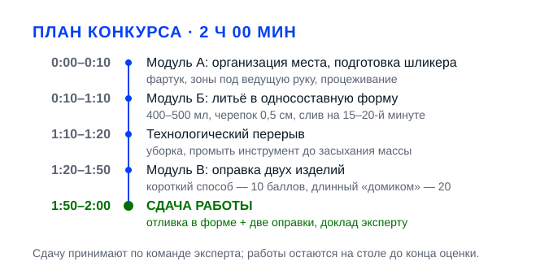
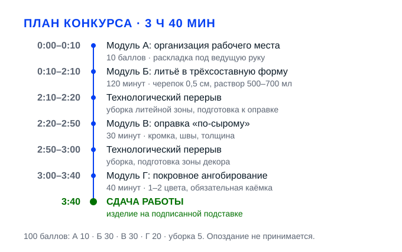
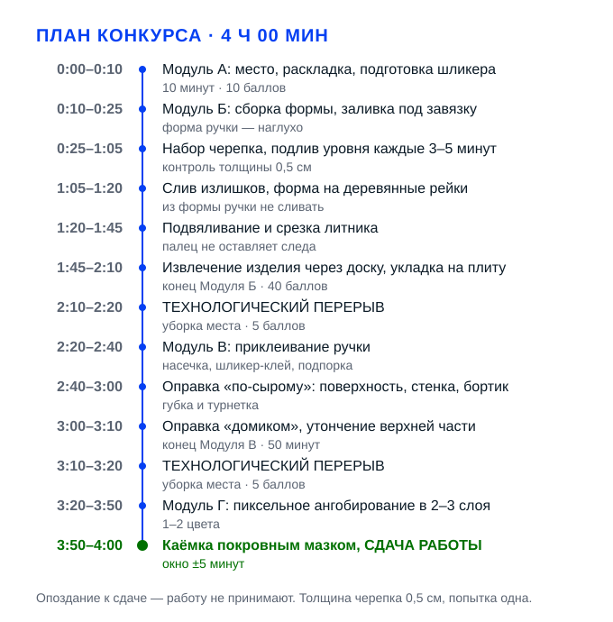

Фарфорист (Р)
Задания ниже — официальные файлы «Абилимпикс» (источник: abilympics-russia.ru), разложенные по категориям. Решения написаны по тексту задания, регламенту и критериям оценки; в них указано, что именно проверяет эксперт.
Школьник
14–16 лет, базовый уровень заданияВыдержка из официального конкурсного задания: страницы, относящиеся к категории «Школьник» (стр. 5–7 источника).
Пошаговое решение
Задание для школьников короткое по составу, но плотное по времени: два часа на площадке, три модуля и сто баллов, из которых сорок даёт литьё, сорок — оправка и десять — организация рабочего места. Сначала за десять минут вы готовите место и шликер, потом час льёте изделие в односоставную гипсовую форму и добиваетесь толщины черепка 0,5 см, после десятиминутного перерыва за тридцать минут оправляете два изделия двумя способами — коротким и длинным. Форму изделия перед стартом могут изменить в рамках тридцати процентов: вместо стакана выдать соусник, розетку или пиалу, поэтому приёмы отрабатывают не под предмет, а под технологию. Ошибка здесь почти всегда одна: участник торопится слить шликер, не набрав стенку, и получает черепок, который не держит форму. Второй провал — кромка, испорченная при срезке литника: за неё в модуле Б сразу снимают десять баллов.

Задача 1. Организовать рабочее место и подготовить шликерМодуль А · 10 баллов
Модуль А длится всего десять минут, но именно он задаёт темп остальным двум часам. Здесь вы надеваете фартук, убираете волосы и украшения, раскладываете девять позиций материалов с учётом ведущей руки, проверяете гипсовую форму и доводите шликер до рабочей консистенции. Баллов немного — десять, из них два за соблюдение правил конкурса, три за организацию места, три за организацию процесса и два за технику безопасности, — но эти баллы снимают и добавляют в течение всего конкурса, а не выставляют в конце. Плюс есть практическая выгода: плохо процеженный шликер даёт раковины и наплывы на внутренней стенке, а неудобно поставленное ведро отнимает время у литья, где каждая минута на счету.
Действие 1.1. Подготовить себя и получить допуск к площадке
Шаг 1.1.1
Надеваем фартук из плотной ткани поверх одежды, которую не жалко испачкать, и завязываем так, чтобы нагрудная часть закрывала грудь до ключиц, а подол доходил до середины бедра. Рукава подворачиваем выше локтя или плотно застёгиваем манжетой: шликер — это глиняная суспензия, она тянется за рукавом и капает на форму. Обувь закрытая, на нескользящей подошве, потому что вода и капли шликера превращают плитку в каток уже к середине первого модуля. Волосы убираем под резинку или заколку, длинную чёлку — под повязку.
Фартук — единственный предмет спецодежды, прямо названный в перечне конкурсного задания: одна штука из ткани, участник привозит его с собой, на площадке не выдают. В модуле А за требования охраны труда стоит 2 балла и за организацию рабочего места 3 балла, и оба критерия эксперт фиксирует визуально в первые минуты, до начала литья. Есть и вторая причина: мокрый рукав липнет к губке и срывает кромку.
Фартук завязан, подол не ниже середины бедра, рукава не спускаются к запястью. Волосы не выбиваются ни спереди, ни сзади — попросите соседа по площадке или волонтёра посмотреть со спины, самому это не видно. Обувь сухая: проведите носком по полу, и если подошва едет, переобуйтесь до старта, а не в процессе.
Частая ошибка — надеть фартук, но оставить длинные рукава: через десять минут манжет мокрый, шликер стекает по нему на форму и оставляет подтёки на внутренней стенке, а это минус 10 баллов в модуле Б. Вторая — прийти в кедах на гладкой подошве и рассчитывать, что «ничего не прольётся».
Эксперт осматривает участника до старта и в первые две-три минуты модуля А: фартук, убранные волосы, закрытая обувь попадают в лист по критерию «Выполнение норм ТБ» — 2 балла.
Шаг 1.1.2
Снимаем часы, кольца, браслеты, длинные серьги и подвески, которые могут зацепиться за край гипсовой формы. Ногти стрижём коротко, без лака и покрытия: под ним остаётся глина, а отколовшийся кусочек уходит в шликер и всплывает уже на черепке. Руки осматриваем на порезы и заусенцы — свежая ранка под шликером начинает щипать через несколько минут, и держать губку становится больно, поэтому мелкие ссадины заклеиваем пластырем заранее. Перед работой смазываем руки кремом и даём впитаться: глина и гипс сушат кожу до трещин за один модуль.
Чистые руки и короткие ногти — часть критерия «Организация рабочего места» на 3 балла, но важнее технология: в отливку идёт 400–500 мл шликера, и любое постороннее включение — обломок ногтя, волос, нитка от одежды — остаётся в стенке и проявляется после сушки как бугорок или раковина. Крем нужен не для комфорта: на сухой коже появляются трещины, а с ними приходит ощущение, что работать невозможно, и участник начинает торопиться.
Руки чистые, украшений нет, ногти короткие и без покрытия, пластырь держится плотно и не свисает с пальца. Проверьте тыльную сторону ладоней на ощупь: если кожа шершавая и тянет, крем наносим ещё раз, но вытираем насухо — жирная рука скользит по губке и не чувствует кромку.
Оставить кольцо «оно не мешает»: под ним остаётся глиняная кашица, а на внутренней стенке изделия потом видна характерная полоса. Вторая ошибка — не заметить заусенец и начать оправку: заусенец цепляется за кожу изделия и вырывает кусок кромки, восстановить её «насухую» уже нельзя, а оправка в модуле В стоит 40 баллов.
Эксперт смотрит на руки дважды: в начале модуля А при осмотре места и потом, когда участник берётся за губку — по тому, как он держит инструмент, видно, не мешают ли ему украшения.
Шаг 1.1.3
Проходим инструктаж у эксперта или технического специалиста площадки и уточняем три вещи, которых нет на плакате: куда сливать остатки шликера — как правило, только в отведённую ёмкость, а не в раковину; где хранятся гипсовые формы и как их переносить; что делать, если гипс просыпался на пол. Запоминаем, где вода, где слив, где можно мыть инвентарь и где электрощит. Расписываемся в листе инструктажа до старта, а не в перерыве между модулями.
Инструктаж — это те же 2 балла за технику безопасности, но реальная цена выше: шликер, слитый в раковину, забивает сифон за десять минут, и модуль останавливают для всего потока, а виноватым окажется тот, кто слил. Гипсовая пыль на полу мокнет и превращается в скользкую плёнку, поэтому место рассыпания убирают сразу, а не «в конце».
Вы знаете четыре точки: вода, слив для шликера, место мойки инвентаря, электрощит. Лист инструктажа подписан. Если что-то из этого не прозвучало — переспросите у эксперта до старта, вопрос на площадке считается нормальным, а ошибка после старта уже нет.
Классика — не спросить, куда сливать шликер, и вылить остатки в раковину «как дома». Последствие: засор, остановка модуля, разбирательство и снятые баллы за соблюдение правил конкурса. Вторая ошибка — подписать лист инструктажа не читая и потом удивляться, что нельзя трогать чужие формы.
Эксперт фиксирует факт инструктажа до старта, а дальше наблюдает весь конкурс: сливает ли участник остатки шликера туда, куда сказали, и убирает ли гипс сразу. Именно расхождение между подписанным листом и поведением на площадке он и отмечает в листе оценки.
Действие 1.2. Разложить материалы с учётом ведущей руки
Шаг 1.2.1
Определяем ведущую руку и строим рабочую зону под неё. Если ведущая правая, ведро со шликером, кувшин с водой и лопатка стоят справа от формы, а грязная посуда, тряпки и миска без воды — слева: тогда мокрая рука не тянется через чистое изделие. У левши всё зеркально. Стол делим на три полосы: дальняя — чистая посуда и сухой инструмент, средняя — форма на подкладной доске и турнетка, ближняя к краю — грязное. Всё, что берут одной рукой, ставим в пределах вытянутой руки, не дальше.
Практическое задание модуля А сформулировано буквально: разложить инструменты и материалы в определённом порядке с учётом ведущей руки, и за это в критерии «Организация рабочего места» дают 3 балла. Логика не в красоте: на литьё отведено 60 минут, и каждое лишнее движение через стол — это потерянные секунды, которых потом не хватит на набор стенки до 0,5 см.
Встаньте так, как будете работать, и протяните ведущую руку: кувшин со шликером должен оказаться под ладонью без наклона корпуса. Пройдите взглядом от формы вправо и влево — на каждой стороне должно быть не больше трёх предметов, иначе начнётся путаница.
Поставить всё в один ряд «чтобы влезло»: через полчаса на столе лужа, мокрая губка лежит на чистом сите, а тряпка — на деревянной доске. Дальше участник хватает грязную губку и размазывает шликер по оправленному изделию, снимая баллы за неровности.
Эксперт обходит место в начале модуля А и отмечает, есть ли зоны и учтена ли ведущая рука; по ходу работы он видит, приходится ли участнику тянуться через стол.
Шаг 1.2.2
Расставляем ёмкости строго по назначению. Ведро с китайским литейным шликером — основная масса, ставим на пол или на нижнюю полку, чтобы не опрокинуть локтем. Рядом пустое ведро для процеженного шликера, в него потом встанет сито. Кувшин с чистой водой — с ведущей стороны, в него набираем воду для разбавления. Миска с водой нужна для смачивания губки, миска без воды — под грязное сито, чтобы оно не пачкало стол. Крышку от ведра не убираем далеко: ею накрывают шликер после процеживания.
Разделение «чистое — грязное» напрямую влияет на качество отливки: грязное сито, поставленное на стол, оставляет комки, а комок в шликере — это раковина или наплыв на внутренней стенке, за которые в модуле Б снимают до 10 баллов. Кроме того, перепутанные ёмкости — самая частая причина, по которой участник льёт в форму не процеженный шликер, а снятую с ведра гущу.
Проверьте по памяти: ведро со шликером, пустое ведро, кувшин с водой, миска с водой, миска без воды — пять ёмкостей, каждая на своём месте и не на краю стола. Кувшин заполнен не выше двух третей, иначе при переносе он плещет.
Поставить миску без воды вплотную к ситу и получить лужу под ними. Или налить воду в ту же миску, где лежит сито: тогда при процеживании вода попадает в шликер, консистенция уходит, и черепок набирается медленнее, а времени на модуль всего час.
Эксперт смотрит, понимает ли участник назначение каждой ёмкости: в критерии «подготовка инструментов, оборудования и раствора» это видно сразу. Отдельно он отмечает, стоит ли грязная посуда отдельно от чистой, и не путает ли участник миску с водой и миску без воды.
Шаг 1.2.3
Раскладываем инструмент так, чтобы его брали не глядя. Лопатку кладём поперёк ведра со шликером ручкой к ведущей руке. Сито — на сухую тряпку рядом с пустым ведром. Губки делим на две: плотная, с ровной плоской стороной, пойдёт на оправку, мягкая — на снятие влаги и пыли. Тряпки раскладываем по три: две сухие и одна влажная, влажную не кладём на гипсовую форму. Турнетку ставим на середину стола, деревянные рейки — под рукой у края, деревянную доску для переворачивания формы — вертикально за формой.
Инструмент, который ищут, отнимает время у литья, а его в модуле Б ровно 60 минут на изделие с толщиной стенки 0,5 см. Плотная губка с плоской стороной — не универсальная: именно её плоскостью по конкурсному заданию выравнивают поверхность и бортик, мягкой губкой это сделать нельзя, она снимает влагу, но не правит форму. Деревянные рейки нужны в строго определённый момент — когда форму переворачивают, чтобы стекли излишки.
Проверьте рукой: лопатка, сито, обе губки, три тряпки, турнетка, рейки и доска — девять позиций, каждая на своём месте, и ни одна не мешает поставить форму. Плотная губка должна быть влажной, но не мокрой: сожмите её в кулаке — вода не должна течь струёй.
Положить плотную губку в миску с водой и оставить там: разбухшая губка не держит плоскость, при выравнивании она «плывёт» и делает волнистую кромку — это минус 10 баллов за короткую оправку и до 20 за длинную.
Эксперт проверяет наличие и состояние инструмента в модуле А визуально, а в модуле В смотрит, какой стороной губки участник работает и держит ли он её под правильным углом к кромке.
Шаг 1.2.4
Берём гипсовую форму обеими руками за боковины, ставим на подкладную доску и осматриваем. Гипс должен быть матовым, светлым и сухим на ощупь; влажная, холодная форма с тёмными пятнами — недосушенная, её нельзя пускать в работу. Проверяем рабочую полость: нет ли сколов на кромке, пыли, засохших комков от прошлой отливки, трещин по корпусу. Литниковый канал должен быть чистым и совпадать с углублением в форме, иначе шликер пойдёт мимо.
Односоставная форма — единственный инструмент, от которого зависит вся отливка, и даётся одна попытка: переделать изделие в модуле Б нельзя. Скол на кромке переносится на изделие, пыль даёт шероховатость, а недосушенный гипс отбирает воду неравномерно, и черепок получается разной толщины — за это в модуле Б стоит 20 баллов из 40. Поэтому осмотр формы входит в подготовку оборудования, то есть в те же 3 балла модуля А.
Проведите пальцем по внутренней полости — палец должен идти гладко, без зацепов. Поднимите форму на свет: трещины видны как тонкие тёмные линии. Если нашли скол или трещину — сразу зовите эксперта, до старта форму обязаны заменить.
Начать литьё в форму, у которой на кромке скол: изделие получит характерный дефект кромки, и это спишут на срезку литника, то есть на вашу работу — 10 баллов. Вторая ошибка — протереть полость мокрой тряпкой «для чистоты»: вода на рабочей поверхности меняет впитывание, и стенка в этом месте набирается тоньше.
Эксперт подходит к моменту осмотра формы и фиксирует, заметил ли участник дефект до начала литья или обнаружил его уже на изделии. Замена формы до старта — нормальная ситуация, а вот литьё в сколотую форму он отмечает как нарушение подготовки оборудования.
Действие 1.3. Довести шликер до рабочей консистенции
Шаг 1.3.1
Берём лопатку и перемешиваем шликер в ведре: сначала медленно по кругу, от стенки к центру, потом энергичнее, поднимая массу со дна. Мешаем не меньше двух-трёх минут, пока не исчезнут слои и сгустки, а поверхность не станет ровной и блестящей. Лопатку ведём плашмя, а не ребром, чтобы не гнать воздух в массу. Если шликер отстоялся и сверху стоит слой воды, воду не сливаем, а вмешиваем обратно.
Китайский литейный шликер хранится и отстаивается: тяжёлые частицы оседают, вода уходит наверх, и без перемешивания первая порция будет жидкой, а последняя — густой пастой. Литьё такой массой даёт разную толщину стенки в одном изделии, а критерий «толщина черепка не более 0,5 см» стоит в модуле Б 20 баллов — половину модуля.
Проверьте визуально: на поверхности нет «островов» густой массы, цвет ровный по всей площади, лопатка идёт с одинаковым усилием. Зачерпните немного и разотрите между пальцами — не должно чувствоваться крупинок.
Мешать «для вида» тридцать секунд и сразу лить: первые порции уйдут жидкими, стенка у литника получится тонкой, а у дна толстой. Вторая ошибка — мешать ребром лопатки быстро и энергично: в массе появляются пузыри, и на внутренней стенке после отливки видны каверны.
Эксперт смотрит на этап подготовки раствора в модуле А: критерий прямо называется «подготовка инструментов, оборудования и раствора», и в нём 3 балла на всё — инструмент, оборудование и массу. По тому, мешает ли участник массу или сразу льёт из ведра, видно, работал ли он со шликером раньше.
Шаг 1.3.2
Проверяем консистенцию на стекание. Поднимаем лопатку над ведром: шликер должен сходить ровной непрерывной струёй и оставлять на лопатке тонкий ровный слой, а не сползать комками и не держаться горкой. Если стекает вяло и ложится бугром — добавляем воду из кувшина порциями по 20–30 мл и снова мешаем, а не льём сразу пол-литра. Если стекает как вода и не оставляет следа на лопатке — масса переувлажнена, добавляем немного шликера из ведра и мешаем.
От консистенции зависит скорость набора стенки: жидкий шликер отдаёт воду быстро, но стенка получается рыхлой и тонкой, густой не заполняет тонкие места формы и даёт недоливы. Ориентир по объёму — 400–500 мл раствора на одно изделие, и если масса слишком густая, этого объёма физически не хватит, чтобы заполнить форму под завязку.
Проверка занимает десять секунд: поднимите лопатку и посчитайте, за сколько шликер сойдёт обратно. Ровная струя без разрывов и тонкий слой на металле — норма. Слой толщиной в палец или стекание каплями — отклонение, которое надо править до заливки.
Долить воду «на глаз» из кувшина: масса становится переувлажнённой, стенка набирается медленно, участник ждёт лишние десять минут и в итоге сливает шликер недодержав — черепок выходит 0,3–0,4 см вместо 0,5, и 20 баллов уходят.
Эксперт может попросить показать консистенцию: по стеканию с лопатки он оценивает, готова ли масса, и заодно видит, понимает ли участник, что делает. Если участник на вопрос «почему столько воды» отвечает «чтобы быстрее текло», это сразу читается как отсутствие подготовки.
Шаг 1.3.3
Ставим сито на пустое ведро и процеживаем: наливаем шликер порциями по 300–400 мл и проталкиваем лопаткой через сетку, не продавливая силой. Комки, оставшиеся на сите, не разбиваем и не возвращаем в массу, а сбрасываем в миску без воды. Готовый процеженный шликер переливаем в кувшин, накрываем крышкой и ставим с ведущей стороны. Грязное сито сразу убираем в миску без воды, а не кладём на стол.
Процеживание — единственная операция, которая убирает из массы комки, окалину и случайный мусор. Непроцеженный шликер даёт на внутренней стенке наплывы и каверны, а первый критерий модуля Б — «отсутствие на внутренней стенке подтёков, капель и наплывов» — стоит 10 баллов. Накрытая крышкой масса не покрывается плёнкой и не пылится, пока вы раскладываете остальное.
Посмотрите на сито: на сетке остались только комки и мусор, масса прошла полностью. В кувшине шликер однородный, без сгустков на дне — проверьте лопаткой до самого дна, а не по поверхности. Крышка лежит на кувшине, а не рядом, и грязное сито уже в миске без воды.
Процедить «наполовину», продавливая комки лопаткой через сетку: комок разминается, но не растворяется, и попадает в отливку. Вторая ошибка — оставить грязное сито на столе: остатки массы подсыхают на сетке и потом осыпаются в следующую порцию.
Эксперт наблюдает процеживание: по тому, работает ли участник с ситом или льёт из ведра напрямую, сразу видно уровень подготовки. Он же отмечает, вернул ли участник комки в массу — это ошибка, которая проявится на изделии уже после отливки.
Действие 1.4. Снять риски и подтвердить готовность
Шаг 1.4.1
Протираем пол вокруг стола насухо и убираем всё, за что можно зацепиться: сумки, стулья, свисающие провода. Проверяем, что ни один провод не лежит в зоне возможного пролива, ёмкости стоят устойчиво и не на самом краю стола, а проход к воде и сливу свободен. Кувшин со шликером не заполняем выше двух третей, ведро ставим так, чтобы его не задевали коленом при повороте к турнетке.
Техника безопасности в модуле А — 2 балла, но цена нарушения измеряется не баллами: пролитый шликер на плитке превращается в скользкую плёнку за минуту, и падение с полным кувшином в руках заканчивается снятием с площадки. Кроме того, разлив останавливает модуль, а время не продлевают: 60 минут на литьё остаются теми же.
Пройдите по своему рабочему треугольнику — стол, ведро, мойка — и проверьте, что ни на одном шаге не приходится переступать через предмет или наклоняться под стол. Пол сухой на ощупь, у ведра нет лужи.
Оставить ведро со шликером в проходе: его задевают локтем, крышка съезжает, масса брызгает на форму. Вторая ошибка — поставить кувшин на край стола рядом с формой: одно неловкое движение при переворачивании, и вся подготовка насмарку.
Эксперт обходит зону перед стартом и отмечает в листе, сняты ли очевидные риски: провода, проходы, устойчивость ёмкостей. Пролитый шликер на полу он фиксирует отдельно, потому что это уже не организация, а прямое нарушение требований охраны труда.
Шаг 1.4.2
Проходим по чек-листу из девяти позиций, не пропуская ни одной: фартук и волосы; руки; ведро со шликером; пустое ведро; кувшин с водой; миска с водой и миска без воды; лопатка и сито; губки, тряпки, турнетка, рейки, доска; процеженный шликер в кувшине под крышкой. Последним пунктом — форма на подкладной доске, литником вверх, полость чистая и сухая. После этого поворачиваемся к эксперту и говорим коротко: «Рабочее место готово, шликер процежен, форма проверена».
Отдельный критерий модуля А — «Организация рабочего процесса: рабочий процесс без сбоев, выполняется чётко по подготовленному плану», 3 балла. Он выставляется по наблюдению за всем конкурсом, и старт по чек-листу — самое наглядное доказательство, что план есть. Готовность, названная вслух, снимает и вопрос «а вы точно готовы?», который иначе прозвучит уже после старта.
Все девять позиций отмечены, форма стоит правильно, шликер накрыт. Если хотя бы одна позиция вызывает сомнение — исправляйте сейчас: в модуле Б возвращаться к подготовке будет некогда, а штраф за неготовность уже не снять.
Пропустить проверку формы: участник обнаруживает, что литниковый канал забит засохшей массой, уже с полным кувшином в руках. Вторая ошибка — молчать о готовности и начинать литьё без команды: эксперт фиксирует нарушение регламента.
Эксперт подходит к концу модуля А, слушает доклад о готовности и сверяет его с тем, что видит на столе. Если участник говорит «готово», а шликер не процежен, это отражается в критерии «организация рабочего процесса» — 3 балла, которые снимаются целиком.
Задача 2. Отлить изделие в односоставную формуМодуль Б · 40 баллов
Самый дорогой модуль конкурса: час работы и сорок баллов, половина из которых — толщина черепка. Задача выглядит просто, потому что всё делает гипс: форма впитывает воду из шликера, на стенках оседает слой массы, излишки сливаются, изделие остаётся в форме дозревать. Но управлять этим процессом приходится вручную, и любая поспешность видна на готовом изделии: слили раньше времени — стенка тоньше 0,5 см, передержали — стенка толще нормы, налили бурно — внутри остались наплывы и капли, срезали литник на весу — испортили кромку. Объём раствора на одно изделие — 400–500 мл, попытка одна, поэтому первые десять минут модуля уходят на подготовку формы, а не на литьё.
Действие 2.1. Подготовить форму и отмерить шликер
Шаг 2.1.1
Ставим форму на подкладную доску и протираем рабочую полость мягкой сухой тряпкой, а углы и литниковый канал проходим сухой кистью или щепкой, обёрнутой тканью. Гипс не моем: вода на рабочей поверхности меняет впитывание, и в этом месте стенка набирается тоньше. Если в полости остались крупинки от прошлой отливки, снимаем их ногтем или деревянной палочкой, не царапая гипс металлом. Кромку формы осматриваем ещё раз: скол в 1–2 мм переносится на изделие.
Чистая и сухая полость — условие равномерного набора стенки, а толщина черепка в модуле Б стоит 20 баллов из 40. Крупинка на гипсе оставляет в изделии углубление, а влажное пятно — утоньшение: гипс в этом месте уже насыщен водой и не тянет её из шликера. Металлом по гипсу работать нельзя, потому что царапина на форме остаётся навсегда и повторяется в каждой следующей отливке.
Проведите по полости ладонью — поверхность должна быть прохладной, матовой и гладкой, без зацепов. На тряпке после протирания не должно остаться серой глиняной пыли. Кромка ровная, литниковый канал просматривается насквозь.
Протереть полость влажной тряпкой «чтобы чище было»: вода закупоривает поры гипса, и стенка в этом месте не набирается совсем — получается проплешина, которую уже нечем исправить. Вторая ошибка — ковырять засохший комок ножом и оставить борозду на форме.
Эксперт смотрит на подготовку формы в первые минуты модуля Б: по тому, чем участник чистит полость, видно, понимает ли он, что гипс — рабочий инструмент, а не просто ёмкость.
Шаг 2.1.2
Ставим форму на подкладную доску литниковым отверстием строго вверх и проверяем горизонтальность: подкладная доска не должна качаться, а сама форма — стоять без наклона. Если форма сидит криво, подкладываем под угол сложенную ткань, но не деревянные рейки — они понадобятся позже. Верхний край формы должен быть выше кувшина, который вы будете держать, чтобы струя шла сверху вниз, а не под давлением.
При наклонённой форме шликер распределяется неравномерно: у одной стенки его слой больше, у другой меньше, и после слива черепок получается разной толщины — прямой путь к минус 20 баллам. Ровная установка нужна и для того, чтобы уровень массы был одинаковым по всему периметру: только тогда по уровню можно судить о наборе стенки.
Посмотрите на форму сбоку на уровне стола: зазор между доской и столом одинаковый по всем четырём углам. Капните немного воды на верхний край — капля должна стоять, а не скатываться в одну сторону. Покачайте доску ладонью: люфт означает, что подкладка легла неровно.
Поставить форму прямо на стол без доски: при переворачивании её придётся поднимать руками, и шликер выплеснется через край. Вторая ошибка — поставить форму на рейки заранее: она стоит неустойчиво, и первая же заливка её сдвинет.
Эксперт отмечает установку формы в критерии организации процесса: ровно ли стоит, на доске ли, не мешает ли она проходу. Отдельно он смотрит, не поставил ли участник форму так, что при переворачивании придётся тянуться через весь стол — это лишний риск уронить свежую отливку.
Шаг 2.1.3
Отмеряем шликер. По конкурсному заданию на одно изделие идёт 400–500 мл раствора, поэтому наливаем в кувшин мерным стаканом или по делениям на стенке — сначала 450 мл, добавить всегда успеем. Перед набором перемешиваем массу в кувшине лопаткой ещё раз, потому что за время подготовки она успела расслоиться. Кувшин держим за ручку ведущей рукой, носик разворачиваем к форме.
Объём важен с двух сторон: меньше 400 мл — форма не заполнится под завязку, и верхняя часть изделия останется недолитой; больше 500 мл — излишки всё равно сольются, но вы будете дольше и неаккуратнее сливать, а разлив на стол в модуле Б никто не отменял. Повторное перемешивание даёт однородную массу: расслоившийся шликер даёт разную толщину стенки по высоте.
На стенке кувшина или в мерном стакане видно 400–500 мл. Масса однородная, без слоя воды сверху. Кувшин не наполнен выше двух третей — так его удобно наклонять, не расплёскивая. Проверьте наклон: при наклоне до угла в сорок пять градусов шликер должен идти струёй, а не вываливаться комом.
Налить «до полного кувшина», не глядя на объём: при переноске шликер выплёскивается на форму и на пол, а на заливку уходит больше времени. Вторая ошибка — лить в форму прямо из ведра, где масса не перемешана и не отмерена.
Эксперт может уточнить, сколько раствора отмерено: в задании объём указан прямо, и точность здесь входит в подготовку раствора. Если участник наливает из ведра без меры, это видно по объёму в кувшине и по тому, как он держит его при переносе.
Действие 2.2. Залить шликер тонкой струёй
Шаг 2.2.1
Наклоняем кувшин и льём тонкой струёй, направляя её на внутреннюю стенку формы, а не в центр литникового отверстия. Струя должна идти непрерывно и без разрыва, кувшин ведём по кругу, чтобы масса поднималась равномерно по всему периметру. Держим носик в двух-трёх сантиметрах от края — так струя не разбивается и не захватывает воздух. Первую порцию льём медленнее: она смачивает гипс и вытесняет воздух из пор.
Воздух, захваченный струёй, остаётся в массе пузырями и после отливки превращается в каверны на внутренней стенке — а первый критерий модуля Б звучит как «отсутствие на внутренней стенке подтёков, капель и наплывов», 10 баллов. Литьё в центр отверстия даёт удар струи о дно и разбрызгивание: капли прилипают к стенкам и засыхают бугорками. Ровный подъём уровня нужен, чтобы стенка набиралась одинаково по всей высоте.
Струя ровная, без разрывов и брызг; на стенках формы нет капель выше уровня массы. Масса поднимается по периметру равномерно, без «застоев» в одном углу. Слушайте звук: ровное журчание без бульканья означает, что воздух не захватывается.
Лить широкой струёй «чтобы быстрее»: в массе остаются пузыри, а на стенках — наплывы, которые потом не срезать, потому что они внутри. Вторая ошибка — лить в одну точку: гипс в этом месте размывается, и там образуется раковина.
Эксперт наблюдает заливку вживую: техника струи — самый наглядный показатель навыка, и он виден целиком, без всяких измерений. Он отмечает, льёт участник по стенке или в центр, держит ли носик близко к форме и не разбрызгивает ли массу.
Шаг 2.2.2
Заливаем до края, под завязку: уровень массы должен встать у самой кромки литникового отверстия, но не переливаться через форму. Доливаем последние миллилитры медленно, по стенке, чтобы не вспенить поверхность. Если на поверхности появилась пена или пузыри, снимаем их лопаткой или щепкой, а не оставляем — они прилипнут к будущей кромке изделия. Перелив через край формы недопустим: потёк по наружной стороне высохнет и будет мешать переворачивать.
Неполная заливка — это недолитое изделие: верхняя часть стенки не сформируется, кромка получится рваной, а срезка литника на такой заготовке только добьёт результат, и 10 баллов за кромку уйдут. Пена на поверхности превращается в пористую кромку, которую невозможно оправить ровно.
Уровень массы стоит у кромки, поверхность ровная и блестящая, без пены. Наклонитесь и посмотрите вдоль края: линия шликера должна быть параллельна кромке формы по всему периметру. Если в одном углу уровень ниже — форма стоит с наклоном, поправьте доску.
Залить «чуть ниже края», чтобы не разлить: сверху остаётся воздушный зазор, и кромка изделия получается неровной, с уступом. Вторая ошибка — доливать через край и оставлять потёки на наружной стороне формы: их потом не отличить от дефектов отливки.
Эксперт проверяет уровень сразу после заливки: полная форма — признак того, что участник понимает, зачем нужен запас массы. Недолитая форма на этом этапе означает, что кромка изделия уже потеряна, и эксперт фиксирует это в листе.
Шаг 2.2.3
Первые десять-пятнадцать минут уровень держим: гипс впитывает воду, масса оседает, и в форме образуется воронка. Подливаем из кувшина небольшими порциями по 20–30 мл, снова по стенке и тонкой струёй, возвращая уровень к кромке. Подливать нужно тем же шликером, который отмерен заранее, а не водой: вода разжижает верхний слой и делает кромку рыхлой. Каждый раз после подливки проверяйте, не попала ли на наружную сторону формы капля — её убирают сразу, пока не подсохла.
Без подливки верхняя часть изделия остаётся недоформованной: масса уходит в стенки, уровень падает на сантиметр и больше, и кромка получается ниже, чем нужно. Кроме того, при падении уровня на внутренней поверхности остаётся кольцевой след — тот самый подтёк, за который снимают баллы. Подливать чистой водой нельзя: она смывает уже осевший слой.
Уровень держится у кромки. Смотрите на секундную стрелку: если за пять минут масса ушла больше чем на сантиметр, значит, гипс сухой и впитывает активно — подливайте чаще. На стенках не должно быть кольцевых следов от прежнего уровня, а в кувшине должен остаться запас хотя бы на две подливки.
Отвлечься на уборку и вернуться к форме с упавшим уровнем: на внутренней стенке остаётся ступенька, которая после сушки превращается в наплыв. Вторая ошибка — доливать воду из кувшина с чистой водой, перепутав его со шликером: верхний слой разжижается, и кромка выходит рыхлой.
Эксперт проходит мимо формы в это время и отмечает, следит ли участник за уровнем или занят другим. Для него это признак того, понимает ли участник физику процесса: гипс всё время забирает воду, и форма без присмотра сама себя не держит.
Действие 2.3. Набрать толщину черепка и слить излишки
Шаг 2.3.1
Даём стенке набраться. Гипс отсасывает воду из шликера, и на поверхности формы оседает слой массы; при сухой форме комнатной температуры нужные 0,5 см набираются примерно за пятнадцать-двадцать минут. Отсчёт ведём от момента, когда форма залита под завязку, а не от начала подготовки. Всё это время форму не трясём, не переставляем и не наклоняем: осевший слой ещё не держится.
Толщина черепка — 20 баллов из 40, и это единственный параметр модуля, который задаётся не действием, а выдержкой. Недодержали — стенка тоньше нормы, изделие «промнётся» при оправке; передержали — стенка толще 0,5 см, и снять лишнее уже нельзя, потому что масса снаружи, а не внутри. Время набора зависит от сухости формы и температуры массы, поэтому ориентир пятнадцать-двадцать минут нужно проверять, а не принимать на веру.
Первый признак набора — по кромке литникового отверстия видно кольцо осевшей массы. Второй — масса в форме перестала «питься» в стенки так активно, как в начале. Точную толщину проверим на следующем шаге, но грубо оценить можно по кольцу: оно должно быть заметным, не тонкой плёнкой.
Начать слив через пять-семь минут, «пока не застыло»: стенка получается 0,2–0,3 см, при оправке она рвётся под губкой, и модуль В тоже теряет баллы. Вторая ошибка — уйти и передержать полчаса: стенка выходит толще 0,5 см, а внутри остаётся неровный слой.
Эксперт подходит к форме в середине набора и смотрит на часы участника: ведёт ли он отсчёт или действует наугад. Он также отмечает, не трогает ли участник форму в это время — любое движение во время набора портит равномерность стенки.
Шаг 2.3.2
Проверяем толщину до слива. Берём деревянную зубочистку или спичку, аккуратно вводим её в массу у самой кромки литникового отверстия под небольшим углом и смотрим, где она упрётся в гипс: расстояние от поверхности массы до стенки и есть толщина черепка. Делаем два-три прокола в разных местах по периметру, потому что у литника стенка всегда тоньше. После проверки заглаживаем проколы пальцем, смоченным водой.
Прокол — единственный способ узнать толщину, не разрушая отливку, и он прямо связан с критерием «толщина черепка не более 0,5 см» на 20 баллов. Проверка в одном месте обманывает: у литникового отверстия масса набирается медленнее, чем у дна, и по одному замеру легко ошибиться в обе стороны. Заглаживать проколы нужно сразу, иначе они останутся вмятинами на кромке.
Спичка упирается в гипс примерно на половине сантиметра — это и есть 0,5 см. Проверьте линейкой саму спичку: отметьте на ней 5 мм ногтем и сравните с проколом. Разброс между тремя замерами не должен превышать 1–2 мм.
Ковырять стенку ножом или ногтем: остаётся рваная дыра, которая после сушки превращается в трещину, и изделие идёт в брак целиком. Вторая ошибка — проверять толщину на глаз по кольцу и не делать проколов вообще.
Эксперт может подойти в момент проверки: наличие измерительного действия он отмечает отдельно, потому что толщина входит в число измеримых критериев. Если участник проверяет на глаз и уверенно говорит «полсантиметра», эксперт всё равно измерит сам.
Шаг 2.3.3
Сливаем излишки. Берём форму обеими руками, плавно наклоняем над пустым ведром и держим под углом примерно сорок пять градусов, пока масса не сойдёт ровной струёй. Наклоняем медленно и в одну сторону, не переворачивая форму вверх дном: резкое движение срывает осевший слой. Когда струя начнёт прерываться, проводим пальцем или губкой по кромке литникового отверстия, снимая тянущуюся нить, и даём остаткам стечь ещё десять-пятнадцать секунд.
Слив — момент, когда формируется внутренняя поверхность, и именно на ней эксперты ищут подтёки, капли и наплывы: 10 баллов. Плавный наклон в одну сторону даёт ровное стекание и гладкую стенку, а резкий переворот оставляет на внутренней поверхности волны застывшей массы. Снятая с кромки нить — это заготовка будущего дефекта кромки, за который снимают ещё 10 баллов.
Струя сходит ровно и прекращается сама. Внутри, если заглянуть в отверстие под углом, поверхность стенки гладкая, без бугров и потёков. На кромке нет тянущейся массы, ведро стоит под формой, а не рядом.
Перевернуть форму вверх дном над ведром: масса выходит толчками, осевший слой местами отходит от гипса, и на изделии появляются вмятины. Вторая ошибка — слить в раковину или на стол, вместо пустого ведра: разлив останавливает работу и снимает баллы за организацию.
Эксперт смотрит слив целиком: по плавности наклона и по тому, куда уходит масса, он оценивает и технику, и соблюдение порядка на месте. Слив на пол или в раковину он фиксирует как нарушение правил конкурса, а не только как небрежность.
Шаг 2.3.4
Сразу после слива переворачиваем форму литниковым отверстием вниз и ставим на деревянные рейки, положенные на подкладную доску. Переворачиваем через деревянную доску: накрываем ею форму, прижимаем двумя руками и одним движением переворачиваем, потом снимаем доску. Остатки шликера из полости стекают на стол, поэтому под рейки подкладываем тряпку. В таком положении форма стоит до проверки готовности.
В перевёрнутой форме остатки массы стекают из полости, а не скапливаются внизу, где образуют наплыв — тот самый, за который в модуле Б снимают 10 баллов. Рейки дают зазор для стока и воздухообмен: без них форма стоит в луже и низ изделия отсыревает. Переворот через доску — не формальность, а способ не смять свежую стенку пальцами.
Форма стоит на рейках ровно, литником вниз, под ней тряпка. Через минуту под формой появляется влажное пятно — значит, сток работает. Кромка не касается стола, а сама форма не шатается: проверьте, не съехали ли рейки под весом.
Переворачивать форму руками, взявшись за края: пальцы вминаются в свежую кромку, и потом её приходится оправлять в ущерб геометрии. Вторая ошибка — поставить форму литником вверх и оставить: вся оставшаяся масса стекает вниз и утолщает дно.
Эксперт наблюдает переворот: использование деревянной доски прямо предписано заданием, и её отсутствие он отмечает. Заодно он смотрит на руки — держит ли участник форму за боковины, а не за кромку, и не ставит ли её на край стола.
Действие 2.4. Подсушить изделие и проверить готовность
Шаг 2.4.1
Оставляем форму в перевёрнутом виде на рейках примерно на двадцать-двадцать пять минут. За это время стенка доходит до состояния, когда масса перестаёт быть текучей: при нажатии пальцем на кромку след не остаётся, а сама кромка пружинит и держит форму. Проверяем аккуратно, касаясь кромки подушечкой пальца, а не ногтем, и в одном месте, а не по всему периметру.
Готовность определяет, можно ли срезать литник: на сырой массе срез тянется и рвёт кромку, на пересушенной — крошится. Ориентир по заданию простой: при проведении пальцем не должно оставаться следов. Двадцать-двадцать пять минут — среднее время для сухой формы и комнатной температуры, но проверять нужно именно состояние массы, потому что влажность на площадке меняется от бокса к боксу.
Проведите пальцем по кромке: след не остаётся, поверхность матовая, цвет ровный. Ноготь при лёгком нажатии оставляет светлую царапину — значит, масса ещё чуть влажная, но уже держит форму, и срез делать можно. Если палец продавливает вмятину — ждём ещё пять минут.
Срезать литник сразу после слива, «пока удобно»: масса тянется за инструментом, кромка выходит рваной, и 10 баллов за отсутствие повреждений кромки теряются на первой же операции. Вторая ошибка — сушить час и больше: кромка становится хрупкой и скалывается.
Эксперт подходит к форме к моменту проверки готовности и смотрит, проверяет ли участник состояние массы или действует по часам. Проверка пальцем прописана в задании буквально, поэтому её отсутствие он воспринимает как незнание технологии.
Шаг 2.4.2
Для равномерного высыхания накрываем изделие газетой: лист кладём на кромку формы так, чтобы он закрывал литниковое отверстие и свисал по краям, но не касался внутренней поверхности изделия. Газета держит влагу и не даёт кромке сохнуть быстрее дна — именно из-за неравномерной сушки изделие ведёт и на кромке появляются трещины. Сверху ничем не прижимаем.
Требование накрыть газетой прописано в задании прямо, и оно технологическое, а не декоративное: открытая кромка сохнет первой, садится и тянет за собой стенку, а на изделии появляются волосяные трещины. Эксперт видит трещину на кромке и трактует её как повреждение, то есть снимает баллы по критерию кромки.
Газета лежит свободно, закрывает отверстие, не проваливается внутрь. Через десять минут она должна стать мягкой от влаги — это признак, что влага уходит постепенно, а не рывком. Внутренняя стенка при этом остаётся гладкой, без отпечатков бумаги.
Накрыть форму тряпкой или полиэтиленом: под полиэтиленом образуется конденсат, капли падают на изделие и оставляют вмятины. Вторая ошибка — прижать газету так, что она касается внутренней стенки, и получить на ней отпечаток текста.
Эксперт проверяет, накрыто ли изделие, при обходе: это пункт, который легко заметить и легко забыть. Для него газета — маркер того, что участник читал задание, а не действовал по памяти с тренировки.
Действие 2.5. Срезать литник и сдать отливку в форме
Шаг 2.5.1
Снимаем газету и срезаем литник. Форму ставим на подкладную доску, изделие не вынимаем. Берём резак или нож с коротким лезвием, ставим его под небольшим углом к кромке и одним уверенным движением срезаем лишнюю массу по кругу, не пиля и не возвращаясь по одному месту дважды. Лезвие ведём от себя, свободная рука держит форму, а не изделие. После среза кромку проходим влажной губкой — одним мягким движением по кругу.
Кромка после срезки литника — отдельный критерий на 10 баллов, и он оценивается по отсутствию повреждений. Один уверенный проход даёт ровную линию, а пиление оставляет зазубрины и уводит плоскость среза. Губкой кромку проходят, чтобы снять заусенцы, но именно мягко: сильное трение размывает кромку и делает её волнистой.
Кромка ровная по всему периметру, одной высоты, без зазубрин и вмятин. Проведите по ней пальцем — не должно быть зацепов. Посмотрите на просвет: линия кромки должна быть параллельна краю формы, а на гипсе не должно остаться свежих царапин от лезвия.
Срезать литник «в несколько приёмов», подрезая по чуть-чуть: на кромке остаются ступеньки и зазубрины, а это минус 10 баллов. Вторая ошибка — давить лезвием на форму: на гипсе остаётся борозда, которая перейдёт в следующую отливку.
Эксперт осматривает кромку сразу после срезки: это самый быстрый способ понять, владеет ли участник инструментом. Он смотрит на высоту кромки по кругу и на то, не снят ли вместе с литником лишний слой массы.
Шаг 2.5.2
Делаем финальный осмотр отливки, не вынимая её из формы. Смотрим внутрь под углом к свету: на стенке не должно быть подтёков, капель и наплывов, поверхность ровная и матовая. Проверяем толщину ещё раз спичкой в двух местах и убеждаемся, что она не больше 0,5 см. Затем накрываем изделие газетой и оставляем в форме — по заданию результат модуля Б сдаётся именно так: отлитое изделие находится в гипсовой форме.
Три критерия модуля Б проверяются именно на этом осмотре: отсутствие подтёков и наплывов — 10 баллов, состояние кромки — 10, толщина не более 0,5 см — 20. Вынуть изделие из формы до сдачи нельзя: в задании результатом названо изделие в форме, а извлечение — это уже операция модуля В для другой категории. Если дефект найден сейчас, у вас ещё есть время аккуратно поправить кромку.
Внутренняя стенка гладкая, без бугров и потёков; кромка одной высоты; толщина в двух замерах не превышает 0,5 см; изделие лежит в форме и накрыто. Форма стоит на подкладной доске, а не на краю стола. Рядом нет открытого ведра со шликером, которое могут задеть.
Вынуть изделие «посмотреть»: свежая масса деформируется в руках, кромка мнётся, и вернуть всё обратно без следов невозможно. Вторая ошибка — не проверить толщину и сдать изделие с черепком 0,7 см, потеряв половину модуля.
Эксперт подходит к сдаче модуля Б и оценивает изделие в форме: он смотрит внутрь под углом, проверяет кромку и при необходимости измеряет толщину своим инструментом.
Задача 3. Оправить два изделия разными способамиМодуль В · 40 баллов
Оправка — это чистовка: с изделия снимают швы, заусенцы и лишнюю массу, выравнивают поверхность и кромку. На тридцать минут выдаются два изделия, и оправлять их нужно по-разному: одно коротким способом, где бортик остаётся плоским, второе длинным, где верхнюю часть утончают «домиком». Баллы распределены так, что длинный способ дороже вдвое: 20 баллов против 10, ещё 10 дают за отсутствие неровностей на внутренней и внешней поверхности и 10 за одинаковую толщину по всему изделию. Работа идёт «насухую»: масса уже не липнет к пальцам, но ещё режется губкой, и это окно длится недолго. Чуть передержали — изделие начинает крошиться, чуть недодержали — губка сминает стенку.
Действие 3.1. Принять изделия и оценить их состояние
Шаг 3.1.1
Получаем два изделия и сразу осматриваем каждое целиком, поворачивая в руках: кромка, внутренняя стенка, наружная поверхность, дно. Ищем трещины, сколы, вмятины, следы пальцев и наплывы. Найденный дефект показываем эксперту до начала работы, а не после, и запоминаем, на каком именно изделии он находится, чтобы не перепутать при сдаче. Изделия держим двумя руками, за дно и за боковину, не сжимая кромку.
Попытка на каждое изделие даётся одна, и оправка необратима: снятую губкой массу не вернуть. Если дефект был до вас — его обязаны учесть при оценке, но только при условии, что вы показали его до работы; дефект, обнаруженный после оправки, спишут на вас. Осмотр занимает минуту, а спасает 10 баллов за отсутствие неровностей.
Оба изделия осмотрены полностью, дефекты названы эксперту вслух и показаны. Вы помните, у какого изделия какая особенность. На поверхности нет свежих отпечатков ваших пальцев — их снимают мягкой губкой.
Схватить изделие за кромку и оставить вмятину пальцем: она уже не расправится, а при оправке превратится в плоское пятно. Вторая ошибка — заметить трещину и промолчать, рассчитывая «само загладится»: трещина раскроется при сушке, и виноватым будете вы.
Эксперт выдаёт изделия и стоит рядом в первые минуты: он видит, осматривает участник заготовки или сразу начинает тереть губкой. Показанный до работы дефект он вносит в лист как объективный, и на оценку он уже не влияет.
Шаг 3.1.2
Проверяем состояние массы — оно определяет всё. Прикладываем подушечку пальца к внутренней стенке: след не должен оставаться, кожа изделия должна быть матовой и прохладной. Ноготь при лёгком нажатии оставляет светлую царапину — значит, масса в состоянии кожистой твёрдости, и её можно оправлять. Если поверхность ещё блестит и липнет, изделию нужно две-три минуты на воздухе; если крошится под ногтем — вы опоздали и работаете очень осторожно, короткими движениями.
«Насухую» — значит, что изделие уже держит форму, но ещё поддаётся правке. В этом состоянии губка снимает тонкую стружку, а не размазывает массу, и кромка получается ровной. Слишком сырое изделие губка мнёт, слишком сухое — скалывает: оба варианта дают неровности, а за них в модуле В снимают 10 баллов.
Три признака готовности: палец не оставляет вмятины, ноготь оставляет светлую царапину, кромка держит форму при лёгком нажатии. Проверьте на незаметном участке — у дна, а не на видной стороне. Если изделие сырое, дайте ему две-три минуты и проверьте снова, а не начинайте «пока мягкое».
Начать оправку сырого изделия: губка прилипает и тянет массу, кромка идёт волной, а исправить это уже нельзя, потому что материал снят. Вторая ошибка — оправлять пересушенное изделие и получить скол на кромке, который сразу видит эксперт.
Эксперт проверяет готовность изделий вместе с участником: по тому, как участник оценивает состояние массы, он понимает, есть ли у него чувство материала.
Шаг 3.1.3
Готовим инструмент под оправку. Плотную губку смачиваем в миске с водой и отжимаем так, чтобы она была влажной, но не текла. Ставим на стол турнетку, проверяем, что она вращается легко и не шатается. Рядом кладём мягкую губку для снятия пыли и сухую тряпку, а деревянную доску убираем за форму — она понадобится только при переносе. Форму, на которой будут лежать оправленные изделия, протираем сухой тряпкой.
Плоская сторона плотной губки — рабочий инструмент, прямо названный в задании: именно ею выравнивают поверхность и бортик. Сухая губка царапает, переувлажнённая размывает кромку и оставляет потёки, поэтому отжим — не формальность. Турнетка нужна, чтобы вести губку по кругу с одинаковым усилием: на весу рука дрожит, и кромка выходит волнистой.
Губка влажная: при сжатии в кулаке вода не течёт струёй, но ладонь остаётся мокрой. Турнетка крутится без рывков, изделие садится на неё плотно и не ездит. На столе нет лишних предметов в радиусе движения руки.
Работать сухой губкой: она снимает массу рывками, оставляя борозды, а на кромке появляются задиры. Вторая ошибка — поставить изделие на турнетку, не проверив, что она не шатается: при первом же обороте изделие съезжает и мнётся.
Эксперт смотрит на подготовку инструмента перед модулем В: какой стороной губки участник собирается работать и смочена ли она. Сухая губка в руках в начале оправки — для него признак того, что участник не представляет, как поведёт себя масса.
Действие 3.2. Оправка коротким способом: плоский бортик
Шаг 3.2.1
Берём первое изделие, ставим на турнетку и начинаем с наружной поверхности: прижимаем плоскую сторону плотной губки к стенке под небольшим углом и ведём по кругу, поворачивая турнетку другой рукой. Движение однообразное, с лёгким нажимом, без остановок на одном месте. Проходим так два-три оборота, пока поверхность не станет ровной и матовой, а следы от формы не исчезнут. Затем сглаживаем острые края: губку ставим почти вертикально и проходим по кромке, снимая заусенцы.
Короткий способ начинается с выравнивания поверхности плоской стороной губки, и это ровно то, что перечислено в задании. Равномерный нажим по кругу даёт одинаковую толщину, а нажатие «где толще» уводит стенку и делает её разной — за одинаковую толщину в модуле В дают 10 баллов. Острые края сглаживают в первую очередь потому, что они крошатся при дальнейшей работе.
Проведите ладонью по наружной поверхности: она должна быть гладкой, без бугров и шероховатостей. Посмотрите на свет под углом — поверхность матовая, без блестящих проплешин. Кромка на ощупь не режет палец.
Тереть в одном месте, «пока не станет ровно»: там стенка утоньшается, и на изделии появляется вмятина, которую видно на просвет. Вторая ошибка — сглаживать кромку сухой губкой и вырвать кусок массы: кромка получается рваной, и 10 баллов за короткую оправку уходят сразу.
Эксперт подходит и смотрит на поверхность изделия под углом к свету — так видны все бугры, которые не заметны при взгляде сверху. Он же проверяет, не осталось ли на стенке следов от пальцев и от формы.
Шаг 3.2.2
Переходим к внутренней стенке. Изделие придерживаем одной рукой за наружную сторону, а плотной губкой работаем изнутри: ведём от дна вверх, по спирали, снимая следы литья и уплотняя стенку. Направление — снизу вверх, а не наоборот, чтобы снятая масса не собиралась на дне. У дна проходим аккуратно, короткими движениями, не продавливая: там стенка тоньше всего. Закончив, снимаем мягкой губкой пыль и разводы.
За критерий «отсутствие неровностей на внутренней и внешней поверхности» в модуле В дают 10 баллов, и внутренняя стенка проверяется не менее строго, чем наружная: эксперт заглядывает внутрь под углом. Движение снизу вверх не даёт массе сползать на дно и образует там наплыв, который потом невозможно убрать, не утоньшив дно.
Проведите пальцем по внутренней стенке от кромки к дну: путь должен быть гладким, без ступенек. На дне не должно быть утолщения из снятой массы. Мягкая губка после прохода чистая, без комков, а на изделии не осталось мокрых разводов.
Работать изнутри губкой, смоченной слишком сильно: вода собирается на дне, и там образуется размытая ямка. Вторая ошибка — давить у дна: стенка проминается, и на изделии появляется вмятина изнутри, которая видна снаружи.
Эксперт заглядывает внутрь изделия на уровне кромки: так лучше всего видны ступеньки и наплывы у дна. Внутренняя поверхность проверяется при том же свете, что и наружная, и скидок на «внутри не видно» не делается.
Шаг 3.2.3
Выравниваем бортик — и это главное отличие короткого способа: он остаётся плоским. Плоскую сторону губки ставим на кромку сверху, под углом примерно девяносто градусов к стенке, и ведём по кругу, снимая лишнюю массу до тех пор, пока ширина бортика не станет одинаковой по всему периметру. Затем губку наклоняем и проходим по внешнему и внутреннему краю бортика, сглаживая переход. Никакого утончения и закругления сверху не делаем.
Отдельный критерий модуля В — «кромка изделия оправлена ровно (короткая оправка)», 10 баллов, и оценивается именно плоскость бортика и одинаковая его ширина. Если участник по привычке начнёт утончать верх, изделие перестанет соответствовать короткому способу, и эксперт может не засчитать его вовсе, потому что по заданию нужны два разных варианта оправки.
Ширина бортика одинаковая по всему периметру — проверьте на глаз, поворачивая изделие на турнетке, и при сомнении измерьте линейкой в четырёх точках. Плоскость бортика ровная, без наклона внутрь или наружу. Переход от бортика к стенке плавный, без ступеньки.
Скруглить бортик «для красоты»: изделие уходит в длинный способ, и разница между двумя работами исчезает — теряется смысл задания и баллы за оба варианта. Вторая ошибка — снять слишком много с одной стороны, и бортик становится клином.
Эксперт осматривает кромку короткой оправки отдельно и оценивает её в 10 баллов: смотрит на ширину бортика и на то, остался ли он плоским. Он поворачивает изделие в руках, потому что кривизну бортика с одного ракурса не видно.
Действие 3.3. Оправка длинным способом: утончение «домиком»
Шаг 3.3.1
Берём второе изделие и начинаем так же, как первое: выравниваем наружную поверхность плоской стороной плотной губки по кругу, два-три оборота, с одинаковым нажимом. Затем острые края сглаживаем тщательнее, чем в коротком способе: губку ведём по кромке под небольшим углом, два-три прохода, уделяя внимание местам, где кромка кажется острой на ощупь. В длинном способе именно кромка и верхняя часть получают больше всего внимания.
Длинная оправка стоит 20 баллов — вдвое дороже короткой, и в задании прямо сказано, что острым сторонам изделия уделяют особое внимание и тщательно их сглаживают. Это не украшательство: на тонкой кромке после обжига появляются сколы, поэтому её доводят до гладкости, а не просто снимают заусенцы.
Наружная поверхность гладкая, кромка на ощупь не цепляет кожу ни снаружи, ни изнутри. Стенка держит форму, при лёгком нажатии пружинит, а не проминается. Разницы в толщине по высоте нет, а на кромке не осталось блестящих полос от губки.
Оправлять второе изделие «как первое, только быстрее»: кромка остаётся острой, а верхняя часть не подготовлена к утончению, и при работе «домиком» там появляется залом. Вторая ошибка — сглаживать кромку, не поддерживая изделие второй рукой: оно сдвигается и мнётся.
Эксперт смотрит на кромку длинной оправки в первую очередь: она стоит 20 баллов, и разница с короткой должна быть очевидна. Он сравнивает оба изделия в руках, чтобы убедиться, что способы действительно разные.
Шаг 3.3.2
Выравниваем внутреннюю стенку: губкой работаем изнутри по спирали, от дна вверх, снимая следы литья. В нижней трети нажим слабее, в верхней — чуть сильнее, потому что верхнюю часть всё равно будем утончать. У кромки пока не задерживаемся: там работа пойдёт отдельно, «домиком». После прохода убираем мягкой губкой разводы и проверяем, не осталось ли ступеньки на переходе от дна к стенке.
Внутренняя стенка входит в те же 10 баллов за отсутствие неровностей, и в длинном способе она должна быть не просто гладкой, но и подготовленной к утончению верха: если стенка у кромки останется толстой, «домик» не получится, а если слишком тонкой — кромка обвиснет.
Проведите пальцем изнутри снизу вверх: путь гладкий, без уступа у дна. На просвет стенка выглядит равномерно, без светлых пятен, которые означают утоньшение. У кромки стенка пока остаётся толстой — её утончат на следующем шаге.
Проходить внутреннюю стенку дважды с сильным нажимом: стенка утоньшается до состояния, когда её можно продавить пальцем. Вторая ошибка — оставить у дна валик снятой массы, который при сушке даст трещину.
Эксперт проверяет внутреннюю поверхность обеих работ одинаково строго, потому что критерий общий и стоит 10 баллов. Он смотрит и на дно: именно там чаще всего остаётся валик массы, который при сушке даёт трещину.
Шаг 3.3.3
Утончаем верхнюю часть — оправка «домиком». Губку ставим на кромку под углом примерно сорок пять градусов, так чтобы её плоскость образовывала над изделием подобие двускатной крыши, и ведём по кругу, постепенно снимая массу с наружной стороны вниз от кромки. Работаем короткими проходами с поворотом турнетки, несколько раз обходя изделие, пока верх не станет заметно тоньше основной стенки, а переход — плавным. Внутрь «домиком» не заходим.
«Домик» — это и есть длинный способ: верх изделия утончается к кромке, как скат крыши, и именно эту операцию оценивают в 20 баллов. Резкое снятие массы даёт уступ, который видно на просвет, поэтому массу убирают постепенно, за несколько проходов. Утончение улучшает и обжиг: тонкая кромка меньше ведёт при сушке.
Проверьте на просвет: у кромки стенка тоньше, чем в середине, но всё ещё держит форму и не просвечивает насквозь. Переход плавный, без уступа — проведите пальцем снаружи сверху вниз, ступеньки быть не должно. Кромка не обвисла и не пошла волной.
Сделать «домик» одним сильным проходом: на изделии остаётся уступ, а кромка становится настолько тонкой, что обвисает. Вторая ошибка — увлечься и утоньшить верх до состояния, когда изделие не держит форму; вернуть массу нельзя.
Эксперт осматривает верхнюю часть длинной оправки под углом к свету и на просвет: это самый дорогой элемент модуля, 20 баллов из 40. Он проверяет и плавность перехода, и то, не обвисла ли кромка после утончения.
Действие 3.4. Проверить результат и сдать обе работы
Шаг 3.4.1
Проверяем одинаковую толщину по всему изделию, и делаем это на обоих. Проще всего на ощупь: сожмите стенку между большим и указательным пальцем в четырёх точках по высоте и по кругу — усилие должно быть одинаковым. Для точности можно использовать штангенциркуль с мягкими губками или металлическую линейку, приложенную к кромке. Отдельно проверяем дно: оно должно быть не толще стенки и без валика по внутреннему краю.
Критерий «толщина изделия одинаковая» стоит 10 баллов в модуле В, и он проверяется по всему изделию, а не в одной точке. Разная толщина — это не только оценка: при сушке и обжиге такая стенка ведёт себя неравномерно, изделие коробится и трескается, поэтому дефект считается грубым.
Ощущение при сжатии одинаковое во всех четырёх точках. На просвет нет резких светлых пятен. Дно не выделяется толщиной, по внутреннему краю дна нет валика снятой массы. Обе работы проверены одинаково, а не только та, что кажется удачнее.
Проверять только кромку и считать, что этого достаточно: в середине стенки остаётся утолщение от формы, и на просвет оно видно сразу. Вторая ошибка — измерять штангенциркулем с сильным нажимом и вмять стенку.
Эксперт может использовать измерительный инструмент, это прямо разрешено в критериях: он проверяет толщину в нескольких точках и сравнивает изделия между собой.
Шаг 3.4.2
Ставим оба изделия рядом и сравниваем: у первого бортик плоский и одинаковый по ширине, у второго верх утончён «домиком». Проговариваем вслух разницу — какое изделие каким способом оправлено, и в чём состоит отличие. Если на каком-то изделии осталась пыль или разводы, снимаем их мягкой губкой. Ничего не поправляем «на глаз» в последний момент: на этой стадии любое движение только портит.
По заданию на оценку представляются оба изделия, и они должны демонстрировать два разных вида оправки; если разница не читается, эксперт не сможет засчитать ни короткую, ни длинную работу. Проговаривание вслух — проверка себя: если участник не может объяснить, чем отличаются способы, значит, он делал одно и то же дважды.
Два изделия стоят рядом, разница видна с первого взгляда: одно с плоским бортиком, другое с утончённым верхом. Оба чистые, без отпечатков пальцев. Вы можете назвать способ для каждого изделия не задумываясь.
Поправить «домик» на изделии с короткой оправкой, чтобы «смотрелось лучше»: разница между способами исчезает, и 20 баллов за длинную оправку теряются. Вторая ошибка — перепутать изделия и назвать способ неверно.
Эксперт сравнивает оба изделия именно в паре: ему нужно увидеть два разных способа, а не две одинаковые чашки. Если разница не читается, он может попросить участника объяснить, чем отличаются работы, и по ответу поймёт, была ли это ошибка или незнание.
Шаг 3.4.3
Выкладываем оба изделия на гипсовую плиту или на сухую гипсовую форму, как требует задание, на расстоянии друг от друга, кромкой вверх. Рядом не ставим мокрую посуду и не кладём губку: влага от соседних предметов размягчает кромку. Затем приглашаем эксперта и коротко докладываем: какие изделия, каким способом оправлены, толщина одинаковая, кромки ровные. После доклада отходим от стола и не трогаем работы до конца модуля.
Результат модуля В по заданию — оправленные изделия на гипсовой форме, а не в руках и не на краю стола. Доклад экономит эксперту время и заодно показывает, что участник владеет терминологией: короткая и длинная оправка, бортик, «домик». Это идёт в критерий организации рабочего процесса, те же 3 балла модуля А.
Оба изделия лежат устойчиво, кромкой вверх, не касаясь друг друга, на сухой поверхности. Вокруг нет воды и грязного инструмента. Эксперт подошёл и услышал доклад до конца модуля, а на изделиях после доклада не появилось новых отпечатков.
Оставить изделия на мокрой тряпке или рядом с миской с водой: кромка размягчается и обвисает, и вся работа за тридцать минут идёт в брак. Вторая ошибка — поставить изделия друг на друга «чтобы не мешали».
Эксперт оценивает работы после доклада, при хорошем свете, и в этот момент участник уже не должен ничего поправлять руками. Любое движение в этот момент он воспринимает как попытку поправить дефект на глазах у комиссии.
Задача 4. Убрать рабочее место и сдать работуТехнологический перерыв и уборка · 10 баллов
Между модулями по регламенту даётся десять минут на уборку и подготовку к следующему модулю, и за это состояние дают 5 баллов; ещё 5 баллов стоит финальная уборка после оправки. Десять баллов из ста — немного, но их получают почти все, кто просто доводит работу до конца, и теряют те, кто бросает мокрые тряпки на стол и уходит сдавать изделия. Порядок на столе нужен и технологически: шликер, оставленный на инструменте, засыхает коркой за десять минут, а вымыть его потом придётся уже в спешке, между модулями. Сдача — отдельный навык: изделия нужно разложить так, чтобы эксперт увидел и отливку в форме, и обе оправки, и при этом коротко объяснить, что именно сделано.
Действие 4.1. Провести технологический перерыв
Шаг 4.1.1
Сливаем остатки шликера из кувшина обратно в ведро через сито, чтобы в массу не попала засохшая корка, и закрываем ведро крышкой. Сито промываем под водой, стряхиваем и убираем на сухую тряпку, а не в миску с чистой водой. Кувшин ополаскиваем, лопатку отмываем от массы сразу: через десять минут шликер на лопатке схватится, и оттирать его придётся ножом, царапая инструмент. Воду после мытья выливаем в отведённое место, а не в раковину с шликером.
Технологический перерыв оценивается отдельно, 5 баллов, и критерий называется «рабочее место убрано, готово к следующему модулю». Промытый сразу инструмент — это ещё и экономия времени: на модуль В отведено тридцать минут, и тратить пять из них на отмокание лопатки нельзя. Сливать массу обратно через сито нужно потому, что комок засохшей корки в ведре испортит следующую отливку.
Лопатка чистая на просушку, сито промыто и лежит на сухой тряпке, кувшин ополоснут, ведро закрыто крышкой. На столе нет открытых ёмкостей с массой. Проверьте рукой внутреннюю сторону ведра — на ней не должно быть сухих нашлёпок.
Оставить лопатку и сито «отмокать» в миске: к началу модуля В масса на них превратится в корку, а вода в миске станет глинистой и её придётся менять, теряя минуты. Вторая ошибка — слить остатки шликера в раковину: это засор и остановка работы.
Эксперт осматривает место в конце перерыва: наличие корки на инструменте он отмечает как неготовность к следующему модулю. Он же проверяет, закрыто ли ведро со шликером, потому что открытая масса за десять минут покрывается плёнкой.
Шаг 4.1.2
Протираем стол влажной тряпкой, двигаясь от чистого края к грязному, и вытираем насухо второй тряпкой. Особое внимание — месту, где стояла форма: под доской остаётся влажное кольцо от стёкшего шликера. Пол вокруг стола протираем насухо, потому что капли шликера на плитке превращаются в скользкую плёнку. Мокрые тряпки убираем в отведённое место, а не оставляем на столе: они отдают влагу и пахнут.
Уборка входит в 5 баллов перерыва и в 5 баллов финальной уборки, и её проверяют визуально, без инструментов. Сухой пол — это ещё и техника безопасности: за 2 балла модуля А отвечает соблюдение норм, а падение на мокром полу останавливает работу всего потока. Тряпка на столе — самая заметная мелочь, по которой видно, доведена ли работа до конца.
Стол сухой и чистый, на нём нет глиняных разводов и крупинок. Пол вокруг сухой на ощупь. Мокрые тряпки в отведённом месте, а не на столе и не на форме. Проверьте кромку стола и место под доской — там чаще всего остаётся влага.
Протереть стол и оставить его влажным «досохнет»: через минуту на поверхности останутся разводы, а поставленная форма прилипнет к мокрому пятну. Вторая ошибка — вытирать стол той же тряпкой, которой снимали шликер с формы.
Эксперт проводит рукой по столу или просто смотрит на него под углом: разводы и крупинки видны сразу, и это снимает баллы за уборку. Отдельно он отмечает, вытерт ли пол у стола, потому что это вопрос безопасности.
Действие 4.2. Убрать инструмент и подготовить место к сдаче
Шаг 4.2.1
После модуля В моем инструмент по порядку: сначала губки — их промываем в миске с водой, отжимаем и кладём сушиться плоской стороной вверх, чтобы рабочая плоскость не деформировалась. Турнетку протираем влажной тряпкой и вытираем насухо, ось не мочим. Деревянные рейки и доску не замачиваем, а соскабливаем остатки массы и протираем слегка влажной тряпкой: дерево от воды ведёт. Гипсовые формы не моем вообще, а сухой щёткой снимаем пыль и остатки массы.
За финальную уборку дают 5 баллов, и оценивают её по состоянию инструмента, а не по количеству вылитой воды. Губка, высушенная плоскостью вверх, сохраняет рабочую плоскость и в следующий раз даст ровную кромку; высушенная как попало — пойдёт волной. Гипсовая форма, вымытая водой, теряет способность впитывать и в следующей отливке даст брак, поэтому мыть её нельзя ни при каких обстоятельствах.
Инструмент чистый, губки лежат плоскостью вверх, турнетка сухая и вращается свободно, дерево сухое и без налипшей массы, гипсовые формы сухие и чистые. На щётке, которой снимали пыль, нет комков. На руках после уборки не остаётся глины — значит, инструмент действительно вымыт.
Залить гипсовую форму водой «для чистоты»: форма набирает влагу, и следующая отливка в ней не наберёт стенку. Вторая ошибка — сушить губку на ребре или в сжатом виде: рабочая плоскость деформируется, и на следующем изделии кромка пойдёт волной.
Эксперт смотрит на состояние инструмента после уборки: чистая ли губка, сухая ли турнетка, не осталось ли на дереве налипшей массы. Мытая гипсовая форма — для него грубая ошибка, потому что она выводит из строя оборудование площадки.
Шаг 4.2.2
Собираем обрезки и сухие комки массы со стола в мусорную ёмкость, а не смахиваем на пол. Проверяем раковину: она должна быть свободной, без глиняных пробок и застоявшейся воды. Вёдра ставим на место, крышку на ведро со шликером закрываем плотно. Проходим по своему участку и убираем всё, что принесли с собой: упаковку, бумагу, личные вещи. Стул задвигаем, проход оставляем свободным.
Чистое место сдают не «в целом», а по конкретным признакам: свободная раковина, закрытые ёмкости, отсутствие мусора на полу. Глиняные обрезки в раковине — это тот же засор, что и слитый шликер, и реагируют на него одинаково строго. Свободный проход нужен потому, что по площадке ходят другие участники с полными кувшинами.
Мусор в ёмкости, раковина пустая и чистая, вёдра на местах и закрыты, пол без обрезков, проход свободен. Пройдите по участку взглядом от входа: ничего лишнего в поле зрения быть не должно. Отдельно проверьте, не осталось ли вашей упаковки или бумаги под столом.
Смахнуть обрезки со стола на пол «потом подмету»: они затаптываются в плитку и разносятся по всей площадке. Вторая ошибка — оставить в раковине глиняную воду: она застывает и превращается в пробку, а разбирать её будет уже технический персонал.
Эксперт обходит площадку после уборки: он оценивает не только стол участника, но и то, не мешает ли участник соседям. Обрезки, сметённые на общий пол, он видит сразу и относит к нарушению порядка.
Действие 4.3. Сдать изделия и доложить результат
Шаг 4.3.1
Раскладываем для оценки три результата: отливку в гипсовой форме, изделие с короткой оправкой и изделие с длинной. Отливку ставим так, чтобы литниковое отверстие было видно эксперту, а оправки — кромкой вверх, на расстоянии друг от друга, на сухой гипсовой плите. Ничего не накрываем, не ставим одно на другое и не убираем в сторону «чтобы не мешало». Форму с отливкой не переворачиваем и не наклоняем при переносе.
По заданию результат модуля Б — изделие в гипсовой форме, а результат модуля В — два оправленных изделия; если что-то из этого не выставлено, соответствующие баллы просто не за что ставить. Отливка наклонена или перевёрнута — и свежая кромка мнётся при переносе, а это минус 10 баллов, которые уже были заработаны. Расстановка в линию даёт эксперту возможность сравнить две оправки между собой.
Все три позиции на месте и видны с одного шага. Отливка стоит ровно, литником вверх. Оправки не касаются друг друга, кромки не касаются поверхности стола. Вы можете показать каждую работу, не переставляя её.
Поставить изделия вплотную друг к другу: кромки соприкасаются, и на них остаются вмятины, а это 10 баллов за кромку в каждом модуле. Вторая ошибка — оставить отливку в форме на краю стола, где её заденут при уборке или переносе.
Эксперт оценивает работы на столе, при хорошем свете, и переставляет их сам, если ему нужно посмотреть под другим углом; ваша задача — не мешать и не поправлять.
Шаг 4.3.2
Проходим по критериям оценки мысленно, как эксперт, и проверяем каждую работу: на внутренней стенке отливки нет подтёков и наплывов; кромка после срезки литника целая; толщина черепка не больше 0,5 см; у оправок нет неровностей на внутренней и внешней поверхности; кромка короткой оправки ровная и бортик плоский; кромка длинной ровная, верх утончён; толщина одинаковая. Если нашли дефект — не пытайтесь исправить его на глазах у эксперта.
Самопроверка по критериям — это те же 100 баллов, разложенные на понятные признаки, и она позволяет заранее понять, где потеряны баллы и что ещё можно спасти. Исправлять на этой стадии опасно: любое движение по сухому изделию оставляет след, а эксперт видит и сам процесс. Зато честно названный дефект иногда учитывают как объективную причину.
Вы можете по каждому пункту ответить «да» или «нет» и назвать конкретное место дефекта. Если дефектов нет — переходите к докладу. Если есть — решите, показывать ли их эксперту самому, и не трогайте работу руками: любое движение по сухой массе оставит светлый след.
Начать подшлифовывать кромку пальцем или губкой в последний момент: на сухой массе остаётся светлое пятно, и оно заметнее самого дефекта. Вторая ошибка — промолчать о явном дефекте и надеяться, что не заметят.
Эксперт сверяет работу с критериями по порядку, от модуля А к модулю В, и в каждом модуле смотрит именно то, что записано в листе. Понимание этой последовательности и есть смысл самопроверки: вы проверяете себя теми же глазами.
Шаг 4.3.3
Подходим к эксперту и докладываем коротко, по делу: отливка выполнена в односоставной форме, толщина черепка в пределах 0,5 см, кромка срезана; оправка выполнена двумя способами — коротким с плоским бортиком и длинным с утончением «домиком»; рабочее место убрано. Отвечаем на вопросы, не оправдываясь и не споря. После доклада возвращаемся на место, забираем личные вещи и покидаем площадку только с разрешения эксперта.
Доклад входит в критерий «Организация рабочего процесса» — 3 балла модуля А, и он же формирует впечатление о работе целиком. Короткий точный ответ показывает, что участник понимает, что делал; длинное объяснение причин воспринимается как неуверенность. Уходить без разрешения нельзя: эксперту может понадобиться уточнение, а работы должны остаться на месте до конца оценки.
Доклад занял не больше минуты, все три работы названы, вопросы закрыты. Работы остались на столе, личные вещи собраны, место вокруг стола свободно. Вы покидаете площадку с разрешения эксперта, а не по своему усмотрению.
Начать спорить с экспертом из-за оценки или доказывать, что дефект «не считается»: это не меняет баллы, но фиксируется в протоколе. Вторая ошибка — уйти, не дождавшись разрешения, и оставить после себя разложенный инструмент.
Эксперт задаёт один-два вопроса по технологии: чем отличается короткая оправка от длинной, почему нельзя вынимать изделие из формы, сколько раствора ушло на отливку.
Студент
учащиеся колледжей и техникумовВыдержка из официального конкурсного задания: страницы, относящиеся к категории «Студент» (стр. 5–9 источника).
Пошаговое решение
Студенческое задание по компетенции «Фарфорист» собрано из четырёх модулей и идёт без остановки три часа сорок минут: десять минут на организацию рабочего места, сто двадцать на литьё в трёхсоставную форму, тридцать на оправку «по-сырому» и сорок на ангобирование, между ними по десять минут технологического перерыва. Баллы: А — 10, Б — 30, В — 30, Г — 20, уборка — 5. Всё держится на одном числе: толщина черепка не более 0,5 см, и её проверяют дважды — после отливки и после оправки. Второе узкое место — кромка: её оценивают и после срезки литника, и после оправки, а третье — каёмка ангобом, заданная обязательным элементом росписи. Форма изделия может измениться в пределах 30 процентов задания: у студентов это чашка, ваза или супница, поэтому раскладку инструмента и разметку каёмки ведут от конкретной формы. Шликер, ангобы и пигменты привозить с собой запрещено — всё выдаётся на площадке.

Задача 1. Организовать рабочее место под трёхсоставную формуМодуль А · 10 баллов · 10 минут
Десять минут модуля А выглядят как формальность, но именно они задают весь день: на столе должны стоять процеженный шликер, сухая собранная форма и разложенный по зонам инструмент, а руки и фартук — быть готовы к глине. За организацию места дают 3 балла, за соблюдение правил конкурса — 2, за работу без сбоев по плану — 3 и за нормы охраны труда — 2, итого 10 из 100. Эти баллы набираются не в конце, а снимаются или добавляются всё время, пока вы работаете, поэтому раскладка идёт первым делом, а не «пока шликер отстаивается».
Действие 1.1. Войти в бокс и подготовить себя
Шаг 1.1.1
Надеваем фартук — по перечню спецодежды участник привозит его с собой — и завязываем так, чтобы полы не свисали ниже колена: за длинную полу цепляется кувшин со шликером, а пролитый шликер на полу превращается в скользкую лужу. Волосы убираем под косынку или резинку полностью, включая короткие пряди у висков, потому что брызги летят не только вниз, но и в стороны. Рукава подворачиваем выше локтя, часы, браслеты и кольца снимаем и убираем в сумку, а не на край стола.
Спецодежда и внешний вид входят в модуль А: за организацию рабочего места дают 3 балла, за соблюдение правил конкурса — 2, и эксперт осматривает участника до старта. Фартук, надетый «потом, когда начну лить», читается как неготовность места, и часть баллов уходит раньше, чем вы взяли лопатку. Снятые украшения — это ещё и чистая работа: под кольцом остаётся глина, которая потом оказывается на белье под ангоб.
Фартук застёгнут, полы не мешают шагу, волос не видно ни спереди, ни со стороны затылка, руки свободны от украшений. Проверьте себя наклоном: наклонитесь над столом — если пола фартука касается столешницы, укоротите завязку или поднимите её выше.
Самая частая ошибка — надеть косынку «на макушку» и оставить открытым затылок: спереди всё аккуратно, а сзади выбиваются волосы, и эксперт это фиксирует при первом же подходе. Вторая — оставить кольцо «оно не мешает»: под ним скапливается глиняная пыль, а на глянцевом черепке остаётся серый след, который уже не снять.
Эксперт смотрит на участника до старта и потом ещё два-три раза по ходу конкурса: важно не только как фартук надет, но и остался ли он чистым к модулю Г, когда вы сядете к белью с ангобами.
Шаг 1.1.2
Моем руки до запястий с мылом и вытираем одноразовым полотенцем, а не общий тряпкой. Ногти должны быть коротко подстрижены и без покрытия: под длинным ногтем остаётся глина, и при оправке кромки вы снимаете лишнее вместе с грязью, а лак скалывается в массу. Повторяем мытьё каждый раз, когда переходим от ведра со шликером к белью под роспись или когда поправили волосы.
Модуль А оценивает организацию рабочего места визуальным осмотром, и руки — первое, что видно, когда эксперт подходит к столу. Кроме того, глина на пальцах переносится на светлый черепок: серые отпечатки на изделии под ангобом видны и после обжига, а снять их уже невозможно — балл за роспись теряется из-за мелочи, которую никто не планировал.
Руки сухие, полотенце сразу выброшено, а не положено на стол рядом с инструментом. Проверка простая: проведите пальцем по внутренней стороне запястья — если остаётся светлый глиняный след, руки надо мыть ещё раз, даже если внешне они кажутся чистыми.
Ошибка новичка — вытереть руки о фартук: внешне сухо, но фартук становится переносчиком глины, и к середине конкурса на нём уже слой шликера. Вторая — помыть руки один раз на входе и считать вопрос закрытым до конца модуля Б.
Эксперт обращает внимание на руки в момент, когда участник берёт изделие для оправки: чистые пальцы и короткие ногти здесь читаются как понимание технологии, а не как формальность.
Шаг 1.1.3
Обходим бокс и проверяем то, что нельзя исправить в процессе: стол стоит устойчиво и не качается, свет падает на рабочую зону спереди и не бросает тень от вашей же руки, проход между столом и стеллажом свободен, пол сухой. Ведро со шликером ставим на пол у ноги с той стороны, где вам удобно брать, а не на стол: полное ведро весит несколько килограммов, и на краю столешницы оно опрокидывается от первого же движения.
Нормы охраны труда — 2 балла модуля А, и проверяются они наблюдением в процессе, а не по вашим словам. Качающийся стол — это риск уронить форму с набранным черепком, а форма трёхсоставная и стоит дорого; пролитый на пол шликер в узком проходе — падение с изделием в руках. Всё это снимает баллы и, что важнее, отнимает время из модуля Б, где его ровно 120 минут.
Стол не качается, если нажать на угол; свет не перекрыт; проход свободен на ширину шага; на полу нет воды и глиняных капель. Форму и инструмент проверьте на устойчивость: поставьте и слегка толкните — не должно быть качания и звона.
Типичная ошибка — поставить ведро со шликером на стол «чтобы удобнее»: край столешницы узкий, ведро тяжёлое, и при перемешивании оно съезжает. Вторая — не заметить воду на полу у раковины: через час в неё наступит либо вы, либо сосед, и разбирательство съест время конкурса.
Эксперт по охране труда проходит по площадке в начале модуля и смотрит именно на устойчивость оборудования, свободные проходы и отсутствие воды на полу.
Действие 1.2. Разложить инструмент по зонам под ведущую руку
Шаг 1.2.1
Делим стол на две зоны и раскладываем их так, чтобы ведущая рука не пересекала рабочую зону лишний раз. Если вы правша, литейная часть — ведро, лопатка, сито, кувшин, пустое ведро — уходит на левую половину и на пол слева, а форма стоит по центру перед вами; если левша, всё зеркально. Инструмент, который берут часто, лежит в пределах вытянутой руки, а то, что нужно раз в модуль — рейки, деревянная доска, запасная губка — отодвигается к дальнему краю.
Задание модуля А прямо требует разложить материалы с учётом «ведущей» руки, и это отдельный пункт визуального осмотра на 3 балла. Практический смысл простой: при литье вы держите кувшин одной рукой, а второй поддерживаете форму, и любое лишнее движение через стол — это риск задеть форму с набранным черепком. Правильная раскладка экономит не секунды, а минуты на каждом цикле.
Стоя у стола, протяните ведущую руку: лопатка, сито и кувшин должны оказаться под ладонью без наклона корпуса. Форма стоит так, чтобы вы видели её горловину, не переступая. Свободная половина стола остаётся пустой — там будет сушиться изделие.
Кладут всё в одну кучу по центру: тогда при заливке приходится переставлять кувшин через форму, и шликер капает на гипс. Вторая ошибка — поставить инструмент под ведущую руку, но так, что он закрывает обзор горловины формы.
Эксперт оценивает раскладку визуально в первые минуты модуля и отмечает, действительно ли она учитывает ведущую руку или просто аккуратно выглядит. Ещё он отмечает, не закрывает ли инструмент обзор горловины формы.
Шаг 1.2.2
Литейную зону собираем по порядку работы: слева ведро с процеженным шликером и лопатка в нём, рядом сито, положенное на миску без воды — грязное сито не должно стоять на столе, иначе оно прилипает к столешнице и оставляет глиняное кольцо. Кувшин с чистой водой ставим отдельно от кувшина со шликером и подписываем или ставим на разные подставки, потому что перепутать их в спешке — обычное дело. Пустое ведро для процеженного шликера — под столом, тряпки и губки — на краю, ближе к вам.
Всё это перечислено в конкурсном задании как обязательный набор, и отсутствие любой позиции на виду означает, что место не организовано. Практически же важен порядок: шликер в кувшине нужен в момент заливки, сито — только на этапе подготовки, а тряпка — постоянно, потому что капли шликера на столе подсушиваются и потом крошкой попадают в форму.
На столе нет липких пятен, сито лежит в миске без воды, кувшины не перепутаны, тряпка влажная и под рукой. Проверьте рукой: проведите ладонью по столешнице — если чувствуются крупинки сухой глины, протрите ещё раз, они попадут в черепок.
Ошибка — держать сито на столе рядом с ведром: с него стекает шликер, образуется лужица, и через десять минут в ней уже стоит кувшин. Вторая — налить воду в тот же кувшин, где был шликер, не ополоснув: вода с остатком массы даёт плёнку на стенках и неравномерный черепок.
Эксперт смотрит на литейную зону в начале модуля Б: чистая столешница, сито в миске, раздельные кувшины — это и есть та организация, за которую начисляют баллы.
Шаг 1.2.3
Зону декора собираем сразу, хотя работать в ней будем только в модуле Г: ангобы в стеклянных соусниках, кисти на подставках, баночка с водой для промывки, штампы на сухой салфетке, турнетка. Кисти ставим ворсом вверх, а не кладём на стол: мокрая кисть, положенная на бок, отдаёт воду в ангоб и разбавляет его неравномерно. Соусники накрываем, если они уже разведены, чтобы ангоб не схватывался коркой за два часа модуля Б.
Модуль Г оценивает ровно то, что зависит от подготовки: рисунок, нанесённый в несколько слоёв, и ровную каёмку без капель, наплывов и пробелов. Если ангоб к моменту росписи подсох коркой или кисть растрёпана, исправить это в 40 минутах модуля Г почти невозможно, а стоит это 20 баллов из 100.
Соусники накрыты, кисти держат форму, на столе под зону декора есть свободное место, турнетка крутится без рывков и не качается. Проверьте кисть на ладони: кончик должен идти ровным пучком, а не расходиться в стороны.
Развести ангобы заранее и оставить открытыми — к модулю Г они покроются плёнкой, и при размешивании в них попадут сухие комочки, которые потом лягут буграми. Вторая ошибка — положить кисти в общую банку с водой: ворс заламывается, и каёмка выходит с разной толщиной.
Эксперт по декорированию подходит к столу перед модулем Г и смотрит, в каком состоянии ангобы и кисти: это первый признак того, как пойдёт роспись. Ещё он смотрит, стоят ли кисти на подставках, а не лежат ворсом на столе.
Действие 1.3. Подготовить шликер
Шаг 1.3.1
Перед началом задания участнику даётся время на подготовку шликера, и начинаем с перемешивания: лопаткой проходим по всей глубине ведра, поднимая массу со дна к стенкам, круговыми движениями по часовой стрелке, не взбивая и не поднимая пузырей. Если масса густая и лопатка идёт с усилием, добавляем воду из кувшина порциями по 50–100 мл, каждый раз перемешивая до однородности, а не выливая всё сразу. Готовый шликер стекает с лопатки ровной струёй и оставляет на стенке тонкий ровный слой.
Шликер — это единственное сырьё, из которого получится черепок, и его однородность напрямую определяет толщину стенки: в густой массе гипс не успевает забрать воду, и черепок выходит тонким у горловины и толстым у дна. Неоднородность стоит дорого — толщина черепка в модуле Б оценивается в 10 баллов, а подтёки и наплывы на внутренней стенке ещё в 10.
Масса однородная на вид и на ощупь, комков нет, на стенке ведра после лопатки остаётся ровный след без крупинок. Возьмите немного шликера лопаткой и дайте стечь: струя должна быть непрерывной, а не рваться на капли.
Не перемешать шликер, который отстоялся за ночь: сверху вода, снизу плотная масса, и первая заливка уходит почти водой — черепок получается рыхлым и тонким. Вторая ошибка — долить воду «на глаз» целым кувшином: разжижённый шликер не набирает толщину вообще, и изделие не выйдет из формы.
Эксперт смотрит на консистенцию в момент заливки: однородная струя без комков и пузырей — признак того, что подготовка была осознанной. Ещё он проверяет, нет ли на стенке ведра сухой корки отстоявшейся массы.
Шаг 1.3.2
Процеживаем: ставим сито на пустое ведро и переливаем шликер через него ковшом или прямо из ведра, помогая лопаткой, но не протирая массу силой — комки, которые не проходят, остаются на сетке, и их снимают, а не вдавливают. Процеженный шликер переливаем в кувшин, накрываем крышкой и ставим в литейную зону. Грязное сито отправляем в миску без воды, чтобы оно не прилипало к столу.
Процеживание убирает комки и случайный мусор — а мусор в черепке виден после обжига как тёмная точка или бугорок, и снять его уже нельзя. Кроме того, процеженный шликер льётся ровной струёй, а это прямо влияет на отсутствие подтёков и наплывов на внутренней стенке, за которые в модуле Б дают 10 баллов.
На сетке сита остались только комки и мусор, масса в кувшине однородная, крышка закрывает кувшин плотно. Проверьте объём: для трёхсоставной формы в задании указан рабочий объём раствора 500–700 мл, и в кувшине должно быть с запасом, чтобы подливать по мере впитывания.
Лить шликер, не процедив: комок садится у стенки, и в этом месте черепок тоньше, а при извлечении из формы там появляется вмятина или трещина. Вторая ошибка — оставить кувшин открытым: за два часа модуля Б поверхность схватывается плёнкой, и она уходит в форму кусками.
Эксперт проверяет, процежен ли шликер, по ситу и по кувшину: накрытый кувшин и чистая сетка — это пункт «подготовка раствора» в модуле А. Ещё он смотрит, накрыт ли кувшин крышкой и чистые ли борта у ведра.
Действие 1.4. Сверить регламент и правила
Шаг 1.4.1
До старта раскладываем время по модулям и запоминаем три контрольные точки: конец модуля А на 10-й минуте, конец литья и извлечения изделия на 130-й минуте, начало ангобирования на 180-й. Часы ставим на стол так, чтобы они попадали в поле зрения без поворота головы, и проверяем время после каждой крупной операции, а не один раз в середине. План лучше записать на листке и положить под край стола, чтобы не пересчитывать в уме.
За организацию рабочего процесса без сбоев, чётко по подготовленному плану, в модуле А дают 3 балла, и проверяют это наблюдением в процессе. Регламент жёсткий: 10 минут на организацию, 120 на литьё, 10 на перерыв, 30 на оправку, 10 на перерыв и 40 на ангобирование — всего 3 часа 40 минут. Опоздание к сдаче означает, что работу не принимают, поэтому контрольные точки важнее скорости.
Три отметки времени записаны, часы идут и видны, и вы понимаете, на какой минуте должны переворачивать форму и на какой — начинать слив. Если к концу модуля Б изделие ещё в форме, план надо менять сразу, а не надеяться догнать на оправке.
Планировать «по ощущениям»: литьё затягивает, потому что кажется, что черепок ещё не набрал толщину, и на оправку остаётся 10 минут вместо 30. Вторая ошибка — поставить часы за спиной или под инструментом и не смотреть на них вообще.
Эксперт отмечает, сверяется ли участник со временем и укладывается ли в модули: ровный темп без рывков в конце — это и есть «рабочий процесс без сбоев».
Шаг 1.4.2
Уточняем у эксперта то, что нельзя решить на месте: где стоит вода для мытья рук, кому сообщать о сколотой форме или нехватке ангоба, что делать, если изделие треснуло при извлечении. Запоминаем запрет: шликер, ангобы, красители и пигменты привозить с собой нельзя — всё выдаётся на площадке, и попытка пронести своё расценивается как нарушение правил конкурса.
Соблюдение правил конкурса в соответствии с Положением — 2 балла модуля А, и это единственный пункт, который можно потерять целиком из-за одного действия. Кроме того, знание, к кому идти с проблемой, экономит время: вопрос, заданный вовремя, стоит минуты, а вопрос, заданный через час, — уже сорванного модуля.
Вы знаете, где вода, к кому обращаться и чего нельзя приносить с собой; при сомнении переспросите до старта, а не в процессе. Если эксперт сделал замечание, кивните и исправьте, не вступая в спор: спор тратит ваше же конкурсное время.
Принести свой ангоб «для нужного оттенка»: это прямое нарушение, и работу могут не оценить вовсе. Вторая ошибка — молчать о сколотой форме и лить в неё: шликер уйдёт в трещину, изделие придётся выбросить, а второй попытки по заданию нет — попытка одна.
Эксперт фиксирует соблюдение правил в течение всего конкурса, а не только на старте, и отдельно отмечает, как участник ведёт себя при замечаниях. Ещё он отмечает, переспрашивает ли участник неясное до старта, а не в работе.
Задача 2. Отлить изделие в трёхсоставную формуМодуль Б · 30 баллов · 120 минут
Два часа модуля Б — это самая длинная часть конкурса, и она решает судьбу изделия: из формы должен выйти черепок не толще 0,5 см, без подтёков, капель и наплывов на внутренней стенке и с целой кромкой после срезки литника. По этим трём пунктам дают 10, 10 и 10 баллов, то есть ровно треть всей оценки. Форма трёхсоставная, объём рабочего раствора 500–700 мл, попытка одна, поэтому сборке формы, набору толщины и моменту слива уделяется больше внимания, чем самой заливке.
Действие 2.1. Осмотреть и собрать форму
Шаг 2.1.1
Разбираем форму на три части и осматриваем каждую: гипс должен быть сухим и светлым, без тёмных влажных пятен, рабочая поверхность — чистой, без засохших кусочков шликера от предыдущих отливок. Кромки и замковые шипы проверяем пальцем: скол на кромке даст рубец на изделии, а смятый шип — перекос, из-за которого части не сядут в плоскость. Пыль и крошку смахиваем мягкой сухой тряпкой, но не мочим гипс.
Гипс работает как насос: он забирает воду из шликера, и именно на этом держится набор черепка. Влажная форма уже насыщена водой и почти не впитывает, поэтому стенка выходит тонкой и рыхлой, а у горловины может не набраться вовсе. Скол на кромке — это 10 баллов за целостность кромки, которые теряются ещё до заливки.
Гипс сухой на ощупь и на вид, без тёмных разводов; поверхность чистая, без бугорков; замки целые и садятся друг в друга без усилия. Приложите части одну к другой и проверьте зазор: он должен быть виден как тонкая линия, а не как щель.
Лить в форму, которая не просохла после мытья: вода в порах не даёт массе схватиться у стенки, и через час черепок всё ещё мягкий, а сливать излишки уже поздно. Вторая ошибка — счищать засохший шликер ножом: на гипсе остаётся царапина, и она отпечатывается на каждом следующем изделии.
Эксперт осматривает форму перед заливкой и после извлечения: следы грубой зачистки и влажный гипс он видит сразу, а это прямой путь к тонкому черепку.
Шаг 2.1.2
Собираем форму по замкам: сначала ставим центральную часть на стол, затем приставляем боковые, ведя их сверху вниз, чтобы шипы вошли в гнёзда, а не срезали гипс. Собранную форму обжимаем ладонями по кругу и проверяем стыки ногтем: ноготь не должен проваливаться в щель. Если форма стягивается кольцом или резинкой, натягиваем её по центру, а не у края, иначе части разойдутся при заливке.
Трёхсоставная форма даёт три линии стыка, и любая щель — это шликер, который протекает наружу: снаружи образуется наплыв, а внутри стенка в этом месте утолщается. После извлечения такой шов приходится срезать, и на поверхности остаётся рубец, который в модуле В оценивают по критерию «отсутствие неровностей и швов» на 10 баллов.
Стыки сомкнуты по всей длине, щели нет, кольцо или стяжка сидит по центру, форма стоит ровно и не шатается. Проверьте, совпадают ли части по высоте: если одна выступает над другой, замок сел не до конца.
Собирать форму на весу или наклонять её при надевании частей: гипс скалывается по кромке, и появляется скол, который потом виден на изделии. Вторая ошибка — натянуть стяжку у самого края: при заливке части разожмёт, и шликер потечёт по наружной стенке.
Эксперт проверяет сборку перед заливкой: ровные стыки и правильно надетое кольцо он отмечает как понимание конструкции формы. Ещё он проверяет замки: свежий белый порошок на них выдаёт срезанный гипс.
Шаг 2.1.3
Ставим собранную форму на ровную поверхность стола, а под низ подкладываем деревянные рейки, если форма стоит на борту: рейки дают устойчивость и зазор для стока. Рядом кладём деревянную доску — ею будем переворачивать форму с изделием, — и держим её сухой. Кувшин со шликером ставим с ведущей стороны, лопатку и тряпку — под руку, а свободную половину стола оставляем пустой под будущее изделие.
Переворот формы — самый опасный момент модуля Б: форма тяжёлая, внутри ещё жидкий шликер, и делать это надо на доске, а не на весу. Заранее подготовленные рейки и доска экономят минуты и снимают риск, что форма поедет и часть шликера выльется на стол, оставив на изделии перекошенную кромку.
Форма стоит устойчиво и не качается при нажатии на угол, рейки под рукой, доска сухая и лежит рабочей плоскостью вверх. Проверьте, что горловина смотрит вверх и вам видно её край — по уровню шликера вы будете следить за набором толщины.
Поставить форму прямо на стол без реек и потом переворачивать её на весу: шликер выходит через край, форма выскальзывает из рук. Вторая ошибка — положить доску мокрой стороной вверх: на изделии остаётся влажный след, и кромка размягчается.
Эксперт следит за моментом переворота: подготовленная доска и рейки читаются как технологическая дисциплина, а переворот «в воздухе» — как спешка. Ещё он смотрит, лежит ли доска рабочей плоскостью вверх и сухая ли она.
Действие 2.2. Залить шликер и выдержать набор черепка
Шаг 2.2.1
Наклоняем кувшин низко над горловиной и льём тонкой струёй, ведя струю по стенке, а не в центр: падение с высоты даёт пузыри, и они остаются в черепке как раковины. Льём до края, под завязку, не оставляя недолива у борта — уровень должен быть виден на кромке горловины. Если струя сбивается и брызгает, значит шликер слишком густой или кувшин держат высоко.
Тонкая струя по стенке — это отсутствие пузырей и равномерное прилегание массы к гипсу, от которого зависит ровная толщина черепка. Пузырь у стенки превращается в углубление, а углубление на внутренней поверхности оценивают по критерию «отсутствие подтёков, капель и наплывов» — это 10 баллов модуля Б.
Шликер стоит в форме ровно, по кромку, поверхность без пены и крупных пузырей, на наружных стенках формы нет потёков. Проверьте уровень: он должен быть одинаков по всему борту, а не с наклоном к одной стороне.
Лить с высоты и в центр горловины: струя взбивает пену, пена забивается в углы, и там черепок выходит рыхлым. Вторая ошибка — налить не до края, «чтобы не перелить»: недолив у борта означает, что верхняя часть изделия останется без массы, и кромка выйдет рваной.
Эксперт смотрит на характер струи и на поверхность шликера в форме: ровная поверхность без пены — признак аккуратной заливки. Ещё он смотрит на кувшин: не капает ли шликер с носика мимо горловины.
Шаг 2.2.2
Держим форму под наблюдением и подливаем шликер, как только уровень у кромки начнёт опускаться: гипс впитывает воду, и масса садится в первые минуты заметно. Подливаем тем же кувшином, тонкой струёй, не размешивая массу в форме и не касаясь стенок. Проверяем уровень каждые 5–7 минут, а не один раз: за половину часа усадка может составить несколько сантиметров у горловины.
Осевший уровень означает, что верхняя часть стенки формируется тоньше нижней, а кромка получается неровной по толщине — это прямое нарушение требования «толщина черепка не более 0,5 см» в части равномерности, за которое в модуле Б дают 10 баллов. Подливать надо спокойно и часто: лучше пять раз по чуть-чуть, чем один раз помногу и с пеной.
Уровень держится у кромки, поверхность спокойная, на стенках формы нет потёков и подсохших капель. Отметьте для себя время первой заливки: от него считается набор толщины, и на этом же основании вы решите, когда сливать.
Налить один раз и уйти к другому делу: к моменту слива у горловины черепок тоньше, чем у дна, и при оправке кромка проминается под губкой. Вторая ошибка — подливать, размешивая массу в форме: движение размывает уже начавшийся набор, и толщина скачет.
Эксперт подходит к форме в середине набора и смотрит, следит ли участник за уровнем: это видно по тому, подливает он или нет. Ещё он проверяет, не трогает ли участник массу в форме пальцем или лопаткой.
Шаг 2.2.3
Набор толщины контролируем по времени и по признакам: гипс на наружной стенке формы темнеет и холодеет на ощупь — значит, впитывание идёт. Требуемая толщина черепка — 0,5 см, и до неё масса набирает в среднем 20–40 минут в зависимости от сухости формы и плотности шликера. Проверяем не пальцем внутри формы, а по контрольной капле: капните шликером на край стола рядом — по тому, как капля держит форму, видно, насколько масса уже схватилась.
Передержать нельзя так же, как недодержать: при слишком толстом черепке изделие тяжелее, стенки неравномерны, а срез литника идёт с задирами, потому что масса уже не режется, а ломается. Критерий модуля Б прямо ограничивает толщину значением 0,5 см, и этот пункт стоит 10 баллов, поэтому ориентир по времени нужен обязательно.
Наружная стенка формы потемнела и прохладная, масса у горловины держит форму при наклоне, контрольная капля не растекается, а садится бугорком. Если через 30 минут капля всё ещё растекается — шликер разжижён, и надо не ждать, а сверить его с заданием.
Ориентироваться только на ощущение «уже пора»: при тонком черепке изделие промнётся при извлечении, при толстом — не пройдёт по толщине. Вторая ошибка — проверять набор, опуская палец внутрь формы: на внутренней стенке остаётся вмятина, а это минус по критерию отсутствия наплывов.
Эксперт может подойти и уточнить, как участник определяет готовность: осмысленный ответ со ссылкой на время и на состояние гипса ценится выше, чем «на глаз».
Действие 2.3. Слить излишки и дать черепку подсохнуть
Шаг 2.3.1
Когда черепок набрал нужную толщину, сливаем излишки: берём форму двумя руками за боковые части, поднимаем и плавно наклоняем над ведром, давая шликеру выйти широкой струёй. Наклоняем медленно и до конца, поворачивая форму так, чтобы масса стекла со всех стенок, а в горловине не осталось лужицы. Держим над ведром, пока струя не начнёт рваться на отдельные капли.
Слив — это момент, когда формируется равномерность стенки: если слить резко, масса уйдёт из одной части и останется в другой, и толщина получится разной. Критерий модуля Б требует, чтобы на внутренней стенке не было подтёков, капель и наплывов, — а они образуются именно при неполном или неаккуратном сливе, и стоят 10 баллов.
Шликер стёк полностью, струя превратилась в редкие капли, внутри у горловины не видно лужицы. Проверьте наклоном: если при повороте формы масса снова собирается в одну сторону — значит, слив не закончен.
Слить быстро, «чтобы успеть»: на внутренней стенке остаются наплывы у дна, которые потом не убрать губкой, не продавив черепок. Вторая ошибка — лить излишки обратно в чистый кувшин: в массе оказывается гипсовая крошка, и следующая заливка идёт с браком.
Эксперт смотрит на слив целиком: медленный наклон с полным стоком он отличает от резкого переворота сразу, и по этому признаку судит о владении технологией.
Шаг 2.3.2
Переворачиваем форму на деревянные рейки: кладём доску на горловину, прижимаем ладонью через доску, одной рукой поддерживая форму снизу, и переворачиваем движением от себя. Ставим перевёрнутую форму на рейки так, чтобы горловина смотрела вниз и остаткам шликера было куда стекать — на стол, а не внутрь формы. Доску после переворота убираем, а не оставляем лежать на форме.
В перевёрнутом положении лишняя масса стекает из горловины, и внутренняя поверхность получается чистой — это и есть способ убрать подтёки, за которые в модуле Б снимают до 10 баллов. Рейки дают зазор: без них форма стоит на плоскости, сток задерживается у кромки, и там образуется валик.
Форма стоит на рейках устойчиво, горловина снизу, под формой на столе видны капли стекающего шликера. Через 10–15 минут проверьте: новых капель почти нет — значит, основная масса ушла. Через четверть часа новых капель под формой почти нет.
Перевернуть форму без доски, держа за боковые части: части расходятся, и изделие деформируется под собственным весом. Вторая ошибка — поставить перевёрнутую форму на ровный стол без реек: сток запирается, у кромки остаётся наплыв.
Эксперт оценивает, как форма установлена: ровно на рейках, без перекоса — это залог того, что кромка выйдет без ступеньки. Ещё он смотрит, нет ли перекоса: наклон даёт ступеньку на кромке.
Шаг 2.3.3
Оставляем изделие в форме подсыхать и проверяем готовность по правилу из задания: при проведении пальцем по массе не должно оставаться следов. Проверяем не в центре изделия, а у кромки и на участке, который всё равно пойдёт под оправку, — там след не страшен. Подсохшее изделие меняет цвет с тёмно-серого на матовый светлый и на ощупь кажется прохладным и плотным, как мягкий сыр.
Слишком ранняя срезка литника рвёт массу: кромка получается с задирами, а критерий «отсутствие повреждений на кромке после срезки литника» стоит 10 баллов модуля Б. Слишком поздняя — масса крошится и трескается по краю. Признак «палец не оставляет следа» и есть та граница, на которой изделие держит форму, но ещё режется ножом.
Палец, приложенный к массе у кромки, не оставляет вмятины и не прилипает; цвет изделия светлый и ровный; при лёгком нажатии ногтем масса не продавливается. Если след остаётся — дайте ещё 10 минут и проверьте снова.
Торопиться со срезкой, потому что «время идёт»: рваная кромка не исправляется оправкой, её видно на изделии после обжига, и балл теряется окончательно. Вторая ошибка — проверять готовность на видном месте изделия, оставляя вмятину на лицевой стороне.
Эксперт подходит к моменту проверки готовности и смотрит, где именно участник трогает изделие: на кромке — грамотно, по центру стенки — нет. Ещё он отмечает, где именно участник проверяет готовность — на кромке или по центру.
Действие 2.4. Срезать литник и зачистить кромку
Шаг 2.4.1
Кладём форму на бок так, чтобы литник оказался сверху и был доступен со всех сторон, и срезаем его ножом или струной под небольшим углом к плоскости изделия, ведя лезвие от себя одним движением. Не пилим и не подрезаем по частям: масса режется чисто только на проход. Если литник толстый, сначала снимаем верхнюю часть, а остаток срезаем вторым движением уже по кромке изделия.
Кромка после срезки литника — отдельный критерий модуля Б на 10 баллов, и он оценивает отсутствие повреждений: задиров, вырывов, ступенек. Пилищие движения оставляют рваный след, который не закрывается ни губкой, ни ангобом. Одно уверенное движение даёт ровную плоскость, с которой потом легко работать в модуле В.
Срез ровный, одной плоскостью, без бахромы и вырывов; литник отделён полностью, на кромке нет висящих кусочков массы. Проведите по срезу ногтем: он должен скользить, а не цепляться за заусенцы. Кромка после среза блестит, а не тянется за ножом.
Срезать литник раньше, чем изделие подсохло: масса мажется, лезвие тянет за собой стенку, и кромка проседает. Вторая ошибка — резать «на весу», держа форму на коленях: при малейшем сдвиге лезвие уходит в стенку изделия и делает надрез, который при обжиге превращается в трещину.
Эксперт смотрит на инструмент и на характер среза: чистый срез одним движением он отличает от многократной подрезки, и это влияет на оценку кромки. Ещё он смотрит на лезвие: чистое, без налипшей массы, режет ровнее.
Шаг 2.4.2
Зачищаем кромку влажной губкой: круговыми движениями по торцу снимаем заусенцы, не сминая стенку, и промокаем, а не трём с усилием. Если на кромке осталась ступенька от литника, её снимаем смоченным пальцем или влажной губкой с мелким поровым рисунком, ведя от изделия к краю, чтобы не затащить массу внутрь. Губку промываем в миске с водой каждый раз, когда она набирает массу.
Зачистка убирает следы среза и делает кромку одинаковой по толщине — это подготавливает модуль В, где за ровную кромку дают 10 баллов, а за одинаковую толщину изделия ещё 5. Если кромку не зачистить сейчас, к оправке она подсохнет с заусенцами, и снимать их придётся уже на сухом черепке, где легко сделать скол.
Кромка гладкая на ощупь по всему периметру, без ступеньки и заусенцев, толщина по краю одинаковая. Проведите пальцем по кругу с закрытыми глазами: рука должна идти ровно, без рывков и провалов. Кромка на просвет одинаковой толщины по всему кругу.
Тереть кромку сухой губкой: она снимает массу рывками и оставляет рваные края. Вторая ошибка — мочить кромку обильно: размокшая масса размягчается, и при оправке «по-сырому» бортик оседает под губкой.
Эксперт осматривает кромку до и после зачистки: ровный торец одинаковой толщины — это то, что он ищет по критерию модуля Б. Ещё он проверяет, промыта ли губка: глина с неё снова ложится на торец.
Шаг 2.4.3
Осматриваем изделие в форме на просвет и под углом к свету: ищем тонкие трещины у дна, тёмные пятна влаги, места, где стенка просвечивает сильнее. Если обнаружена трещина, её сразу промазываем шликером той же массы и прижимаем пальцем, а не замазываем грязью с кромки. Найденный дефект фиксируем для себя: в модуле В при оправке на него уйдёт время. Кромку тоже осматриваем.
Трещина, замеченная сейчас, ещё закрывается шликером, а после извлечения из формы и подсыхания она расходится, и в модуле В её оценивают по критерию целостности — 5 баллов, а иногда и весь модуль. Просвечивающая стенка означает неравномерный черепок, и это тот же пункт про толщину 0,5 см, за который дают 10 баллов.
На просвет стенка одинаковая по всей высоте, тёмных влажных пятен нет, трещин не видно. Проверьте дно отдельно: оно самое толстое, и там чаще остаются влажные участки. На дне нет влажного пятна, кромка без задиров.
Пропустить трещину у дна и узнать о ней при извлечении: изделие разваливается на части, а попытка по заданию одна. Вторая ошибка — замазывать трещину густой массой с кромки: подсохнув, она отходит коркой и оставляет рубец.
Эксперт может осмотреть изделие в форме вместе с участником: способность увидеть дефект до извлечения отличает опытного фарфориста. Ещё он смотрит, замечает ли участник дефект сам, до подсказки.
Действие 2.5. Извлечь изделие и передать на оправку
Шаг 2.5.1
Разбираем форму в обратном порядке сборки: сначала снимаем стяжку или кольцо, затем отводим боковые части строго по направлению замков, а не в сторону. Форму держим на столе, прижимая изделие ладонью через мягкую ткань, чтобы оно не поехало вместе с отходящей частью. Центральную часть оставляем под изделием как подложку — на ней удобно вести оправку.
Трёхсоставная форма держит изделие за счёт трения по трём плоскостям, и при неправильном разъёме стенка рвётся по шву. Критерий модуля В «целостность изделия при извлечении из формы» — это 5 баллов, а трещина или вмятина от рывка видны на изделии сразу и не исправляются.
Части отходят свободно, без хруста и сопротивления; изделие остаётся на центральной части, не смещаясь; на стенках нет свежих вмятин от пальцев. Если часть не идёт — не тяните, а проверьте, снята ли стяжка.
Тянуть боковую часть на себя: она идёт по замку с перекосом, и кромка изделия скалывается. Вторая ошибка — разбирать форму на весу: изделие выскальзывает из рук, и это уже не 5 баллов, а весь модуль. Форму держите на столе, а не в руках.
Эксперт присутствует при разъёме формы: аккуратность и порядок снятия частей он оценивает как часть технологической культуры. Ещё он отмечает, снята ли стяжка до разъёма: рывок с кольцом колет кромку.
Шаг 2.5.2
Снимаем изделие с центральной части, подводя под него плоскую деревянную лопатку или широкую ладонь, и снимаем строго вертикально, без наклона: сырой черепок не держит собственный вес на изгиб. Изделие сразу ставим на подготовленную подложку — деревянную доску или на нижнюю часть формы — и не переставляем лишний раз. Держим двумя руками за дно, а не за стенки.
Сырое изделие толщиной 0,5 см деформируется от любого точечного нажима, и след от пальца остаётся навсегда. Критерий «симметричность, отсутствие внешних повреждений» из модуля В прямо про это, и он же связан с толщиной изделия: там, где стенка тоньше, она проминается первой.
Изделие стоит на подложке ровно, без перекоса, стенки не имеют вмятин, симметрия видна при взгляде сверху. Проверьте, не прилипло ли дно: если изделие не сдвигается от лёгкого толчка, подведите лопатку.
Брать изделие за стенки: пальцы оставляют вмятины, а тонкая кромка ломается. Вторая ошибка — поставить изделие на холодную мокрую поверхность: дно прилипает, и при следующем переносе отрывается вместе с массой.
Эксперт смотрит на способ переноса: двумя руками за дно — правильно, за стенки — сразу заметно по вмятинам. Ещё он смотрит, куда участник ставит изделие: на сухую подложку или на мокрый стол.
Шаг 2.5.3
Проходим по швам от трёх частей формы и проверяем, нет ли ступеньки или утолщения: если шов выступает, аккуратно снимаем его влажной губкой, ведя вдоль шва, а не поперёк. Затем убираем литейную зону: сливаем остатки шликера из ведра, промываем сито, протираем стол и убираем капли с пола. Инструмент возвращаем на свои места, потому что через 10 минут технологического перерыва начинается оправка.
Швы от трёхсоставной формы — главный источник неровностей, а в модуле В за «отсутствие неровностей и швов на внутренней и внешней поверхности» дают 10 баллов, то есть треть модуля. Уборка литейной зоны входит в технологический перерыв и оценивается отдельными 5 баллами: рабочее место должно быть готово к следующему модулю.
Швы не прощупываются, поверхность ровная на ощупь, стол сухой и чистый, сито промыто, ведро пустое. Проверьте пол вокруг стола: капли шликера подсохли и стали скользкими — их надо стереть сейчас. Крошки под изделием быть не должно.
Оставить швы «до оправки»: к тому моменту масса подсохнет, и снимать шов придётся с усилием, оставляя полосу. Вторая ошибка — начать оправку на грязном столе, где под изделием крошка: она вдавливается в дно.
Эксперт осматривает изделие перед модулем В и рабочее место после перерыва: чистая зона и отсутствие швов — это те баллы, которые набираются заранее. Ещё он проверяет, промыто ли сито и пусто ли ведро.
Задача 3. Оправить изделие «по-сырому»Модуль В · 30 баллов · 30 минут
Оправка «по-сырому» — работа с массой, которая ещё не подсохла: изделие надо выровнять губкой, снять швы, сделать ровную кромку и утончить верхнюю часть «домиком», не продавив стенку и не нарушив симметрию. Тридцать минут на одно изделие — это немного, потому что каждое движение губкой убирает массу, и вернуть её нельзя. В модуле В оценивают целостность после извлечения (5 баллов), отсутствие неровностей и швов (10), ровную кромку (10) и одинаковую толщину (5) — тридцать баллов из ста.
Действие 3.1. Подготовить инструмент и посадку изделия
Шаг 3.1.1
Готовим две губки: крупнопористую для съёма массы и плотную мелкопористую для чистового выравнивания, — а также миску с водой, куда губку окунают, и тряпку для рук. Губку отжимаем так, чтобы она была влажной, но с неё не текло: вода на сыром черепке размывает поверхность и оставляет полосы. Рядом ставим небольшую порцию шликера для заделки мелких вмятин и турнетку, протёртую насухо.
Оправка «по-сырому» — это съём массы, и инструмент определяет, насколько ровной выйдет поверхность. Мокрая губка размывает черепок, сухая рвёт его волокнами, а крупная пора оставляет борозды, которые потом видны под ангобом. Критерий «отсутствие неровностей и швов» в модуле В стоит 10 баллов, и половина этой оценки закладывается качеством губки.
Губка влажная, но не течёт; вода в миске чистая; турнетка сухая и крутится без рывков; шликер для заделки под рукой. Проверьте губку на тыльной стороне ладони: она должна оставлять влажный след, а не лужу.
Работать одной губкой «на всё»: после съёма массы она насыщается глиной и начинает размазывать её обратно по изделию. Вторая ошибка — держать губку в воде постоянно: она переувлажняется, и поверхность идёт волнами.
Эксперт смотрит на подготовку инструмента перед оправкой: две губки и чистая вода — признак того, что участник понимает разницу между черновым и чистовым проходом.
Шаг 3.1.2
Ставим изделие на турнетку или на нижнюю часть формы, если она даёт устойчивую плоскость: дно должно лежать всей поверхностью, без перекоса. Придерживаем изделие ладонью у дна, а не за стенку, и проверяем, что оно не качается при лёгком повороте турнетки. Если изделие сидит криво, подложите под дно полоску мягкой ткани — она выровняет посадку и не даст массе прилипнуть.
Вся оправка идёт на вращении: только так видно, ровная ли кромка и одинаковая ли толщина по кругу. Изделие, посаженное с перекосом, при повороте «гуляет», и вы снимаете массу неравномерно — а критерий «толщина изделия одинаковая» в модуле В стоит 5 баллов, и кромка на перекошенной посадке выходит волной.
Изделие стоит ровно, при повороте турнетки не качается и не смещается, вам видна его верхняя кромка по всему кругу. Проверьте взглядом на уровне кромки: линия должна идти горизонтально, без подъёма на одну сторону.
Оправлять изделие на весу или на ладони: невозможно удержать одинаковый нажим, и стенка выходит волнистой. Вторая ошибка — посадить изделие на мокрую турнетку: дно прилипает, и при съёме отрывается вместе с массой.
Эксперт обращает внимание на посадку изделия: ровно стоящее изделие на вращающейся подставке — условие, без которого кромку не сделать. Ещё он смотрит, подложена ли ткань под дно: она держит изделие от сдвига.
Действие 3.2. Выровнять поверхность и стенки
Шаг 3.2.1
Начинаем с наружной поверхности: плоской стороной влажной губки ведём по стенке сверху вниз, а не поперёк, короткими движениями по 3–4 см, поворачивая турнетку на четверть оборота после каждого прохода. Нажим лёгкий: губка должна скользить по массе, а не вдавливаться в неё. За один проход снимается тонкий слой, и лучше сделать два-три круга, чем один с сильным нажимом.
Продольные движения совпадают с направлением стенки и не создают поперечных борозд, которые на глянцевой поверхности видны как полосы. Модуль В оценивает отсутствие неровностей на внешней поверхности в 10 баллов вместе с внутренней, и наружная сторона — та, которую эксперт осматривает первой.
Поверхность матовая и ровная, без борозд и вмятин, на просвет стенка одинаковая по высоте. Проведите по ней тыльной стороной ногтя: он не должен цепляться за неровности. Борозды от ворса губки видны на просвет как светлые полосы.
Тереть губкой поперёк стенки и с сильным нажимом: появляются полосы и продавливается черепок, а на тонком месте выступает вода. Вторая ошибка — снимать массу сухой губкой: она тянет черепок за собой и оставляет рваные края у швов.
Эксперт осматривает изделие под углом к свету: боковой свет выявляет борозды, которые не видны при прямом взгляде. Ещё он проводит ногтем по стенке: за неровность ноготь цепляется.
Шаг 3.2.2
Переходим на внутреннюю стенку: работаем той же плоской стороной губки, но нажим ещё слабее, потому что изнутри стенка не подперта формой и продавливается легче. Ведём от кромки вниз, к дну, и не доводим губку до дна — там скапливается масса, и её лучше снять отдельно, промокнув уголком губки. Внутреннюю поверхность проходим в два круга, проверяя на просвет.
Внутренняя стенка — та, которую видно при эксплуатации, и критерий модуля В отдельно упоминает внутреннюю и внешнюю поверхность: за отсутствие неровностей и швов на обеих дают 10 баллов. Кроме того, изнутри чаще остаются наплывы от неполного слива шликера, и именно их надо снять губкой, пока масса сырая.
Изнутри нет наплывов и бугров, стенка ровная на ощупь по всей высоте, на просвет не темнеет пятнами. Проверьте дно: там не должно быть лужицы и размытой массы. Внутри у дна нет наплыва и размытой массы.
Давить губкой изнутри так же сильно, как снаружи: стенка проминается, и снаружи появляется выпуклость. Вторая ошибка — оставить наплыв у дна, считая, что «его не видно»: эксперт заглядывает внутрь изделия при осмотре.
Эксперт заглядывает внутрь изделия и проводит пальцем по стенке: шероховатость и наплывы у дна он отмечает отдельно. Ещё он смотрит, не продавлена ли стенка изнутри: снаружи это видно выпуклостью.
Шаг 3.2.3
Проходим по швам от трёх частей формы: шов обычно виден как тонкая линия или валик, и его снимают губкой строго вдоль линии, короткими движениями, поворачивая изделие. Если шов глубокий, сначала проминаем его влажным пальцем, а затем проходим губкой; при необходимости добавляем каплю шликера и растираем его по шву, чтобы масса сомкнулась. После шва сразу протираем участок начисто, чтобы не размазать глину по всей стенке.
Три линии стыка — самая заметная неровность на изделии из трёхсоставной формы, и критерий модуля В прямо требует отсутствия швов на внутренней и внешней поверхности: это 10 баллов из 30 в модуле. После обжига шов проявляется тёмной линией и уже не исправляется ничем, поэтому снимать его надо сейчас, пока масса сырая.
Шов не прощупывается ногтем ни снаружи, ни изнутри, поверхность на его месте однородная по цвету. Проверьте под углом: если видна полоса другого оттенка, значит масса не сомкнулась, и участок надо пройти ещё раз.
Снимать шов поперёк: губка срезает массу по обе стороны и оставляет канавку, которая заметнее самого шва. Вторая ошибка — замазать шов густым шликером без растирания: подсохнув, он отходит коркой и оставляет рубец.
Эксперт ищет швы целенаправленно, ведя пальцем по высоте изделия: это самый частый дефект трёхсоставной отливки. Ещё он проверяет шов на просвет: полоса другого оттенка выдаёт несомкнутую массу.
Действие 3.3. Оправить кромку и бортик
Шаг 3.3.1
Кромку обрабатываем влажной губкой по торцу: круговыми движениями снимаем заусенцы и выравниваем плоскость среза, поворачивая турнетку на четверть оборота за проход. Острые края приглаживаем смоченным пальцем, ведя от наружной стенки к внутренней, — так масса ложится в кромку, а не снимается с неё. В конце промокаем торец сухой плотной губкой, чтобы убрать лишнюю влагу.
Кромка — самый уязвимый элемент: она тоньше всего, сохнет первой и трескается от любой заусенцы. В модуле В за ровно оправленную кромку дают 10 баллов, и это треть модуля. Приглаживание пальцем закрывает микропоры, из-за которых кромка потом скалывается при обжиге.
Кромка ровная по всему периметру, одинаковой толщины, торец гладкий и не липнет к пальцу. Проверьте, повернув изделие: линия кромки должна быть горизонтальной, без волны и ступенек. Торец не липнет к пальцу и не крошится под ногтем.
Снимать заусенцы сухой губкой: кромка крошится, и появляются сколы, которые уже не восстановить. Вторая ошибка — сильно мочить кромку: размокшая масса оседает, и после сушки бортик идёт волной. Размокшую кромку обратно уже не подсушить.
Эксперт осматривает кромку на уровне глаз, поворачивая изделие: волна и разная толщина видны сразу и оцениваются по отдельному критерию. Ещё он смотрит, промокает ли участник кромку насухо после оправки.
Шаг 3.3.2
Выравниваем бортик: губкой проходим по внешнему и внутреннему краю борта, сводя его к одной толщине, и проверяем симметрию на вращении. Если изделие по заданию чашка, ваза или супница — форма может быть с расширением кверху, и тогда борт ведут с постепенным наклоном губки, повторяя профиль. Каждые пол-оборота останавливаемся и смотрим на линию борта сбоку.
Симметрия и ровный борт — это то, что видно на изделии первым, и критерий «кромка изделия оправлена ровно» вместе с одинаковой толщиной дают в модуле В 15 баллов из 30. Кроме того, ровный бортик нужен для модуля Г: каёмка наносится по кромке, и на волне она выйдет с разной толщиной.
Борт одинаковой толщины по кругу, линия кромки горизонтальная, изделие симметрично при взгляде сверху. Проверьте на вращении: отклонение линии от горизонтали должно быть незаметным на глаз. Борт не должен быть тоньше остальной стенки.
Выравнивать борт, не поворачивая изделие: с одной стороны снимается больше массы, и борт идёт наклоном. Вторая ошибка — утончить борт «для изящества»: на сыром изделии это ослабляет кромку, и она трескается при сушке.
Эксперт поворачивает изделие на подставке и смотрит линию борта на просвет: ровная горизонталь — признак качественной оправки. Ещё он проверяет, не утончён ли борт в ущерб прочности кромки.
Действие 3.4. Утончить верхнюю часть «домиком»
Шаг 3.4.1
Переходим к оправке «домиком»: изделие ставим так, чтобы работать с верхней частью под углом, и держим губку наклонно, как двускатную крышу, — два скошенных прохода с противоположных сторон, сходящихся к середине. Губку ведём от кромки вниз по стенке, снимая массу тонкой стружкой, и после каждого прохода поворачиваем изделие, чтобы скосы были симметричны.
«Домик» — это способ утончить верхнюю часть так, чтобы изделие облегчалось кверху, а стенка оставалась равномерной. Прямое отношение к критерию «толщина изделия одинаковая» (5 баллов) и к отсутствию неровностей: при несимметричных скосах на стенке появляется грань, которую видно на просвет.
Скосы симметричны, перехода не чувствуется пальцем, поверхность под скосами ровная. Проверьте, повернув изделие на 180 градусов: рисунок скосов должен повториться зеркально. Скосы должны читаться как две симметричные плоскости.
Вести губку под одним углом с одной стороны и под другим с другой: на изделии появляется перекос, и верхняя часть выглядит скошенной набок. Вторая ошибка — снимать массу «домиком» слишком глубоко: стенка утончается до предела, и при сушке появляется трещина.
Эксперт осматривает верхнюю часть изделия на просвет и поворачивает его: симметрия скосов — то, что отличает оправку «домиком» от простого стачивания.
Шаг 3.4.2
Утончаем верхнюю часть постепенно: за один проход снимаем не больше половины миллиметра, проверяя результат пальцем, и делаем два-три круга, а не один глубокий. Работаем от кромки вниз на 2–3 см — именно этот пояс делается тоньше остальной стенки. Массу, снятую губкой, не размазываем обратно, а смываем с губки в миску с водой, чтобы она не возвращалась на изделие.
Постепенное утончение оставляет участнику возможность исправить перекос: снятую массу не вернуть, а толщина изделия — измеряемый критерий на 5 баллов в модуле В. Кроме того, тонкий пояс у кромки — это ещё и подготовка к каёмке в модуле Г: на ровной утончённой кромке ободок ложится без наплыва.
Толщина в верхнем поясе меньше, чем в средней части, но не меньше 0,5 см, переход плавный. Проверьте пальцами обеих рук одновременно снаружи и изнутри: расстояние между подушечками и есть толщина стенки.
Утончить до «почти прозрачного»: на просвет стенка светится, и при сушке в этом месте появляется волосяная трещина. Вторая ошибка — утончать только снаружи, оставляя внутреннюю стенку: изделие выходит с перекосом толщины.
Эксперт проверяет толщину пальцами и на просвет, а по заданию может использовать измерительный инструмент: одинаковость толщины — отдельный критерий модуля В.
Шаг 3.4.3
Проверяем толщину по всему изделию: пальцами снаружи и изнутри в четырёх точках по кругу и в двух по высоте, ориентируясь на требуемые 0,5 см. Если где-то стенка заметно толще, снимаем массу губкой именно там, а не по всей поверхности. Найденные вмятины от пальцев заделываем каплей шликера и растираем влажным пальцем, а затем проходим губкой начисто.
Толщина 0,5 см — это параметр задания, и он оценивается и в модуле Б, и в модуле В, где за одинаковую толщину дают 5 баллов. Разная толщина проявляется после обжига как перекос и деформация: тонкая сторона садится быстрее, и изделие ведёт. Разница в два миллиметра на глаз незаметна, а после обжига видна.
В четырёх точках по кругу толщина на ощупь одинаковая, отклонений больше 1–2 мм нет, вмятин от пальцев не осталось. Проверьте посадку на стол: изделие не качается, дно ровное. Изделие стоит на столе ровно, без качания.
Проверять толщину, сжимая изделие: от нажима остаются вмятины, которые потом видны как тени. Вторая ошибка — не проверять вовсе, считая, что «и так получилось»: разница в толщине — самый частый минус в модуле В.
Эксперт проверяет толщину в нескольких точках и смотрит на симметрию изделия: одинаковая стенка по кругу — это 5 баллов, которые теряются незаметно. Ещё он смотрит, где участник проверяет толщину: по кругу, а не в одной точке.
Действие 3.5. Подсушить изделие и убрать место
Шаг 3.5.1
Ставим оправленное изделие на сухую доску в стороне от сквозняка и от источника тепла, накрываем сверху лёгкой тканью или бумагой так, чтобы она не касалась поверхности: под укрытием влага уходит равномерно, и кромка не схватывается раньше стенки. Держим изделие до состояния, когда оно перестаёт липнуть к пальцу, но остаётся прохладным, — это рабочее состояние для ангобирования.
Неравномерная сушка — причина трещин и деформации: кромка сохнет первой и тянет за собой стенку. Модуль Г идёт через 10 минут после модуля В, и изделие должно быть в состоянии, при котором ангоб ложится ровно, а не скатывается с пересушенной поверхности или не размывает сырую.
Изделие не липнет к пальцу, но на ощупь прохладное, цвет ровный, без светлых пятен пересыхания. Проверьте кромку: она не должна светлеть сильнее стенки — если светлеет, изделие сохнет слишком быстро. Под тканью изделие сохнет равномерно, без светлых пятен.
Поставить изделие на сквозняк «чтобы быстрее»: кромка схватывается коркой, а внутри остаётся влага, и при ангобировании появляется сетка трещин. Вторая ошибка — накрыть изделие мокрой тканью: оно размокает и теряет оправленную форму.
Эксперт осматривает изделие перед модулем Г: состояние поверхности и отсутствие трещин он оценивает как результат модуля В. Ещё он смотрит, не стоит ли изделие на сквозняке или у источника тепла.
Шаг 3.5.2
Убираем рабочее место: губки промываем и отжимаем, воду из миски выливаем, стол протираем влажной, а затем сухой тряпкой, шликер для заделки закрываем. Инструмент раскладываем на исходные места, потому что через 10 минут технологического перерыва начинается декорирование, и на столе должно быть место под соусники с ангобами и кисти. Мусор и обрезки массы убираем в отведённую ёмкость, а не в раковину — глина забивает слив.
Уборка входит в технологический перерыв и оценивается отдельными 5 баллами: рабочее место должно быть готово к следующему модулю. Практически же чистая зона нужна для росписи: глиняная крошка на столе попадает на кисть, а с неё на ангоб, и каёмка выходит с бугорками — это минус 10 баллов в модуле Г.
Стол сухой и чистый, губки промыты, инструмент на местах, пол вокруг стола без капель, ёмкость с обрезками закрыта. Проверьте ладонью по столешнице: крошки быть не должно. Губки отжаты, вода слита, шликер закрыт.
Оставить грязные губки и разведённый шликер на столе: к модулю Г они подсохнут, а крошка разлетится по зоне декора. Вторая ошибка — смывать глину в раковину: слив забивается, и вода уходит из общего доступа.
Эксперт осматривает рабочее место после каждого модуля: чистота зоны перед декорированием — это те 5 баллов, которые легко сохранить и легко потерять. Ещё он проверяет, вымыта ли глина из миски, а не смыта в раковину.
Задача 4. Расписать изделие покровным ангобированиемМодуль Г · 20 баллов · 40 минут
Сорок минут модуля Г отданы росписи ангобами в технике покровного ангобирования: широкий мазок в несколько слоёв одним-двумя цветами и обязательная каёмка по кромке. Рисунок должен соответствовать форме изделия, а каёмка — идти ровно, без капель, наплывов и пробелов, одинаковой толщины по кругу. За рисунок в несколько слоёв дают 10 баллов, за каёмку — ещё 10, и это последние двадцать баллов из ста, которые набираются уже после того, как изделие отлито и оправлено.
Действие 4.1. Подготовить ангобы, кисти и штампы
Шаг 4.1.1
Разводим ангоб в стеклянном соуснике: насыпаем пигмент и добавляем воду порциями, растирая кистью или палочкой до состояния жидкой сметаны, чтобы не осталось сухих комочков. Готовый ангоб стекает с кисти ровной струёй и оставляет на стенке соусника тонкий однородный слой. Если ангоб уже разведён, просто перемешиваем его круговыми движениями, поднимая осадок со дна, и проверяем консистенцию на пробном мазке.
Плотность ангоба определяет, ляжет ли покровный слой ровно: жидкий ангоб течёт и даёт просветы, густой — ложится буграми и трескается при сушке. Критерий модуля Г требует рисунка, нанесённого в несколько слоёв в технике покровного ангобирования, и это 10 баллов: слои должны перекрывать друг друга без пропусков, а это возможно только с правильно разведённым ангобом.
Ангоб однородный, без комочков, стекает ровной струёй, на пробном черепке ложится полосой без просветов и не растекается за границы мазка. Проверьте на стекле: капля должна держать форму, а не расплываться в лужу.
Разводить ангоб «на глаз» в воде: комочки остаются и при нанесении ложатся буграми, которые после обжига превращаются в тёмные точки. Вторая ошибка — разбавить слишком сильно: слой получается прозрачным, просветы видны на изделии, и балл за покровное ангобирование теряется.
Эксперт смотрит на консистенцию ангоба в соуснике и на первый мазок: ровный плотный след без комочков — признак правильной подготовки. Ещё он проверяет, не осталось ли сухого пигмента на стенках соусника.
Шаг 4.1.2
Подбираем кисти под технику: широкую плоскую — для покровного мазка, среднюю — для каёмки, тонкую — для акцентов; ворс должен быть упругим, без выпадающих волосков. Штампы проверяем на пробном черепке или на бумаге: оттиск должен быть чётким, без смазанных краёв. Кисти ставим на подставку ворсом вверх, воду для промывки наливаем в отдельную баночку и не смешиваем её с ангобами.
Модуль Г оценивает рисунок и каёмку визуально, и половина дефектов берётся из инструмента: растрёпанная кисть даёт каёмку разной толщины, а смазанный штамп — пятно вместо рисунка. Упругая широкая кисть держит ангоб в себе и отдаёт его ровно, поэтому покровный слой ложится без полос — это и есть условие 10 баллов за рисунок.
Кисть идёт ровным пучком, кончик не расходится, волоски не выпадают; штамп даёт чёткий оттиск на пробе. Проверьте кисть на ладони: мазок должен быть одной ширины по всей длине. Волоски не выпадают и не липнут к изделию.
Работать одной кистью на всё: после каёмки в ней остаётся густой ангоб, и покровный слой идёт полосами. Вторая ошибка — держать кисти в общей банке с водой: ворс заламывается, и каёмка выходит с разной толщиной.
Эксперт осматривает инструмент перед началом росписи: подобранные по назначению кисти и штампы он отмечает как понимание техники. Ещё он смотрит, промыта ли кисть после пробы: остаток ангоба сушит ворс.
Действие 4.2. Нанести покровный слой в несколько проходов
Шаг 4.2.1
Первый покровный мазок делаем широкой кистью, ведя её по форме изделия: для чашки или вазы мазок идёт по окружности, а не сверху вниз, — так ангоб ложится по направлению стенки и не собирается в потёки. Кисть нагружаем ангобом наполовину, а не до основания ворса, и ведём с одинаковым нажимом, поворачивая изделие на турнетке. Первый слой может выглядеть полупрозрачным — это нормально, он задаёт границу рисунка.
Покровное ангобирование — это широкое перекрывающее покрытие, и первый слой определяет, будет ли рисунок читаться по форме. Критерий модуля Г требует, чтобы рисунок соответствовал форме изделия и был нанесён в несколько слоёв: первый слой задаёт зону, остальные дают плотность цвета, за которую дают 10 баллов.
Мазок ровный, одной ширины, граница рисунка идёт по окружности без ступенек, ангоб не потёк за границу. Проверьте на просвет: слой должен быть одинаковым по толщине, без полос от ворса. Полос от ворса на слое быть не должно.
Вести кисть сверху вниз поперёк формы: ангоб собирается в капли и течёт по стенке, а на изделии остаются подтёки, которые уже не убрать. Вторая ошибка — набрать кисть до основания: первые сантиметры мазка получаются густыми, дальше кисть пустеет, и слой идёт полосами.
Эксперт смотрит на характер мазка: ровная ширина и направление по форме изделия — то, что отличает покровное ангобирование от раскрашивания. Ещё он проверяет, не заходит ли ангоб на внутреннюю стенку.
Шаг 4.2.2
Даём первому слою подсохнуть до матового состояния — обычно 5–7 минут при комнатной температуре, — и только потом наносим второй слой той же кистью в том же направлении. Проверяем сухость тыльной стороной пальца: ангоб не должен липнуть и сниматься. Второй слой ведём так, чтобы он перекрывал первый с небольшим заходом за границу, а не точно по краю.
Слои наносятся именно на подсохший предыдущий: по мокрому ангобу кисть размывает первый слой и стягивает его к краю мазка, образуя утолщение. Модуль Г оценивает покрытие в несколько слоёв, и это 10 баллов: смысл в том, чтобы цвет был плотным и ровным, а не в количестве проходов.
Второй слой лёг ровно, не сдвинул первый, граница рисунка осталась чёткой, цвет стал плотнее. Проверьте под углом к свету: не должно быть полос и участков, где просвечивает основа. Полос и просветов под углом к свету не видно.
Наносить второй слой сразу по мокрому: кисть снимает ангоб до черепка, и на изделии появляются светлые полосы. Вторая ошибка — сушить изделие феном: поверхность схватывается коркой, а под ней остаётся влага, и при обжиге слой отходит.
Эксперт проверяет плотность покрытия на просвет и на ощупь: ровный матовый слой без полос — результат правильной сушки между слоями. Ещё он смотрит, не сушат ли изделие феном: корка поднимается пузырями.
Шаг 4.2.3
Третий слой наносим, если после второго ещё просвечивает основа: ведём его только по проблемным участкам, а не по всему изделию целиком, и приглаживаем кистью на выходе, чтобы не оставить утолщения. Общее число слоёв — два или три, больше не нужно: слишком толстый слой ангоба растрескивается при сушке и отслаивается при обжиге. В конце проходим край рисунка сухой кистью, чтобы убрать случайные капли.
Плотность и ровность покрытия — это и есть содержание критерия «нанесён в несколько слоёв в технике покровного ангобирования» на 10 баллов. При этом перекрывать без меры нельзя: слой толще миллиметра ведёт себя как отдельная корка и при обжиге отходит от черепка, а это брак, который виден сразу.
Покрытие плотное, основа не просвечивает, толщина слоя на ощупь не выступает над черепком, границы рисунка чёткие. Проверьте ногтем у края рисунка: слой не должен отходить плёнкой. Край рисунка чёткий, без случайных капель.
Наносить слой за слоем «до полной непрозрачности»: получается толстая корка, которая трескается при сушке. Вторая ошибка — заделывать просветы густым ангобом точечно: на этом месте остаётся бугор другого оттенка.
Эксперт осматривает изделие под углом к свету: полосы, просветы и утолщения видны сразу и снижают оценку за рисунок. Ещё он проверяет, не выступает ли слой над черепком бугром.
Действие 4.3. Выполнить каёмку по кромке
Шаг 4.3.1
Каёмка — обязательный элемент задания, и начинается она с разметки: на вращающейся турнетке находим высоту линии, отступив от кромки на выбранное расстояние, и ставим карандашом или тонкой кистью с водой едва заметные метки в четырёх точках по кругу. Соединяем метки, вращая изделие и держа кисть неподвижно на одной высоте: линия получается сама, за счёт вращения. Проверяем на глаз, что линия идёт параллельно кромке по всему кругу.
Ровная каёмка без капель, наплывов и пробелов с одинаковой толщиной ободка — отдельный критерий модуля Г на 10 баллов, то есть половина модуля. Разметка на вращении даёт горизонтальность, которую рукой «на глаз» не удержать: на изделии с расширением кверху любая ошибка высоты видна как наклонная полоса.
Метки стоят на одной высоте, линия разметки замкнута и параллельна кромке, при вращении она не уходит вверх или вниз. Проверьте, повернув изделие на 180 градусов: расстояние от кромки должно остаться тем же.
Размечать каёмку, держа изделие в руках и ведя кисть по кругу: линия получается волной, а на каёмке это видно отчётливее всего. Вторая ошибка — размечать карандашом с сильным нажимом: графит остаётся на черепке и проступает через ангоб.
Эксперт смотрит на каёмку в первую очередь, потому что она задана обязательным элементом: горизонтальность и замкнутость линии он проверяет на вращении.
Шаг 4.3.2
Наносим каёмку средней кистью на вращении: ставим кисть с ангобом на линию и медленно поворачиваем турнетку, не двигая рукой, — кисть идёт по кругу сама. Кисть держим под одним углом, нагружаем равномерно и не останавливаем вращение в середине: остановка даёт утолщение в этом месте. Если ободок широкий, проходим дважды по одной линии, давая первому проходу подсохнуть.
Каёмка наносится на вращении именно потому, что так сохраняется одинаковая толщина ободка — это прямо прописано в критерии модуля Г вместе с отсутствием капель и наплывов, и стоит 10 баллов. Остановка кисти на изделии даёт каплю, а капля на каёмке читается как небрежность даже при хорошем рисунке.
Ободок одинаковой толщины по всему кругу, края ровные, без капель и наплывов, линия замкнута. Проверьте, проведя по ободку взглядом на расстоянии вытянутой руки: колебаний ширины быть не должно. Стык круга должен быть незаметен.
Наносить каёмку кистью, поворачивая изделие рукой, а кисть ведя по кругу: ширина ободка гуляет, и появляются наплывы на стыке. Вторая ошибка — набрать слишком много ангоба: он стекает по стенке каплями, и это прямой минус по критерию каёмки.
Эксперт проверяет каёмку на вращении и под углом к свету: одинаковую толщину и отсутствие капель он оценивает отдельно от рисунка. Ещё он смотрит, не останавливается ли кисть на изделии: остановка даёт каплю.
Шаг 4.3.3
Проверяем каёмку сразу после нанесения, пока ангоб сырой: смотрим на стык, где закончился круг, — там чаще всего остаётся утолщение или пробел. Утолщение снимаем сухой кистью, пробел аккуратно добираем тонкой кистью с небольшим количеством ангоба, не выходя за границы ободка. Если ангоб потёк по стенке, снимаем каплю углом сухой губки, а не пальцем.
Исправлять каёмку надо до сушки: на подсохшем ангобе любая правка оставляет содранный след, который виден как светлое пятно. Критерий модуля Г перечисляет три дефекта каёмки — капли, наплывы и пробелы, — и все три исправимы только по сырому слою; в сумме каёмка стоит 10 баллов из 20 в модуле.
Стык каёмки не виден, ширина ободка одинаковая по всему кругу, капель и пробелов нет. Проверьте на вращении и на просвет: на светлом черепке пробелы видны как более светлые участки. Стык каёмки не должен быть виден.
Править каёмку пальцем: палец снимает ангоб до черепка и размазывает его по краю, оставляя грязную полосу. Вторая ошибка — оставить стык без проверки: именно там скапливается ангоб и образуется наплыв, который после обжига выглядит как тёмное пятно.
Эксперт осматривает каёмку по всему кругу и отдельно на стыке: незаметный стык — признак аккуратной работы. Ещё он проверяет, не содран ли ангоб у стыка при правке.
Действие 4.4. Дополнить рисунок, подсушить и сдать изделие
Шаг 4.4.1
Дополняем рисунок штампами или тонкой кистью, подчиняя его форме: на чашке или вазе мотив идёт по окружности и повторяется ритмично, на супнице — группируется по сторонам. Штамп прижимаем к поверхности равномерно и снимаем строго вверх, не сдвигая, — сдвиг даёт смазанный оттиск. Между оттисками выдерживаем одинаковый шаг, проверяя его по разметке или по счёту на обороте турнетки.
Рисунок должен соответствовать форме изделия — это первая часть критерия модуля Г, и вместе с многослойностью он даёт 10 баллов. Ритмичность и одинаковый шаг — то, что отличает декор от случайных пятен: на изделии с неровным ритмом даже хорошая каёмка не спасает впечатление.
Оттиски чёткие, без смазанных краёв, шаг между ними одинаковый, мотив читается по кругу и не спорит с каёмкой. Проверьте, повернув изделие: рисунок должен «идти» вместе с формой. Мотив не должен спорить с каёмкой по высоте.
Прижимать штамп с нажимом и сдвигом: оттиск размазывается, и вместо рисунка получается пятно. Вторая ошибка — располагать мотив без привязки к каёмке: рисунок «висит» на изделии и не читается как декор.
Эксперт оценивает соответствие рисунка форме и ритмичность: сбитый шаг и смазанные оттиски он отмечает по критерию рисунка. Ещё он смотрит, с какой силой прижат штамп: слабый нажим даёт бледный оттиск.
Шаг 4.4.2
Даём изделию подсохнуть до матового состояния, не трогая его руками, и в это время осматриваем работу целиком: каёмка, рисунок, покровный слой, кромка. Смотрим под углом к свету и на просвет, отмечаем пропуски и капли, которые можно убрать сухой кистью, пока ангоб ещё не схватился окончательно. Изделие ставим в стороне от сквозняка и не накрываем мокрой тканью.
Финальный осмотр — последняя возможность что-то исправить: после сушки ангоб держится на черепке как краска, и любое вмешательство оставляет след. Оценка модуля Г складывается из двух критериев по 10 баллов, и оба проверяются визуально, поэтому взгляд «со стороны» на этом этапе стоит дороже, чем ещё один мазок.
Поверхность матовая и не липнет, каёмка и рисунок читаются ровно, пропусков и капель нет, кромка не размокла. Проверьте края: ангоб не должен заходить на внутреннюю стенку неоправленной полосой. Края ангоба не должны выходить за рисунок.
Трогать изделие пальцами при осмотре: на матовом ангобе остаются тёмные отпечатки, которые не убираются. Вторая ошибка — сушить изделие у батареи или феном: слой схватывается коркой и при обжиге отходит.
Эксперт осматривает изделие перед сдачей и в момент приёмки: ровное покрытие и чистые края он отличает от работы, сданной с отпечатками пальцев. Ещё он смотрит, не осталось ли отпечатков пальцев на матовом слое.
Шаг 4.4.3
Убираем зону декора: соусники закрываем, кисти промываем и ставим на подставку ворсом вверх, воду из баночки выливаем, стол протираем сначала влажной, потом сухой тряпкой. Штампы промываем и сушим на салфетке, а не на столе, где остаются пятна. Изделие ставим на подписанную подставку в зоне сушки и сообщаем эксперту о готовности к сдаче, называя своё имя и номер рабочего места.
Уборка рабочего места — 5 баллов в конце конкурса, и это последнее, что видит эксперт, обходя площадку. Кроме того, аккуратная сдача входит в соблюдение правил конкурса: изделие должно быть на подставке, а не в руках участника, иначе его не отличить от чужого при оценке.
Стол чистый и сухой, кисти промыты, соусники закрыты, изделие стоит на подставке с подписью, эксперт уведомлён. Проверьте, что на изделии нет ваших отпечатков и что оно не касается соседних предметов.
Оставить кисти в ангобе и уйти: к моменту оценки на столе грязно, а кисти испорчены. Вторая ошибка — поставить изделие сушиться рядом с чужим: при оценке его могут переставить, и работа потеряется. Подпись на подставке обязательна.
Эксперт обходит площадку после сдачи: чистое место и аккуратно поставленное изделие — те 5 баллов, которые набираются без усилий, если о них помнить. Ещё он проверяет, закрыты ли соусники: открытый ангоб сохнет коркой.
Специалист
работающие профессионалыВыдержка из официального конкурсного задания: страницы, относящиеся к категории «Специалист» (стр. 5–6, 9–12 источника).
Пошаговое решение
Категория «Специалисты» — четыре модуля на 4 часа и 100 баллов: организация рабочего места (10 минут, 10 баллов), литьё шликера в четырёхсоставную форму с заливкой ручки наглухо (120 минут, 40 баллов), оправка «по-сырому» с приклеиванием ручки (50 минут) и ангобирование в один-два цвета (40 минут). Между модулями стоят технологические перерывы по 10 минут на уборку места. Изделие по заданию — чашка или молочник, толщина черепка 0,5 см, попытка одна, поэтому вся работа строится вокруг контроля влажности: недосушенный черепок плывёт под губкой, пересушенный трескается по борту. Разбираем конкурс по порядку — от раскладки инструмента до сдачи расписанного изделия.

Задача 1. Организовать рабочее место и подготовить шликерМодуль А · 10 баллов
На Модуль А отведено ровно десять минут и десять баллов: два за соблюдение правил конкурса, три за организацию места, три за работу по плану и два за технику безопасности. Эти баллы набираются до первого касания формы, поэтому десять минут нельзя тратить на поиск сита или долив воды в ведро. К концу модуля на столе должна стоять процеженная, накрытая крышкой масса, а инструмент лежать по зонам так, чтобы ведущей рукой вы доставали его не глядя.
Действие 1.1. Принять площадку и снять риски
Шаг 1.1.1
Надеваем одежду, которую не жалко испачкать, — по условиям конкурса это единственное, что разрешено принести с собой на площадку; сверху фартук, на руки нарукавники, волосы убраны под косынку. Обходим стол по кругу и проверяем то, из-за чего чаще всего теряют время: пол сухой, гипсовая пыль со стола снята влажной тряпкой, свет падает на рабочую зону со стороны ведущей руки, вода и раковина доступны, проход к ним свободен.
Организация рабочего места — три балла из десяти в Модуле А, и их снимают визуальным осмотром до старта, а не после работы. Мокрый пол и рассыпанный гипс ведут к падению с четырёхсоставной формой в руках: снаряжённая форма весит несколько килограммов, и её не ловят на лету. Свет со стороны ведущей руки нужен потому, что натёки и трещины на белом черепке видны только на косом свете.
Пол сухой и без крупинок гипса, стол протёрт, тряпка для пыли лежит в отдельной миске, а не рядом со шликером. Рукава не свисают в ведро с массой, обувь закрытая. Пройдите взглядом линию «ведро — форма — турнетка»: на ней не должно быть ящиков, стульев и сумок.
Начать в уличной обуви и с гипсом на полу: через час работы пол станет скользким от капель шликера, а падение с формой стоит не только двух баллов за ТБ, но и всей отливки. Вторая ошибка — оставить на столе сухую тряпку: гипсовая пыль летит в шликер, и в черепке остаются твёрдые включения.
Эксперт проходит по местам до старта и оценивает организацию визуально: чистота стола, сухость пола, наличие спецодежды. Дальше он смотрит, поддерживается ли порядок по ходу модуля, а не только на входе.
Шаг 1.1.2
Определяем ведущую руку и строим стол под неё. Если вы правша, ведро со шликером и кувшин с водой стоят справа у корпуса, форма — по центру на расстоянии вытянутой руки, турнетка — слева, потому что к ней тянутся уже с готовым изделием. Левша строит зеркально. Инструмент, которым работают чаще всего, — лопатка, сито, губка — укладывается в переднюю зону в тридцати сантиметрах от края стола.
Организация рабочего процесса — ещё три балла, и оценивают именно логику раскладки: рабочий процесс без сбоев и чётко по плану. Если сито лежит за ведром, вы тянетесь через массу и опрокидываете её на пол, а это минус и время, и чистота. Правильная сторона для ведра экономит силы: полное ведро шликера поднимают дважды за конкурс, и оба раза — ведущей рукой.
Встаньте на рабочее место и, не сходя с места, дотянитесь до каждого предмета из перечня: до ведра, лопатки, сита, кувшина, пустого ведра, губок. Ни до чего не приходится наклоняться или переступать. Форма стоит так, что её можно перевернуть, не отходя от стола.
Разложить всё симметрично «как красиво»: тогда ведущая рука тянется через стол, а свободная страхует, и точность заливки падает. Вторая ошибка — поставить турнетку рядом с ведром: брызги шликера летят на диск, и первый же оборот размазывает грязь по подставке.
Эксперт смотрит, где стоит ведро относительно ведущей руки, и делает пометку, если участник каждый раз перекладывает инструмент с места на место. Хаотичные перекладывания читаются как отсутствие плана.
Шаг 1.1.3
Сверяем комплект с перечнем задания: ведро с китайским литейным шликером, лопатка для перемешивания, сито, миска с водой, тряпки и губки, миска без воды под грязное сито, кувшин с чистой водой, пустое ведро для процеженной массы, ангобы, кисти, стеклянные соусники, баночка с водой, подставки под кисти, турнетка. Каждую позицию трогаем рукой и ставим на своё место, а не отмечаем глазами.
Соблюдение правил конкурса — два балла, и замена инструмента после старта идёт только через главного эксперта. Обнаружить отсутствие сита в момент процеживания означает потерять десять минут модуля А, а вместе с ними и запас времени на набор черепка. Проверка рукой надёжнее взгляда: пустой соусник и соусник с ангобом на расстоянии выглядят одинаково.
Все позиции перечня на месте и стоят по зонам: шликерная, литейная, живописная. Пустое ведро действительно пустое и сухое, миска без воды не набрала воды от соседней, крышка от ведра со шликером лежит под рукой. Если чего-то нет — вы уже сказали об этом эксперту, а не начали работать.
Принять комплект по памяти и заняться шликером: потом выясняется, что сито одно и оно уже в грязной массе, а процеживать нечем. Вторая ошибка — налить воду в миску, предназначенную для грязного сита: мокрое сито некуда положить, и оно пачкает стол всю смену.
Эксперт проверяет комплектность вместе с участником в первые минуты и фиксирует недостачу как организационную ошибку. Он же смотрит, разделены ли зоны: мокрое и сухое, чистое и грязное.
Действие 1.2. Разложить инструмент по зонам
Шаг 1.2.1
Собираем шликерную зону в одном углу стола: ведро с массой, рядом лопатка, наклонно прислонённая к стенке ведра, за ведром пустое ведро для процеженного шликера, между ними сито. Кувшин с чистой водой и миска с водой стоят чуть в стороне, чтобы вода не попала в массу случайным движением. Миску без воды ставим там, где её видно: в неё ляжет грязное сито.
Подготовка раствора входит в критерий организации места на три балла, и эксперт смотрит именно на порядок в шликерной зоне. Вода и шликер стоят рядом, но не вплотную: случайно добавленная вода меняет плотность массы, и черепок набирается медленнее, чем позволяет время модуля Б. Отдельная миска под сито нужна, чтобы капли с мокрого сита не разводили грязь по всему столу.
Лопатка достаётся одной рукой, не задевая ведро; сито лежит на сухой поверхности вверх сеткой; кувшин закрыт, миска с водой накрыта. Расстояние между ведром и кувшином с водой — не меньше ладони, чтобы рука не сбивала кувшин при перемешивании.
Поставить кувшин с водой вплотную к ведру: при перемешивании лопаткой его сносит, и вода уходит в массу. Вторая ошибка — держать грязное сито на столе без миски: сетка оставляет глиняные полосы, которые потом попадают на изделие.
Эксперт осматривает шликерную зону в начале модуля и ещё раз — после процеживания. Ему важно увидеть, что грязная посуда уходит из рабочей зоны, а не копится под локтем.
Шаг 1.2.2
Собираем литейную зону: на центре стола деревянные рейки, на них — форма, собранная и проверенная; рядом деревянная доска для переворачивания, нож или петля для срезки литника, влажная губка и сухая тряпка. Рейки кладём так, чтобы форма стояла на них устойчиво и под ней оставался зазор в палец для стекающей массы. Доску держим сухой: на мокрой доске сырое изделие прилипает.
Литейная зона — сердце Модуля Б на 120 минут, и любая перестановка внутри неё стоит времени. Рейки под перевёрнутой формой нужны по заданию: остатки шликера должны стекать на стол, а не скапливаться под дном и не размягчать кромку. Сухая доска — условие чистого извлечения: прилипшее изделие рвётся по борту, а это уже повреждение кромки.
Форма стоит без качания, зазор под рейками есть, доска сухая и лежит той стороной, которой будете накрывать форму. Нож и петля на месте и не под формой, где на них капает шликер. Губка влажная, но не течёт: сжатая в кулаке, она не отдаёт воду струёй.
Положить доску на мокрый стол: при переворачивании она прилипает к форме, и вы дёргаете конструкцию, ломая кромку. Вторая ошибка — держать нож под формой: капли шликера делают рукоять скользкой, и срезка литника идёт рывком.
Эксперт смотрит на литейную зону перед заливкой: устойчивость формы на рейках, наличие доски, готовность ножа. Отсутствие доски он отмечает сразу, потому что дальше участник будет переворачивать форму «на весу».
Шаг 1.2.3
Живописную зону собираем последней и сразу накрываем, чтобы её не залило шликером: турнетка, стеклянные соусники под ангобы, кисти на подставках ворсом вверх, баночка с водой для промывки. Кисти не кладём ворсом на стол и не оставляем в воде — от этого они размягчаются и теряют упругость. Всё это стоит с противоположной от ведра стороны, чтобы брызги при заливке не достали до чистого ворса и сухих соусников.
Ангобирование — отдельный Модуль Г на 40 минут, и его инструмент нельзя готовить в спешке между модулями. Кисть, полежавшая в воде, перестаёт держать мазок, а пиксельная роспись требует короткого упругого касания. Накрытая зона спасает от брызг при заливке: след шликера на сухом черепке перед росписью придётся снимать, и вместе с ним уйдёт верхний слой.
Турнетка крутится без рывка и не качается, соусники вымыты и сухи, кисти на подставках не касаются стола. Баночка с водой стоит отдельно от соусников с ангобом, и на ней нет глиняных следов. Зона накрыта тряпкой или плёнкой.
Оставить кисти в баночке с водой на всё время литья: к Модулю Г ворс разбухает, мазок получается водянистым, и пиксельная сетка плывёт. Вторая ошибка — держать ангобы открытыми с начала конкурса: они подсыхают и требуют разведения водой в самый неподходящий момент.
Эксперт заглядывает в живописную зону дважды: при осмотре места и перед Модулем Г. Размятый, потерявший форму ворс и засохшие ангобы он читает как небрежность в подготовке.
Действие 1.3. Подготовить шликер
Шаг 1.3.1
Открываем ведро и перемешиваем массу лопаткой от дна к стенкам, а не по кругу у поверхности: тяжёлые частицы каолина оседают внизу, и без подъёма со дна верхний слой остаётся водой. Мешаем две-три минуты, пока масса не станет однородной на вид и на ощупь, без комков под лопаткой. Затем поднимаем лопатку над ведром и смотрим, как стекает масса: по струе и по слою на металле видно плотность ещё до процеживания.
Организация рабочего места включает подготовку раствора, и это три балла. Расслоившийся шликер даёт разную толщину черепка по высоте формы: у дна он набирается быстрее, у кромки медленнее, и вместо ровных 0,5 см получается неровный слой. Переделывать отливку нельзя — по заданию на Модуль Б даётся одна попытка.
На лопатке масса стекает ровной сплошной струёй, а не рвётся хлопьями и не льётся как вода. Комков под лопаткой нет, цвет одинаковый по всей глубине. Если на поверхности стоит слой прозрачной воды — массу мешали недостаточно глубоко.
Помешать тридцать секунд сверху и начать процеживать: густая масса уходит в сито комками, сито забивается, а процеженный шликер получается неравномерным. Вторая ошибка — мешать в ведре на весу, раскачивая его: брызги летят на стол и на одежду.
Эксперт подходит к ведру в первые минуты и смотрит на характер перемешивания: со дна или по поверхности. Ему также важно, чтобы участник не торопился и не разбрызгивал массу.
Шаг 1.3.2
Доводим плотность водой из кувшина, добавляя её порциями по двадцать-тридцать миллилитров и перемешивая после каждой порции. Не льём из кувшина на глаз: перелить воду проще, чем вернуть плотность. Масса должна стекать с лопатки и медленно выравниваться в ведре, оставляя на стенке ровный слой, а не сползать сразу. Кувшин держим у самого края ведра, чтобы вода шла по стенке, а не падала в центр.сразу.
Плотность шликера прямо определяет скорость набора черепка: слишком жидкая масса за отведённое время не даст нужных 0,5 см, слишком густая встанет коркой у кромки и даст наплывы на внутренней стенке. Критерий толщины черепка — самый дорогой в модуле, двадцать баллов из сорока, и он измеряется после отливки.
Масса на лопатке держится слоем около миллиметра и стекает медленно, а не сбегает струёй. На стенке ведра после перемешивания остаётся ровный след, который выравнивается за несколько секунд. Вода на поверхности не выступает.
Долить полкувшина воды, чтобы масса стала «удобнее»: черепок не успеет набрать толщину, и на контрольной пробе палочка выйдет чистой. Вторая ошибка — досыпать сухой массы в ведро: она не разойдётся без длительного перемешивания и даст комки в черепке.
Эксперт смотрит, добавляется ли вода порциями и перемешивается ли масса после каждой порции. Один большой долив он трактует как потерю контроля над технологией.
Шаг 1.3.3
Процеживаем массу через сито в пустое ведро, проливая её порциями и помогая лопаткой, но не продавливая комки через сетку. Остаток с сита перекладываем в миску без воды, сито сразу убираем туда же. Процеженный шликер переливаем в кувшин, накрываем крышкой и даём постоять пять минут, чтобы вышли пузыри, после чего снимаем пену ложкой и проверяем, что на поверхности не осталось пузырей. Крышку не снимаем до самой заливки.
Задание прямо требует процедить раствор и перелить в кувшин под крышку. Комки и пузыри — источник двух дефектов сразу: раковин в черепке и наплывов на внутренней стенке, а за подтёки, капли и наплывы в критериях стоит десять баллов. Пять минут отстоя перед заливкой окупаются: пена на поверхности формы даёт точечные углубления по всему изделию.
На сетке сита не осталось крупных комков, масса в кувшине однородная, пена снята, крышка лежит сверху. В миске без воды лежит грязное сито, а не на столе. Пузырей на поверхности не видно даже у стенки кувшина.
Продавить комки через сетку пальцами: они размазываются и уходят в массу, а потом дают бугры на черепке. Вторая ошибка — залить шликер сразу после процеживания, не дав выйти воздуху: пузыри поднимаются в форме и оставляют раковины на лицевой стороне.
Эксперт смотрит на сито и на чистоту кувшина, а также на то, накрыта ли масса. Открытый кувшин со шликером к середине модуля покрывается коркой, и это видно без вопросов.
Задача 2. Собрать четырёхсоставную форму и залить шликерМодуль Б · 40 баллов
Модуль Б идёт 120 минут и стоит 40 баллов: десять за отсутствие подтёков, капель и наплывов на внутренней стенке, десять за целую кромку после срезки литника и двадцать за толщину черепка не более 0,5 см. Здесь же по заданию выполняется аппликация: форма ручки заливается наглухо и не сливается, в отличие от формы изделия. Первые сорок минут модуля уходят на сборку и набор массы, и именно на этом отрезке закладывается всё, что потом будут измерять и осматривать.
Действие 2.1. Осмотреть и собрать форму
Шаг 2.1.1
Разбираем форму на составы и осматриваем каждый: рабочая поверхность чистая, без засохших комков массы и гипсовой крошки, замки и штифты целые, на кромках нет сколов и выкрошенных мест. Тыльной стороной ногтя проверяем влажность гипса: форма должна быть прохладной и слегка матовой, но не сырой на ощупь. Скол на рабочей поверхности отмечаем для себя сразу, до заливки.
Скол или присохший комок на гипсе отпечатывается на изделии в виде бугра или раковины, а критерий отсутствия наплывов стоит десять баллов. Сырая форма не впитывает воду, и черепок не набирает толщину за отведённое время, пересушенная впитывает слишком жадно и рвёт кромку. Замена формы после старта не предусмотрена, поэтому дефект нужно увидеть до заливки.
Проводим ладонью по рабочей поверхности: она гладкая и прохладная, без липкости и без белого налёта. Замки сходятся без зазора, штифты входят от руки. Сколы, если они есть, обведены и показаны эксперту до начала работы.
Собрать форму, не сняв присохшую массу с прошлой отливки: бугор переходит на изделие, и за него снимают баллы сразу по двум критериям — за наплывы и за неровности поверхности. Вторая ошибка — заливать в форму, которую только что вымыли: мокрый гипс не тянет воду.
Эксперт осматривает форму вместе с участником на старте модуля и фиксирует состояние гипса. Если дефект формы был до работы, это защищает участника от несправедливой оценки.
Шаг 2.1.2
Собираем составы по порядку, который задан замками: сначала нижняя часть с дном, затем боковые, последней — верхняя с литниковой горловиной. Каждый состав садится от руки, без постукивания и без нажима ладонью. Собранную форму стягиваем резиновым жгутом или штатной стяжкой в двух поясах и проверяем плоскости на просвет. Стяжку натягиваем равномерно, по одному поясу за раз, чтобы форма не перекосилась.
Перекос даже в миллиметр даёт ступеньку на изделии по линии разъёма, а при заливке появляется шов, через который масса уходит наружу. Четырёхсоставная форма держится только на замках и стяжке: если жгут слабый, гидростатическое давление столба шликера разводит составы, и на изделии вырастает литник неправильной формы, а с ним и наплыв.
На просвет между составами не видно щели, линия разъёма ровная по всему периметру, форма не качается на столе. При лёгком постукивании костяшкой звук глухой и одинаковый по всей высоте, без дребезга. Горловина смотрит вверх и доступна.
Собрать форму и залить, не проверив стяжку: масса расходится по шву, и через десять минут на столе лужа, а черепок недобирает толщину. Вторая ошибка — подбивать составы ладонью: гипс скалывается по кромке, и появляется тот самый скол, который отпечатается на изделии.
Эксперт смотрит на сборку в момент заливки: держит ли участник форму двумя руками, проверяет ли шов. Он же фиксирует, не течёт ли форма, и это влияет на оценку организации процесса.
Шаг 2.1.3
Ставим собранную форму на деревянные рейки так, чтобы она стояла ровно, без наклона, а под дном оставался зазор в палец. Рядом кладём деревянную доску той стороной, которой будем накрывать, и нож для срезки. Проверяем, что стол под формой сухой, а рейки не скользят: подложенный под них кусок тряпки гасит случайные толчки. Рейки кладём поперёк стола, а не вдоль: так форма устойчивее при перевороте.
Ровная установка нужна для равномерного набора: при наклоне масса давит на одну сторону, и толщина черепка получается разной по кругу, а критерий одинаковой толщины стоит двадцать баллов. Зазор под дном даёт воздуху выходить и позволяет потом перевернуть форму на рейки одним движением, не отрывая её от стола.
Форма стоит без качания: нажмите на угол — она не отрывается от реек. Зазор виден на просвет по всей длине. Доска и нож лежат в пределах вытянутой руки, но не под струёй шликера. Проверьте это до заливки, потом поправлять будет поздно. Если форма качается, подложите под рейку сложенную тряпку и проверьте снова.
Поставить форму прямо на стол, без реек: перевернуть её потом некуда, остатки массы скапливаются под дном, и кромка размокает. Вторая ошибка — поставить форму на край стола: при переворачивании она уходит вниз вместе с изделием.
Эксперт отмечает, стоят ли рейки под формой, — это прямо прописано в задании. Отсутствие реек он видит до заливки и предупреждает один раз. Форму, стоящую на краю стола, он попросит переставить до заливки.
Действие 2.2. Залить шликер и держать уровень
Шаг 2.2.1
Берём кувшин с процеженным шликером и льём тонкой струёй по внутренней стенке горловины, а не в центр: струя должна стекать по гипсу и собираться внизу. Наливаем до края, под завязку, как требует задание, но в два-три приёма, давая массе осаживаться между ними. Кувшин держим двумя руками, наклоняем плавно, без рывка в конце. Если пена поднимается шапкой, снимаем её ложкой и льём дальше.
Струя в центр гонит воздух вниз и вспенивает массу, а пузыри потом выходят на лицевую поверхность раковинами. Налив по стенке и в несколько приёмов вытесняет воздух вверх, к горловине. Недолитая форма даёт недобор черепка у кромки, а это самый заметный дефект борта.
Масса стоит у самого края горловины, пены на поверхности немного и она не пузырится. По стенке формы не течёт: снаружи сухо. Уровень одинаковый по всему периметру горловины. Проверьте уровень через минуту после заливки: он слегка просядет, это нормально.
Вылить кувшин в центр горловины одним махом: воздух уходит вниз, и на изделии появляются раковины, которые снимают баллы за неровности поверхности. Вторая ошибка — лить мимо горловины, по внешней стенке: масса стекает по гипсу и размягчает кромку разъёма.
Эксперт смотрит на характер струи в первые секунды заливки. Струя по центру и разбрызгивание вокруг формы — повод подойти и посмотреть изделие позже внимательнее.
Шаг 2.2.2
Первые двадцать минут подливаем шликер каждые три-пять минут, добавляя по одному-два сантиметра уровня. Гипс впитывает воду, и уровень в горловине просаживается — если не подливать, кромка оголяется и сохнет коркой. Перед каждым доливом снимаем с поверхности пену ложкой и льём по стенке, как в первый раз. Отмечаем время каждого подлива, чтобы не потерять ритм набора и не пропустить момент слива.
Задание отдельным пунктом требует подливать шликер для поддержания нужного уровня. Оголённая кромка пересыхает и трескается, а трещина по борту — это повреждение кромки, десять баллов. Кроме того, при падении уровня давление столба уменьшается, и набор у верхней части замедляется: черепок получается толстым внизу и тонким сверху.
Уровень держится у края горловины всё время набора, поверхность массы блестящая и подвижная. На стенке горловины не появилось сухого кольца. Подлив идёт ровно, без всплеска, и после него уровень снова на месте.
Залить один раз и уйти к другому делу: через пятнадцать минут кромка оголяется, сохнет и даёт трещину по борту. Вторая ошибка — доливать бурно, с высоты: масса вспенивается, и пузыри остаются в черепке у самой кромки.
Эксперт проходит мимо формы несколько раз за модуль и смотрит, поддерживается ли уровень. Он фиксирует и слишком частые подливы с разбрызгиванием: это признак, что участник не чувствует, как ведёт себя гипс.
Шаг 2.2.3
Отдельно занимаемся ручкой. Её форма заливается наглухо, до самого верха, и по заданию шликер из неё не сливают. Заливаем тонкой струёй, следя, чтобы в узких переходах не осталось воздушных пробок: после заливки покачиваем форму из стороны в сторону на пару градусов, пока из горловины не выйдут пузыри. Уровень в форме ручки держим полным до конца набора.
Ручка отливается сплошной, потому что тонкая деталь не наберёт черепок нужной толщины и не переживёт приклеивание. Пункт «из формы ручки шликер не сливать» стоит в задании отдельной строкой, и его нарушение видно сразу: пустотелая ручка при оправке проминается пальцем. Воздушная пробка в переходе даёт недолив, и ручка приходит с раковиной у основания.
Форма ручки полная, уровень у края, пузырей на поверхности нет. После покачивания на поверхности появляются одиночные пузыри и больше не идут. Снаружи формы ручки сухо, стык с основной формой не подтекает.
Слить шликер из формы ручки вместе с изделием, «чтобы одинаково»: получается пустотелая ручка, которая ломается при приклеивании. Вторая ошибка — залить ручку с воздушной пробкой у основания: недолив обнаружится только после раскрытия формы.
Эксперт проверяет форму ручки отдельно, потому что это единственная деталь, которую нельзя переделать. Он смотрит и на то, долита ли она перед сливом из основной формы.
Действие 2.3. Набрать черепок 0,5 см и слить излишки
Шаг 2.3.1
Контроль набора ведём палочкой или зубочисткой: через двенадцать минут опускаем её у стенки на глубину и смотрим, какой слой массы налип. Проверяем в двух-трёх точках — у дна, посередине и у кромки. Набор идёт примерно миллиметр в минуту, и до пяти миллиметров обычно доходит к двадцатой-тридцатой минуте в зависимости от влажности гипса. Проверку повторяем каждые пять минут, начиная с двенадцатой.
Толщина черепка не более 0,5 см — самый дорогой критерий модуля, двадцать баллов из сорока. Слишком ранний слив даёт тонкую стенку, которая при оправке проминается и не держит форму, слишком поздний — стенку толще нормы и лишний вес изделия. Контроль по трём точкам нужен потому, что у дна масса набирается быстрее, чем у кромки.
На палочке налип слой около пяти миллиметров, одинаковый в двух нижних точках и чуть тоньше у кромки. Масса на ощупь холодная и плотная, палец оставляет вмятину, но не проваливается. Если слой ещё тонкий — ждём и подливаем дальше.
Определять готовность «на глаз» по времени: влажность гипса у всех разная, и в пересушенную форму за двадцать минут наберётся слой толще нормы. Вторая ошибка — проверять только у горловины: там слой всегда тоньше, и слив получается преждевременным.
Эксперт может подойти и посмотреть, как участник контролирует набор: есть ли у него палочка, проверяет ли он несколько точек. Работа «по часам» без контроля видна по результату.
Шаг 2.3.2
Сливаем излишки из формы изделия одним плавным движением: берём форму двумя руками, наклоняем на сорок пять-шестьдесят градусов над пустым ведром и медленно поворачиваем вокруг оси, чтобы масса стекала по стенке, а не переплескивалась через кромку. Держим наклон, пока струя не превратится в редкие капли, затем возвращаем форму в вертикальное положение.
Резкий слив оставляет на внутренней стенке подтёки и наплывы — за них в критериях стоит десять баллов, и они не заполировываются при оправке полностью. Поворот вокруг оси даёт массе стекать по всей окружности равномерно. Форму ручки при этом не трогаем: она остаётся полной.
Из горловины больше не течёт, на внутренней стенке видна ровная матовая поверхность без бугров и потёков. Форма ручки по-прежнему полная. В ведре осталась светлая масса без крупных сгустков. Если потёк всё же остался, его снимают пальцем сразу, пока масса влажная.
Опрокинуть форму рывком: масса бьёт о стенку, срывает ещё сырой слой у кромки и оставляет характерные потёки, которые видны на готовом изделии. Вторая ошибка — слить и ручку тоже, спутав формы. Слив с поворотом в обратную сторону тоже даёт волну по внутренней стенке.
Эксперт смотрит слив целиком: наклон, скорость, поворот. Именно на этом движении чаще всего видно, работал ли человек с формой раньше. Ровный, без рывков слив он считает признаком уверенной работы с формой.
Шаг 2.3.3
Сразу после слива ставим форму горловиной вниз на деревянные рейки, чтобы остатки массы стекали на стол, а не собирались под дном. Под рейки подкладываем сухую тряпку или лоток. Через три-пять минут обрезаем тянущуюся нить массы у горловины ножом и снимаем каплю, чтобы она не застыла на кромке. Тряпку под формой меняем, как только она пропиталась, чтобы масса не стояла в луже.
Задание прямо предписывает установить перевёрнутую форму на деревянные рейки и дать остаткам стечь на стол. Если оставить форму вертикально, масса скапливается у дна изнутри и утолщает черепок в самом ответственном месте. Застывшая капля на кромке даёт нарост, который при срезке литника уводит нож и рвёт борт.
Форма стоит на рейках устойчиво, под ней на тряпке видны следы стекающей массы. Нить у горловины срезана, капель не осталось. Форма не наклонена в сторону: перекос при сушке ведёт к деформации борта. Форма не должна касаться стола ни одним составом.
Оставить форму в вертикальном положении «пусть досыхает»: внутри у дна собирается лужица массы, и черепок внизу выходит толще 0,5 см. Вторая ошибка — поставить форму наклонно, подперев чем-нибудь: борт садится по косой.
Эксперт проверяет положение формы после слива: перевёрнута ли она, стоят ли под ней рейки. Вертикально стоящая форма после слива — заметная технологическая ошибка.
Задача 3. Срезать литник, проверить готовность и извлечь изделиеМодуль Б · 40 баллов
Вторая половина Модуля Б: форма уже перевёрнута на рейки, и теперь изделие нужно довести до состояния, в котором его можно вынуть. Здесь решается судьба десяти баллов за кромку после срезки литника: срез делают одной проводкой по подвяленной массе, а не пилят по сырой. Проверка готовности по заданию идёт через деревянную доску и палец — шликер должен быть подсохшим, следов на нём оставаться не должно. Заканчивается модуль извлечением изделия и уборкой места перед технологическим перерывом.
Действие 3.1. Подсушить изделие и срезать литник
Шаг 3.1.1
Даём изделию подвялиться в перевёрнутой форме: обычно на это уходит от пятнадцати до двадцати пяти минут в зависимости от влажности гипса и толщины черепка. Не ускоряем процесс феном, не ставим форму под поток воздуха из кондиционера и не выносим на сквозняк. Проверяем готовность пальцем: прикладываем подушечку к открытой части и смотрим, остался ли след.
По сырой массе нож идёт с замином, кромка тянется за лезвием и рвётся — это прямое повреждение кромки, десять баллов. Пересушенная масса крошится и скалывается кусками, а трещина от пересушивания пойдёт по борту уже на оправке. Ровно подвяленное состояние даёт чистый срез и позволяет загладить кромку пальцем без воды.
Палец, приложенный к массе, не оставляет вмятины и не липнет; на подушечке нет глиняного следа. Масса на вид матовая, цвет ровный, без тёмных влажных пятен. Кромка при лёгком нажатии пружинит, а не проваливается.
Начать срезку через пять минут после слива: масса ещё течёт, и нож вытягивает за собой борозду по внутренней стенке. Вторая ошибка — сушить феном: поверхность схватывается коркой, внутри остаётся сырое, и при извлечении изделие рвётся по слою.
Эксперт подходит к форме в момент проверки готовности и смотрит, проверяет ли участник палец на след. Он же отмечает, не сушит ли участник изделие подручными средствами.
Шаг 3.1.2
Срезаем литник с изделия одной проводкой: нож держим почти плашмя к кромке, лезвие ведём от себя, без возвратных движений и без пиления. Срез идёт по уровню борта, снимая литник заподлицо, но не срезая саму кромку. После среза сразу проходим место влажным пальцем или влажной губкой, сглаживая плоскость. Нож держим за рукоять, лезвие не гнём: гнутое лезвие ведёт срез в сторону.
Критерий отсутствия повреждений на кромке после срезки литника стоит десять баллов, и его проверяют на готовом изделии. Возвратные движения ножом оставляют ступеньку и задиры, которые на белом фарфоре видны как тёмная полоса. Сглаживание по свежему срезу занимает секунды, а после подсыхания требует уже зачистки и снимает слой.
Кромка ровная по всей окружности, без ступеньки на месте литника, палец идёт по ней без зацепа. На просвет толщина у кромки одинаковая. Срез матовый, без блестящих заглаженных полос от лезвия. Ступеньку проверяем ногтем: он должен идти по кромке, не спотыкаясь.
Пилить литник ножом туда-сюда: кромка получает рваный край, и его уже не выправить губкой. Вторая ошибка — срезать литник «с запасом», оставляя бугор: на оправке его придётся снимать, и борт просядет.
Эксперт осматривает кромку сразу после срезки и ещё раз на сдаче. Ступенька и задиры на месте литника читаются как потеря навыка владения ножом. Отдельно он смотрит, не снята ли вместе с литником часть борта.
Шаг 3.1.3
Отдельно срезаем литник с ручки: деталь маленькая, и нож здесь работает кончиком, а не всей кромкой. Держим ручку второй рукой или подпираем губкой, чтобы она не провернулась под лезвием. После среза выравниваем плоскость приклейки влажным пальцем и проверяем, что она осталась плоской, а не округлилась. Лезвие ведём от себя, а ручку при этом держим так, чтобы пальцы оставались вне линии реза.
Плоскость приклейки — это то, чем ручка сядет на стенку изделия в Модуле В. Если её округлить при заглаживании, пятно контакта уменьшится, и ручка приклеится только краями, а при оправке отойдёт. Тонкая деталь при срезке проворачивается, поэтому подпорка обязательна.
Плоскость приклейки плоская и шероховатая, без блеска от заглаживания. Края ровные, без рваных мест. Ручка держит форму, не прогнулась и не сплющилась под пальцами. Проверяем на просвет: торец не должен блестеть от заглаживания.
Загладить торец ручки до глянца: гладкая поверхность не даёт сцепления, и шликер-клей ложится плёнкой, которая отслаивается. Вторая ошибка — резать ручку, держа её на весу: деталь проворачивается, и срез уходит по косой.
Эксперт проверяет ручку отдельно от изделия: ровный торец и сохранённая плоскость для него важнее, чем скорость работы. Кривая площадка приклейки означает, что ручка сядет с зазором.
Действие 3.2. Проверить готовность и раскрыть форму
Шаг 3.2.1
Берём деревянную доску, накрываем ею дно формы и прижимаем ладонью по центру. Придерживая доску, переворачиваем форму вместе с ней на сто восемьдесят градусов и ставим доской вниз на стол. Форму держим двумя руками за боковые составы, а не за горловину: за неё форму ведёт в сторону. После переворота снимаем жгут и проверяем, не пошла ли трещина по борту.
Задание прямо предписывает использовать деревянную доску для переворачивания формы с изделием. Без доски изделие остаётся висеть на стенках, и при перевороте оно провисает под собственным весом — борт деформируется, а дно получает вмятину. Через доску нагрузка распределяется по всей площади дна.
Форма стоит доской вниз, ровно, без наклона. Изделие внутри не сместилось: по линии разъёма не видно зазора. Жгут снят, форма держится только на замках. На столе под формой нет отвалившихся кусков массы.
Перевернуть форму без доски, придерживая изделие пальцем через горловину: палец оставляет вмятину на дне, а изделие провисает. Вторая ошибка — переворачивать, держа форму за горловину: она выскальзывает из руки, и падение с высоты стола ломает борт.
Эксперт смотрит на переворот: есть ли доска, как расположены руки. Это один из тех приёмов, по которым сразу видно практический опыт участника. Отсутствие доски он видит сразу и предупреждает один раз.
Шаг 3.2.2
Раскрываем форму по одному составу, начиная с того, который указан в замках как съёмный первым. Снимаем состав строго вертикально вверх, без рычага и без постукивания по гипсу. Если состав не идёт, проверяем, все ли штифты вышли из гнёзд, и только потом помогаем лёгким покачиванием на миллиметр. Каждый снятый состав сразу кладём рабочей поверхностью вверх, чтобы не поцарапать её о стол.
Изделие в этот момент держится на гипсе силами прилипания и ещё сырое. Рычаг ножом или отвёрткой откалывает гипс по кромке и одновременно тянет массу за собой — появляется задир на лицевой поверхности. Постукивание передаёт удар через гипс прямо в черепок, и он трескается по самой слабой линии, то есть по борту.
Составы снимаются от руки, без инструмента. На линии разъёма нет вырванных кусков массы, поверхность изделия остаётся ровной. Гипс на кромках целый, без свежих сколов. На изделии нет задиров и вырванных кусков массы.
Поддеть состав ножом: гипс скалывается, стружка попадает на сырое изделие и вминается в поверхность. Вторая ошибка — стучать по форме ладонью, чтобы «отошло»: черепок даёт волосяную трещину, которая раскроется при сушке.
Эксперт фиксирует любые следы инструмента на гипсе и задиры на изделии. Свежий скол на форме он отдельно отмечает как порчу оснастки. Работа инструментом по гипсу для него признак спешки.
Шаг 3.2.3
Осматриваем изделие прямо в форме, не вынимая: черепок держит форму, стенка не проминается от лёгкого нажатия, кромка не поплыла, дно плоское. Проверяем толщину в двух-трёх точках по кромке — не более половины сантиметра. Если черепок мягкий, оставляем изделие в форме ещё на десять минут и накрываем влажной тряпкой. Проверяем и ручку: она должна держать форму и не проминаться у основания.
Проверка до извлечения бесплатна: если черепок недобрал толщину или мягок, изделие ещё можно подержать в форме, и оно дойдёт. После извлечения исправить уже нечего — попытка одна. Критерий толщины не более 0,5 см стоит двадцать баллов, и его измеряют на сдаче.
Нажатие пальцем не оставляет вмятины, кромка держит вертикаль, дно не пружинит. Толщина по кромке одинаковая, у дна чуть больше — это нормально. Поверхность матовая, без влажного блеска. Если черепок мягкий, изделие возвращаем в форму и ждём ещё.
Вынуть изделие сразу после раскрытия, не проверив черепок: мягкая стенка садится под собственным весом, и изделие приходит на оправку овальным. Вторая ошибка — держать изделие в форме сутки: оно пересыхает и трескается по борту.
Эксперт смотрит изделие в форме до извлечения, если участник его приглашает. Он же проверяет кромку и толщину после того, как изделие легло на плиту. Осмотр в форме он считает частью технологии, а не лишним шагом.
Действие 3.3. Извлечь изделие и передать на оправку
Шаг 3.3.1
Перед извлечением проходим ножом по линии разъёма, если на ней остался гипсовый заусенец, и слегка подрезаем массу у самого борта. Изделие берём двумя руками: одна ладонь под дном, вторая поддерживает стенку снаружи. Тянем не вверх, а снимаем с гипса, слегка поворачивая вокруг оси, пока оно не отойдёт само. Перед съёмом проверяем, что руки сухие: мокрая ладонь прилипает к черепку и тянет его за собой.
Сырой фарфор не держит собственный вес на отрыв: если тянуть за кромку, она вытягивается и борт идёт волной. Поддержка стенки снаружи распределяет нагрузку. Поворот вокруг оси разрывает прилипание по всей окружности одновременно, а не в одной точке, где обычно и появляется задир.
Изделие снялось без сопротивления, на гипсе не осталось вырванных кусков массы. Кромка ровная по всему кругу, ручка целая, на стенке нет вмятин от пальцев. Дно плоское, изделие стоит на плите без качания.
Взять изделие за ручку и потянуть: ручка отходит по месту приклейки или отламывается, и аппликация теряется вместе с баллами за Модуль В. Вторая ошибка — сжимать стенку пальцами: на сыром черепке остаются вмятины, которые после сушки уже не выправить.
Эксперт присутствует при извлечении и смотрит на хват. Вмятины от пальцев на стенке он считает неровностью поверхности, а это отдельный критерий. Отдельно он смотрит, не остались ли на стенке следы пальцев.
Шаг 3.3.2
Укладываем изделие на гипсовую плиту дном вниз и проверяем геометрию: дно лежит всей плоскостью, стенка держит вертикаль, ручка на своём месте и не провисла. Рядом ставим ручку, если она отливалась отдельно. Накрываем изделие влажной тряпкой или плёнкой, но не заворачиваем плотно: масса должна дышать. Если изделие качается на плите, значит дно повело: подложите под него тонкую гипсовую пластинку и дайте постоять.
Гипсовая плита тянет влагу снизу равномерно, и изделие садится без перекоса, а это важно для оправки «по-сырому», которая идёт следующим модулем. Плотно завёрнутое изделие запревает и покрывается конденсатом, от которого на поверхности остаются пятна. Свободно накрытое сохраняет нужную влажность до Модуля В.
Изделие стоит на плите без качания, просвета под дном нет. Ручка лежит плоскостью вниз, не деформирована. Под тряпкой влажно, но капель конденсата на черепке нет. Проверяем и ручку: она лежит плоскостью вниз, без перекоса.
Завернуть изделие в мокрую тряпку: поверхность размокает, и при оправке губка снимает массу вместе с верхним слоем. Вторая ошибка — оставить изделие открытым на сквозняке: к Модулю В оно подсохнет и начнёт крошиться под губкой.
Эксперт осматривает изделие на плите между модулями. Трещины, провисший борт и вмятины он фиксирует сразу, потому что дальше их уже не спишут на оправку.
Шаг 3.3.3
Убираем литейную зону перед технологическим перерывом: сливаем остатки шликера из ведра в общую тару, если это предусмотрено, моем форму под проточной водой мягкой губкой без мыла и ставим сушиться разобранной. Стол протираем влажной тряпкой, гипсовую крошку сметаем, инструмент возвращаем на места, грязное сито убираем в миску. Ведро после слива ополаскиваем и ставим вверх дном на решётку.
За уборку в перерыве даётся пять баллов, и её проверяют визуальным осмотром сразу после модуля. Форму моют без мыла и только губкой: мыло забивает поры гипса, и в следующий раз форма перестаёт впитывать воду, а жёсткая щётка снимает рабочий слой. Разобранная форма сохнет равномерно и не коробится.
Стол чистый и сухой, форма разобрана и стоит на сушке рабочей поверхностью наружу, инструмент на местах. На полу нет капель и крупинок гипса. Изделие на плите накрыто, к нему ничего не приставлено. Изделие на плите не должно стоять у края, где его заденут локтем.
Оставить форму собранной и мокрой: внутри между составами стоит вода, и к следующему участнику форма приходит сырой. Вторая ошибка — вымыть форму с мылом или порошком: поры гипса забиваются, форма теряет впитывающую способность.
Эксперт осматривает место в перерыве и ставит баллы за уборку. Мокрая собранная форма и разлитый шликер — типичные причины, по которым эти пять баллов теряются.
Задача 4. Оправка «по-сырому» и приклеивание ручкиМодуль В · 50 минут
На Модуль В отведено пятьдесят минут, и это самый плотный отрезок конкурса: за него нужно приклеить ручку и провести полную оправку изделия «по-сырому» — выровнять поверхность, внутреннюю стенку, бортик и утончить верхнюю часть «домиком». Оценивают отсутствие неровностей на внутренней и внешней поверхности, ровную кромку и одинаковую толщину черепка 0,5 см. Изделие в этот момент ещё сырое: любое лишнее движение оставляет след, который после сушки уже не убрать.
Действие 4.1. Подготовить изделие и клей к оправке
Шаг 4.1.1
Снимаем тряпку и проверяем влажность изделия: оно должно быть сырым, но не мокрым. Пальцем проводим по стенке — масса не липнет к коже, но и не крошится под ногтем. Если поверхность подсохла и появилась матовая корочка, сбрызгиваем изделие водой из пульверизатора с расстояния двадцати сантиметров и накрываем на пять минут, чтобы влага разошлась равномерно.
Оправка «по-сырому» работает только по массе, которая остаётся пластичной: по подсохшему черепку губка не выравнивает, а снимает пыль и оставляет царапины, за которые снимут баллы по критерию отсутствия неровностей. Переувлажнённое изделие, наоборот, плывёт под губкой, и кромка теряет форму. Между этими двумя состояниями есть узкий коридор, и его проверяют пальцем, а не по времени.
Палец скользит по стенке без налипания, ноготь оставляет тонкую линию, которая тут же сглаживается. На поверхности нет светлых подсохших пятен и капель воды. Ручка и стенка одинаковы по влажности на ощупь.
Начать оправку по подсохшему изделию: губка снимает верхний слой полосами, и вместо ровной поверхности получается «рябь», которую видно на просвет. Вторая ошибка — залить изделие водой из бутылки: масса размокает, и борт проседает под губкой.
Эксперт проверяет влажность изделия в первые минуты модуля. Слишком сухое изделие он отмечает сразу, потому что дальше вся оправка пойдёт с дефектами.
Шаг 4.1.2
Готовим шликер-клей в стеклянном соуснике: берём немного массы из ведра и разводим водой до состояния густой сметаны, добавляя воду буквально по чайной ложке. Размешиваем круговыми движениями, разбивая комки о стенку, и даём постоять пять минут, чтобы масса разошлась. Готовый клей должен тянуться за кистью нитью в два-три сантиметра. Если клей получился жидким, оставляем его на десять минут: часть воды уйдёт в испарение.
Приклеивание ручки идёт на шликер, и от его консистенции зависит прочность соединения: жидкий клей впитывается в черепок и не даёт прослойки, густой ложится бугром и не схватывается по всей площади. Ручка отваливается именно на оправке, когда её чуть подталкивают губкой, и вместе с ней уходит оценка за аппликацию.
Клей стекает с кисти ровной нитью и не капает. Комков на дне соусника нет, цвет однородный. На тестовом мазке по стенке клей держится и не сползает вниз сразу после нанесения. Проверяем на стенке изделия в незаметном месте: клей держится и не сползает.
Развести клей «на глаз» до состояния воды: он мгновенно уходит в черепок, и ручка держится только за счёт трения. Вторая ошибка — взять клей из ведра без разведения: густая масса не растекается по насечке, и пятно контакта остаётся частичным.
Эксперт смотрит на соусник с клеем и на то, как участник его готовит. Клей, налитый из ведра без разведения, он отмечает как технологическую ошибку. Клей, разведённый в ведре вместо соусника, он тоже отмечает.
Шаг 4.1.3
Раскладываем инструмент для оправки в той руке, которой работаем: влажная губка с плоской стороной, деревянная стека, узкая кисть для клея, кусочек поролона под подпорку ручки. Турнетку ставим по центру, изделие — на неё дном вниз. Губку отжимаем так, чтобы с неё не текло, но она оставалась влажной. Под рукой держим и кусочек тонкой ткани: ею снимаем клей с пальцев, чтобы не размазывать его по изделию.
Пятьдесят минут на оправку и ручку — это мало, и каждая остановка на поиск инструмента стоит полминуты. Плоская сторона губки нужна потому, что ею выравнивают стенку, а пористой снимают лишнюю влагу. Турнетка позволяет вести губку по кругу одним движением, и поверхность получается без ступенек.
Всё нужное лежит в пределах вытянутой руки, губка влажная и не течёт, стека не оставляет заусенцев на пробном движении. Турнетка вращается плавно, изделие на ней не качается. Пробуем повернуть турнетку на полный оборот: изделие не смещается.
Работать сухой губкой: она вырывает частицы массы и оставляет рваные борозды. Вторая ошибка — держать изделие на весу, а не на турнетке: стенка деформируется от пальцев, и круг получается овальным. Третья ошибка — держать губку в ведре со шликером: она набирает массу и пачкает изделие.
Эксперт обращает внимание на организацию рабочего процесса в Модуле В: на турнетке ли изделие и в каком состоянии губка. Это входит в оценку организации, а не только в качество поверхности.
Действие 4.2. Приклеить ручку
Шаг 4.2.1
Намечаем место приклейки карандашом или лёгким нажатием: верх ручки должен встать на уровне кромки, низ — на две трети высоты стенки. На торце ручки и на стенке изделия делаем насечку стекой крест-накрест, на глубину около миллиметра, и смачиваем обе поверхности шликером-клеем узкой кистью. Насечку делаем до смачивания: по мокрой массе стека скользит и рвёт поверхность.
Насечка увеличивает площадь контакта в несколько раз и даёт массе заходить в борозды — именно так ручка держится после сушки и обжига. Разметка по высоте нужна потому, что перекошенная ручка видна сразу и снимает баллы за внешний вид всего изделия, даже если сама приклеена прочно. Смачивание до нанесения клея не даёт черепку мгновенно вытянуть воду из клеевого слоя.
Насечка видна по всей площади торца, не только по краю. Метка на стенке стоит на нужной высоте, и от неё можно вести контроль. Клей на обеих поверхностях лежит ровным слоем, без сухих участков. Проверяем и торец ручки: насечка должна доходить до краёв.
Приклеить ручку на гладкий торец без насечки: соединение держится до первой сушки, а потом отходит по клеевому шву. Вторая ошибка — наметить место «на глаз» и приклеить ручку выше кромки: такое изделие уже не исправить, снять ручку без следа невозможно.
Эксперт смотрит на насечку и на разметку до приклеивания. Отсутствие насечки он фиксирует как нарушение технологии, даже если ручка пока держится. Разметку он тоже смотрит: ручка ниже кромки на палец или выше — уже ошибка.
Шаг 4.2.2
Наносим клей на торец ручки и на площадку изделия, прижимаем ручку к стенке по метке и держим тридцать-шестьдесят секунд, не двигая. Давим не на кончик ручки, а по всей её длине, распределяя усилие ладонью. Затем отпускаем и смотрим, не поползла ли она вниз под собственным весом. Если ручка всё же пошла вниз, снимаем её, зачищаем клей, наносим новый и повторяем посадку, пока шов не схватился.
Шликер-клей схватывается не сразу: нужно время, чтобы влага ушла в черепок и масса зацепилась за насечку. Если отпустить ручку через пять секунд, она сползает, и пятно контакта смещается. Давление по всей длине обеспечивает одинаковую толщину клеевого шва — при давлении на кончик верхняя часть отходит, и остаётся клин.
Ручка стоит по метке, не сползает после того, как её отпустили. Из-под шва равномерно выступил клей по всему периметру — это признак полного контакта. Положение верха ручки совпадает с уровнем кромки.
Прижать ручку и сразу отпустить: она проседает на несколько миллиметров, и при оправке губка цепляет её снизу, отрывая. Вторая ошибка — давить на кончик: ручка встаёт под углом, и верх уходит внутрь изделия.
Эксперт подходит в момент приклеивания и смотрит, держат ли ручку и как распределяют усилие. Посадка «на секунду» для него — признак спешки, которая приведёт к отрыву.
Шаг 4.2.3
Снимаем выступивший клей влажным пальцем или узкой губкой, ведя от ручки к изделию, а не наоборот, чтобы не занести грязь под шов. Заглаживаем переход по всей длине ручки, добиваясь плавного перехода без ступеньки. Под нижнюю часть ручки ставим подпорку из поролона или комочка массы и оставляем её до конца оправки. Заглаживаем в два прохода: первый убирает основную массу, второй выравнивает переход.
Шов виден на белом фарфоре как тёмная линия, и его оценивают по критерию отсутствия неровностей на внешней поверхности. Подпорка снимает нагрузку с клеевого шва, пока он окончательно не схватился: без неё ручка провисает на десять-пятнадцать минут, и этого достаточно, чтобы появился зазор у нижнего основания.
Переход от ручки к стенке плавный, палец не задевает ступеньку. Клеевых наплывов вокруг шва нет. Подпорка стоит плотно, ручка не двигается при лёгком нажатии сверху. Осматриваем шов с расстояния тридцати сантиметров: линия должна быть тонкой и одинаковой.
Стирать клей движением от изделия к ручке: размазанная масса забивается в угол шва, и после сушки там остаётся тёмная полоса. Вторая ошибка — не ставить подпорку: ручка провисает, и на оправке её приходится поправлять, ломая шов.
Эксперт осматривает шов приклейки и наличие подпорки. Провисшую ручку он отмечает как дефект посадки, а не как случайность. Он же смотрит, снят ли клей вокруг шва: размазанная масса после сушки даёт тёмный ореол.
Действие 4.3. Выровнять поверхность, стенку и бортик
Шаг 4.3.1
Выравниваем наружную поверхность плоской стороной влажной губки, ведя от дна к кромке одним движением на каждом участке, а не тёркой туда-сюда. Изделие медленно поворачиваем на турнетке, чтобы движения ложились по кругу с одинаковым нажимом. Сильно не давим: губка должна снимать следы, а не слой массы. Каждый участок проходим один раз: повторное движение по подсыхающей массе снимает больше, чем нужно.
Критерий отсутствия неровностей на внутренней и внешней поверхности оценивается визуально и на ощупь, и именно он первым бросается в глаза эксперту. Движения в одном направлении выравнивают микрорельеф, а тёрка туда-сюда оставляет сетку разнонаправленных полос. Постоянный нажим нужен, чтобы не появились волнистые зоны.
Проводим ладонью по стенке с закрытыми глазами: рука идёт без зацепов и бугров. На просвет под лампой поверхность матовая и однотонная, без полос и вмятин. Толщина стенки не уменьшилась заметно на ощупь.
Тереть губкой в разных направлениях с сильным нажимом: стенка утончается неравномерно, и появляются плоские участки, которые на просвет читаются как вмятины. Вторая ошибка — работать сухой губкой: она вырывает крупинки и оставляет борозды.
Эксперт проводит по поверхности рукой или смотрит её на косом свете. Рябь и полосы от губки он считает неровностью, даже если геометрия изделия в порядке.
Шаг 4.3.2
Переходим внутрь изделия: выравниваем внутреннюю стенку влажной губкой или пальцем, обёрнутым в тонкую ткань, снимая натёки массы сверху вниз. Работаем от кромки к дну, чтобы размягчённая масса не собиралась на борту. Внутреннее дно проходим плоской стороной губки на турнетке, не продавливая его. Если натёк засох, его размягчают влажной губкой точечно, а не срезают стекой: стека оставляет борозду.
Внутренняя стенка — место, где остаются подтёки от слива шликера, и за них в Модуле Б отдельно снимают баллы; после оправки эти следы заглаживаются, но не исчезают полностью, если работать по подсыхающей массе. Движение от кромки к дну не даёт массе налипать на борт, от которого зависит ровность кромки.
Внутренняя стенка ровная, без бугров и натёков, палец идёт по ней без зацепов. На дне нет лужицы и размятой массы. Кромка после работы изнутри осталась ровной, не поплыла. Проверяем и переход от стенки к дну: там чаще всего остаётся утолщение.
Выравнивать изнутри, продавливая стенку пальцем: снаружи появляется вмятина, и изделие идёт волной. Вторая ошибка — оставить натёк у дна: после сушки он превращается в твёрдый бугор, который не убрать без повреждения черепка.
Эксперт заглядывает внутрь изделия и проводит пальцем по стенке. Натёки у дна и вмятины снаружи он фиксирует как два разных дефекта. Вмятину снаружи он сопоставляет с работой изнутри и делает вывод о нажиме.
Шаг 4.3.3
Выравниваем бортик: влажной губкой проходим по кромке по кругу на турнетке, снимая заусенцы и выравнивая высоту. Сглаживаем острые края движением губки сверху вниз, чтобы кромка получила мягкую фаску шириной в полтора-два миллиметра. Толщину по кромке проверяем на ощупь большим и указательным пальцами. После выравнивания проходим кромку влажным пальцем ещё раз, чтобы снять ворсинки от губки.
Ровная кромка — отдельный критерий, и его проверяют по кругу: любая волна по высоте видна сразу. Острая кромка опасна ещё и технологически: при сушке и обжиге именно по ней идут сколы, а при ангобировании кисть цепляется за заусенец и тянет мазок. Мягкая фаска даёт ровную линию каёмки в Модуле Г.
Ставим изделие на ровную плиту и смотрим кромку на уровне глаз: линия ровная, без перепадов высоты. Палец, проведённый по кромке, не цепляется за заусенцы. Фаска одинаковая по всей окружности, без плоских участков.
Снять кромку одним сильным движением губки: с одной стороны борт проседает, и появляется заметная ступенька. Вторая ошибка — оставить заусенец: на ангобировании он собирает краску, и каёмка идёт с тёмным утолщением.
Эксперт осматривает кромку на уровне глаз и на просвет. Перепады высоты и заусенцы — самая частая причина потери баллов в этом критерии. Отдельно он смотрит на кромку со стороны ручки: там чаще всего остаётся заусенец.
Действие 4.4. Утончить верхнюю часть «домиком» и сдать изделие
Шаг 4.4.1
Выполняем оправку «домиком»: снимаем массу с двух сторон бортика одновременно, ведя губку и палец под углом к кромке, чтобы стенка сужалась к верху. Движение идёт от середины высоты к кромке, по кругу, с поворотом турнетки на четверть оборота после каждого прохода. За два-три прохода кромка утончается до двух-трёх миллиметров. Губку держим так, чтобы она касалась стенки всей плоскостью, а не углом.
Оправка «домиком» прямо названа в задании и нужна для того, чтобы верхняя часть изделия была тоньше основной стенки: так чашка или молочник легче по весу и аккуратнее по силуэту. Одностороннее утончение уводит кромку в сторону, и изделие получается с наклонённым бортом, что сразу видно на профиле.
Кромка по всей окружности тоньше основной стенки и одинаковой толщины. Профиль сбоку показывает плавное сужение без ступеньки на середине высоты. Изделие стоит ровно, не заваливается набок. Проверяем у ручки: стенка рядом с приклеенной деталью не должна быть тоньше остальной.
Снимать массу только снаружи: кромка уходит внутрь, и изделие получает заметный наклон. Вторая ошибка — утоньшить до бумажной толщины: при сушке и обжиге такой борт садится волной и скалывается. Третья ошибка — утоньшать кромку до конца модуля: на просушку и уборку времени не останется.
Эксперт смотрит на профиль изделия сбоку и на кромку сверху. Наклонённый борт и ступенька на середине высоты читаются как неверно выполненная оправка.
Шаг 4.4.2
Контролируем толщину по кругу: прокалываем кромку тонкой иглой или замеряем штангенциркулем в четырёх точках — спереди, сзади, слева и справа. Записываем или запоминаем разброс и, если где-то толще, проходим это место ещё одним коротким движением губки. Основная стенка при этом должна оставаться около половины сантиметра. Замеры делаем быстро, не сжимая кромку: сырая масса запоминает нажим.
Критерий одинаковой толщины изделия стоит десять баллов, а толщина черепка 0,5 см — двадцать в предыдущем модуле; измеряют их на сдаче, и разброс по кругу виден на просвет. Замер в четырёх точках занимает минуту и показывает перекос раньше, чем он станет неисправимым. Толстый участок хуже сохнет и при обжиге даёт трещину.
Разброс толщины по кромке не больше половины миллиметра, основная стенка около 0,5 см. На просвет стенка просвечивает одинаково по всей высоте. Проколы от иглы не остались заметными точками. Если разброс больше, проходим толстую сторону губкой и замеряем снова.
Проверять толщину только на одном участке: перекос по кругу обнаруживается уже на сдаче, когда исправлять поздно. Вторая ошибка — измерять штангенциркулем с сильным сжатием: губки вминают сырую кромку, и замер врёт в меньшую сторону.
Эксперт может попросить показать толщину или сам проведёт пальцем по кромке. Разброс он оценивает вместе с общим силуэтом изделия. Он же смотрит силуэт: при правильной оправке изделие выглядит легче к верху.
Шаг 4.4.3
Убираем рабочее место: губки и стеки моем и убираем, клей из соусника переливаем обратно в ведро или в отведённую тару, стол протираем от брызг, турнетку снимаем и протираем насухо. Изделие переносим на гипсовую плиту, ставим дном вниз и накрываем влажной тряпкой до Модуля Г, не прижимая её к стенкам. Губки после работы промываем и отжимаем, иначе в них остаётся масса и они твердеют.
За уборку после Модуля В даётся пять баллов, и проверяют её визуально сразу после модуля. Засохший клей в соуснике и размазанная масса на турнетке — самые частые причины потери этих баллов. Накрытое влажной тряпкой изделие сохраняет влажность до ангобирования: по пересохшему черепку ангоб ложится пятнами.
Стол чистый и сухой, соусник вымыт, губки на месте, турнетка протёрта. Изделие стоит на плите без качания, накрыто равномерно, тряпка не касается кромки. Инструмент не оставлен в массе. Проверьте, не осталось ли под изделием капель: на мокрой плите дно размягчается.
Оставить соусник с клеем на столе: к началу Модуля Г он засыхает коркой, и его приходится отмывать в счёт времени росписи. Вторая ошибка — накрыть изделие мокрой тряпкой вплотную: стенка размокает и теряет форму.
Эксперт оценивает уборку визуальным осмотром после модуля и отдельно смотрит, как изделие уложено на плиту. Небрежная укладка ведёт к деформации борта до следующего модуля.
Задача 5. Расписать изделие ангобами и сдать работуМодуль Г · 40 минут
Модуль Г идёт сорок минут и закрывает конкурс: изделие расписывают ангобами в один-два цвета двумя приёмами — пиксельным мазком и покровным. Работают по сырому черепку, который после оправки уже подсох, поэтому ангоб наносят в несколько слоёв с короткой просушкой между ними. Здесь важно не столько придумать рисунок, сколько держать плотность цвета, ровную границу каёмки и чистый борт: любая клякса на кромке перечёркивает аккуратность всей предыдущей работы.
Действие 5.1. Подготовить ангобы и живописное место
Шаг 5.1.1
Открываем соусники с ангобами и перемешиваем каждый круговыми движениями кисти или стеклянной палочки до полной однородности: пигмент оседает на дно, и без перемешивания первый мазок идёт водой, а последний — густой массой. Проверяем консистенцию на стенке соусника: ангоб должен стекать медленно, слоем, а не сбегать струёй. Если он загустел, добавляем воду по несколько капель.
Задание требует перемешать ангоб перед работой, и это не формальность: расслоившийся ангоб даёт разную плотность цвета на одном изделии. Жидкий ангоб растекается по черепку и оставляет водяные разводы, густой ложится бугром и при сушке отстаёт коркой. Плотность цвета и равномерность покрытия — то, что оценивают в этом модуле в первую очередь.
Ангоб в соуснике однородный по цвету, без сгустков на дне. С кисти он стекает ровной струёй и оставляет на стекле плотный след, который не расплывается. На пробном мазке по черепку цвет ложится ровно, без крупинок.
Начать роспись из неперемешанного соусника: первый слой выходит бледным, а к концу работы ангоб густеет, и цвет на изделии получается пятнами. Вторая ошибка — долить воду «до удобной консистенции»: разбавленный ангоб теряет укрывистость, и сквозь него просвечивает черепок.
Эксперт смотрит на соусники и на характер мазка в первые минуты модуля. Водянистый, расплывающийся мазок он читает как неподготовленный ангоб, а не как замысел.
Шаг 5.1.2
Собираем живописное место: турнетка по центру, изделие на ней дном вниз, слева от ведущей руки — соусники с ангобами, справа — банка с водой для промывки. Кисти раскладываем на подставках ворсом вверх: одну плоскую широкую для каёмки, вторую круглую или щетинную для пиксельного мазка. Рядом кладём сухую тряпку для рук и влажную губку. Банку с водой ставим так, чтобы в неё не попадала грязная кисть после ангоба.
Сорок минут — это около двадцати проходов кистью, и каждая остановка на промывку и поиск инструмента отнимает время у просушки слоёв. Кисть, оставленная в банке с водой, размокает и вместо короткого пиксельного касания начинает ставить кляксы. Две кисти нужны потому, что покровный мазок требует широкого ворса, а пиксельный — упругого кончика.
Всё нужное в пределах вытянутой руки, кисти на подставках не касаются стола, вода в банке чистая. Турнетка вращается без рывка. Изделие стоит устойчиво, его можно повернуть одной рукой, не сдвигая с места.
Держать обе кисти в одной банке с водой: ворс размокает, и пиксельная сетка превращается в пятна. Вторая ошибка — поставить соусники за изделием: тянуться через расписанную поверхность рукой, которая уже в ангобе, значит поставить отпечаток на чужом участке.
Эксперт обращает внимание на порядок в живописной зоне: чистая вода, кисти на подставках, отсутствие луж. Это часть оценки организации работы. Лужи ангоба на столе он тоже относит к организации работы.
Шаг 5.1.3
Перед росписью снимаем с поверхности пыль сухой мягкой кистью, ведя по стенке сверху вниз, и проверяем, не осталось ли ворсинок и крупинок от оправки. Влажной губкой черепок не протираем: он и так сырой, а лишняя вода размягчит кромку. Если на изделии есть капли от тряпки, даём им подсохнуть две-три минуты на воздухе. Проверяем и ручку: пыль в месте приклейки снимаем мягкой кистью, не задевая шов.
Пыль и ворсинки под ангобом дают тёмные точки и бугорки, которые на белом фарфоре видны отчётливо, а снять их после нанесения цвета уже нельзя, не испортив мазок. Протирание влажной губкой перед росписью размягчает поверхностный слой, и кисть начинает «тащить» массу, оставляя полосы вместо мазка.
Поверхность на ощупь чистая, без крупинок, ворсинок и капель. Черепок матовый и прохладный, кромка держит форму при лёгком нажатии. На просвет не видно светлых подсохших пятен. Проводим по стенке тыльной стороной ладони: она чувствительнее к крупинкам.
Протереть изделие влажной губкой «для чистоты»: поверхность размокает, и первый же мазок идёт с задиром. Вторая ошибка — сдувать пыль: капли слюны оставляют на черепке пятна, которые проступают после обжига.
Эксперт осматривает изделие перед росписью и отмечает загрязнения поверхности. Пятна и бугорки под ангобом он относит к дефектам подготовки, а не росписи.
Действие 5.2. Выполнить пиксельное ангобирование
Шаг 5.2.1
Набираем ангоб на кисть и снимаем излишек о край соусника, чтобы ворс был влажным, но не тёк. Кисть ставим почти вертикально и наносим короткие касания с шагом два-три миллиметра, ведя ряды от середины стенки к кромке. Работаем на турнетке, поворачивая изделие на четверть оборота после каждого сектора, чтобы ряды не сбивались. Руку держим на весу, опираясь только мизинцем о турнетку, чтобы не ставить локоть на стол.
Пиксельный мазок — это сетка плотных касаний, и его оценивают по равномерности: расстояние между точками должно быть одинаковым, иначе участок читается как случайные пятна. Вертикальная кисть даёт круглый отпечаток ворса, наклонная — полосу. Шаг в два-три миллиметра нужен, чтобы после нанесения второго слоя точки слились в ровное поле без проплешин.
На участке видна сетка точек с одинаковым шагом, без крупных клякс и длинных полос. Край участка повторяет задуманную линию, а не идёт уступами. Кисть не оставляет луж, точки не расплываются в кольца.
Работать наклонной кистью с полным ворсом: вместо точек получаются штрихи и кляксы, а при наложении слоёв — грязное пятно. Вторая ошибка — вести ряды сверху вниз без поворота турнетки: в одном секторе шаг один, в другом другой, и сетка разваливается.
Эксперт смотрит на равномерность шага и на характер отпечатка. Кляксы и полосы вместо точек он считает неверной техникой, даже если цвет ровный. Пропуски в сетке он видит на просвет сразу.
Шаг 5.2.2
Даём первому слою подсохнуть пять-семь минут: поверхность перестаёт блестеть и не липнет к пальцу. Второй слой наносим тем же приёмом, но со сдвигом шага на половину: точки ложатся между точками первого слоя. Если нужен третий слой, повторяем ту же паузу и снова сдвигаем шаг. Слой считаем законченным, когда поверхность перестала блестеть: на глаз это заметно по матовому пятну, которое расползается от края к центру.
Задание требует наносить ангоб в несколько слоёв для равномерного цветового покрытия. Второй слой по мокрому первому размывает его и даёт потёки, а без второго сквозь цвет просвечивает белый черепок. Сдвиг шага закрывает промежутки между точками, и поле получается плотным без утолщения слоя.
Поверхность между слоями матовая, палец не оставляет следа и не снимает ангоб. После второго слоя белый черепок не просвечивает, границы участка ровные. Толщина слоя на ощупь не выступает бугром. Проверяем на просвет у кромки: там слой тоньше всего.
Класть второй слой сразу по мокрому: кисть снимает первый слой, и на изделии появляются проплешины с рваными краями. Вторая ошибка — наносить слишком толстый слой в один приём: при сушке он растрескивается сеткой, и трещины остаются после обжига.
Эксперт проверяет, есть ли пауза между слоями, и смотрит на просвет: просвечивающий черепок означает, что слоёв недостаточно. Толстый слой с сеткой трещин он тоже отмечает.
Шаг 5.2.3
Проверяем равномерность на просвет и под углом к свету: поднимаем изделие на уровень глаз и медленно поворачиваем. Тёмные и светлые участки выдадут разную плотность, а под углом видно, не осталось ли пропусков между точками. Найденные места проходим одним коротким касанием, не размазывая соседние точки. Если пропуск найден на кромке, правим его коротким касанием сбоку, а не сверху: сверху кисть сносит фаску.
Плотность цвета оценивают визуально, и на прямом свете разница между участками почти незаметна: она проявляется на косом свете и после обжига, когда ангоб темнеет. Точечная правка занимает секунды, а переделка целого сектора по подсыхающему слою даёт грязь и снимает уже нанесённый цвет.
При повороте изделия цвет не меняется по плотности, проплешин между точками нет. Граница участка ровная, без потёков вниз. На кромку ангоб не зашёл. Проверяем обе стороны: при повороте на сто восемьдесят градусов изделие должно выглядеть одинаково.
Оценивать цвет только при прямом свете: половина пропусков остаётся незамеченной, и на сдаче участок выглядит полосатым. Вторая ошибка — править участок широкой кистью: соседние точки смазываются, и сетка превращается в пятно.
Эксперт осматривает изделие на косом свете и с разных сторон. Полосатость и проплешины он видит именно так, а не при прямом свете. Он же смотрит, не затёрта ли фактура: слишком плотное поле читается как заливка, а не пиксель.
Действие 5.3. Расписать каёмку покровным мазком и сдать работу
Шаг 5.3.1
Намечаем границу каёмки: тонкой линией карандаша по сырому черепку или лёгким оттиском пальца на нужной высоте, в двух-трёх точках по кругу. Берём широкую плоскую кисть, набираем ангоб и снимаем излишек о край соусника. Кладём кисть плашмя на стенку у самой границы и ведём по кругу, поворачивая турнетку навстречу кисти. Кисть не отрываем от стенки до конца оборота, иначе на стыке останется светлая полоса.
Покровный мазок — это плотное перекрытие участка, и его задача дать ровную, непрозрачную полосу. Кисть, поставленная плашмя, оставляет широкий след без полос; кисть на кончике даёт борозды, которые во второй слой не закрываются. Разметка в двух-трёх точках нужна, чтобы граница не уехала по высоте на другом конце изделия.
Полоса идёт на одной высоте по всему кругу, ширина одинаковая. Следов ворса в виде продольных полос нет. Нижняя граница каёмки ровная, без затеков. Проверяем ширину в трёх точках: спереди, сбоку и сзади, разница не должна быть заметна.
Вести кисть, не поворачивая турнетку, а двигая руку по кругу: на дальнем участке кисть идёт под другим углом, и полоса сужается. Вторая ошибка — набрать ангоб с избытком: он стекает вниз и оставляет подтёк по всей стенке.
Эксперт смотрит на каёмку по кругу и на её высоту. Съехавшая граница и подтёки вниз он оценивает как потерю контроля над мазком. Ровная по высоте каёмка для него признак уверенной руки.
Шаг 5.3.2
Второй и третий слой каёмки наносим после короткой просушки, каждый раз в том же направлении и той же кистью, не выходя за границу. Край каёмки подравниваем сухой тонкой кистью, снимая лишнее до того, как ангоб схватится. Если ангоб всё же попал за границу, снимаем каплю влажной губкой сразу, не давая ей впитаться. Границу ведём по разметке, а не по краю мазка: край всегда чуть плывёт.
Один слой покровного мазка почти всегда даёт полосы и просветы, поэтому задание требует нескольких слоёв. Движение в одном направлении нужно, чтобы слои ложились друг на друга, а не снимали предыдущий. Правка по подсыхающему ангобу невозможна: он впитывается в черепок, и вместе с каплей уходит верхний слой.
Каёмка плотная, черепок под ней не просвечивает, граница ровная по всей окружности. Полос от кисти нет, ширина одинаковая. За границей чистый черепок без цветных точек. Смотрим на каёмку под углом: полосы от ворса видны только так.
Класть второй слой в обратном направлении: кисть снимает первый, и появляются светлые полосы. Вторая ошибка — стирать каплю за границей после просушки: остаётся светлое пятно, которое уже не закрыть без второго прохода.
Эксперт проверяет каёмку на просвет и на просвет у кромки. Просвечивающий черепок под каёмкой и полосы он считает недоделанной работой. Плотность каёмки он проверяет на просвет у самого борта.
Шаг 5.3.3
Ставим изделие на гипсовую плиту дном вниз, не накрывая его плотно, и даём ангобу подсохнуть до сдачи. Убираем рабочее место: кисти моем тёплой водой без мыла, соусники закрываем, турнетку протираем, стол вытираем насухо, шликер и ангобы возвращаем в отведённую тару. Перед сдачей называем эксперту, какие приёмы и сколько цветов использованы. Перед сдачей проверяем, что на изделии нет отпечатков пальцев.
Уборка после модуля оценивается визуальным осмотром, и это те же пять баллов, что и в перерывах. Кисти, вымытые с мылом, теряют упругость ворса и в следующий раз не держат мазок. Плотно накрытое изделие с сырым ангобом покрывается конденсатом, и цвет идёт пятнами — а сдаётся работа именно в таком виде.
Изделие стоит на плите ровно, ангоб подсох и не липнет. Стол чистый, кисти вымыты и лежат ворсом вверх, соусники закрыты, вода слита. На полу и на турнетке нет капель ангоба. Проверяем и то, что ангоб не потёк вниз по стенке за время уборки.
Оставить кисти в воде и уйти сдавать изделие: к концу конкурса ворс деформирован, а на столе остаются лужи. Вторая ошибка — накрыть изделие плёнкой: конденсат размывает свежий ангоб, и каёмка получается пятнистой.
Эксперт осматривает изделие на сдаче и оценивает уборку места. Он же сверяет заявленные приёмы с фактическим результатом: покровный и пиксельный мазок должны быть видны оба.